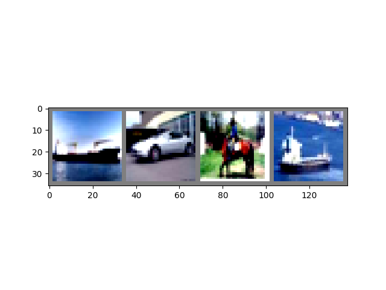
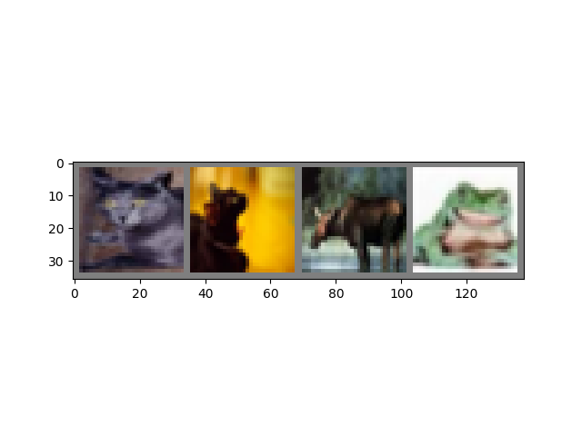

Note
Go to the end to download the full example code.
Introduction || Tensors || Autograd || Building Models || TensorBoard Support || Training Models || Model Understanding
Introduction to PyTorch#
Created On: Nov 30, 2021 | Last Updated: Jun 05, 2025 | Last Verified: Nov 05, 2024
Follow along with the video below or on youtube.
PyTorch Tensors#
Follow along with the video beginning at 03:50.
First, we’ll import pytorch.
import torch
Let’s see a few basic tensor manipulations. First, just a few of the ways to create tensors:
z = torch.zeros(5, 3)
print(z)
print(z.dtype)
tensor([[0., 0., 0.],
[0., 0., 0.],
[0., 0., 0.],
[0., 0., 0.],
[0., 0., 0.]])
torch.float32
Above, we create a 5x3 matrix filled with zeros, and query its datatype to find out that the zeros are 32-bit floating point numbers, which is the default PyTorch.
What if you wanted integers instead? You can always override the default:
i = torch.ones((5, 3), dtype=torch.int16)
print(i)
tensor([[1, 1, 1],
[1, 1, 1],
[1, 1, 1],
[1, 1, 1],
[1, 1, 1]], dtype=torch.int16)
You can see that when we do change the default, the tensor helpfully reports this when printed.
It’s common to initialize learning weights randomly, often with a specific seed for the PRNG for reproducibility of results:
torch.manual_seed(1729)
r1 = torch.rand(2, 2)
print('A random tensor:')
print(r1)
r2 = torch.rand(2, 2)
print('\nA different random tensor:')
print(r2) # new values
torch.manual_seed(1729)
r3 = torch.rand(2, 2)
print('\nShould match r1:')
print(r3) # repeats values of r1 because of re-seed
A random tensor:
tensor([[0.3126, 0.3791],
[0.3087, 0.0736]])
A different random tensor:
tensor([[0.4216, 0.0691],
[0.2332, 0.4047]])
Should match r1:
tensor([[0.3126, 0.3791],
[0.3087, 0.0736]])
PyTorch tensors perform arithmetic operations intuitively. Tensors of similar shapes may be added, multiplied, etc. Operations with scalars are distributed over the tensor:
ones = torch.ones(2, 3)
print(ones)
twos = torch.ones(2, 3) * 2 # every element is multiplied by 2
print(twos)
threes = ones + twos # addition allowed because shapes are similar
print(threes) # tensors are added element-wise
print(threes.shape) # this has the same dimensions as input tensors
r1 = torch.rand(2, 3)
r2 = torch.rand(3, 2)
# uncomment this line to get a runtime error
# r3 = r1 + r2
tensor([[1., 1., 1.],
[1., 1., 1.]])
tensor([[2., 2., 2.],
[2., 2., 2.]])
tensor([[3., 3., 3.],
[3., 3., 3.]])
torch.Size([2, 3])
Here’s a small sample of the mathematical operations available:
r = (torch.rand(2, 2) - 0.5) * 2 # values between -1 and 1
print('A random matrix, r:')
print(r)
# Common mathematical operations are supported:
print('\nAbsolute value of r:')
print(torch.abs(r))
# ...as are trigonometric functions:
print('\nInverse sine of r:')
print(torch.asin(r))
# ...and linear algebra operations like determinant and singular value decomposition
print('\nDeterminant of r:')
print(torch.det(r))
print('\nSingular value decomposition of r:')
print(torch.svd(r))
# ...and statistical and aggregate operations:
print('\nAverage and standard deviation of r:')
print(torch.std_mean(r))
print('\nMaximum value of r:')
print(torch.max(r))
A random matrix, r:
tensor([[ 0.9956, -0.2232],
[ 0.3858, -0.6593]])
Absolute value of r:
tensor([[0.9956, 0.2232],
[0.3858, 0.6593]])
Inverse sine of r:
tensor([[ 1.4775, -0.2251],
[ 0.3961, -0.7199]])
Determinant of r:
tensor(-0.5703)
Singular value decomposition of r:
torch.return_types.svd(
U=tensor([[-0.8353, -0.5497],
[-0.5497, 0.8353]]),
S=tensor([1.1793, 0.4836]),
V=tensor([[-0.8851, -0.4654],
[ 0.4654, -0.8851]]))
Average and standard deviation of r:
(tensor(0.7217), tensor(0.1247))
Maximum value of r:
tensor(0.9956)
There’s a good deal more to know about the power of PyTorch tensors, including how to set them up for parallel computations on GPU - we’ll be going into more depth in another video.
PyTorch Models#
Follow along with the video beginning at 10:00.
Let’s talk about how we can express models in PyTorch
import torch # for all things PyTorch
import torch.nn as nn # for torch.nn.Module, the parent object for PyTorch models
import torch.nn.functional as F # for the activation function

Figure: LeNet-5
Above is a diagram of LeNet-5, one of the earliest convolutional neural nets, and one of the drivers of the explosion in Deep Learning. It was built to read small images of handwritten numbers (the MNIST dataset), and correctly classify which digit was represented in the image.
Here’s the abridged version of how it works:
Layer C1 is a convolutional layer, meaning that it scans the input image for features it learned during training. It outputs a map of where it saw each of its learned features in the image. This “activation map” is downsampled in layer S2.
Layer C3 is another convolutional layer, this time scanning C1’s activation map for combinations of features. It also puts out an activation map describing the spatial locations of these feature combinations, which is downsampled in layer S4.
Finally, the fully-connected layers at the end, F5, F6, and OUTPUT, are a classifier that takes the final activation map, and classifies it into one of ten bins representing the 10 digits.
How do we express this simple neural network in code?
class LeNet(nn.Module):
def __init__(self):
super(LeNet, self).__init__()
# 1 input image channel (black & white), 6 output channels, 5x5 square convolution
# kernel
self.conv1 = nn.Conv2d(1, 6, 5)
self.conv2 = nn.Conv2d(6, 16, 5)
# an affine operation: y = Wx + b
self.fc1 = nn.Linear(16 * 5 * 5, 120) # 5*5 from image dimension
self.fc2 = nn.Linear(120, 84)
self.fc3 = nn.Linear(84, 10)
def forward(self, x):
# Max pooling over a (2, 2) window
x = F.max_pool2d(F.relu(self.conv1(x)), (2, 2))
# If the size is a square you can only specify a single number
x = F.max_pool2d(F.relu(self.conv2(x)), 2)
x = x.view(-1, self.num_flat_features(x))
x = F.relu(self.fc1(x))
x = F.relu(self.fc2(x))
x = self.fc3(x)
return x
def num_flat_features(self, x):
size = x.size()[1:] # all dimensions except the batch dimension
num_features = 1
for s in size:
num_features *= s
return num_features
Looking over this code, you should be able to spot some structural similarities with the diagram above.
This demonstrates the structure of a typical PyTorch model:
It inherits from
torch.nn.Module- modules may be nested - in fact, even theConv2dandLinearlayer classes inherit fromtorch.nn.Module.A model will have an
__init__()function, where it instantiates its layers, and loads any data artifacts it might need (e.g., an NLP model might load a vocabulary).A model will have a
forward()function. This is where the actual computation happens: An input is passed through the network layers and various functions to generate an output.Other than that, you can build out your model class like any other Python class, adding whatever properties and methods you need to support your model’s computation.
Let’s instantiate this object and run a sample input through it.
net = LeNet()
print(net) # what does the object tell us about itself?
input = torch.rand(1, 1, 32, 32) # stand-in for a 32x32 black & white image
print('\nImage batch shape:')
print(input.shape)
output = net(input) # we don't call forward() directly
print('\nRaw output:')
print(output)
print(output.shape)
LeNet(
(conv1): Conv2d(1, 6, kernel_size=(5, 5), stride=(1, 1))
(conv2): Conv2d(6, 16, kernel_size=(5, 5), stride=(1, 1))
(fc1): Linear(in_features=400, out_features=120, bias=True)
(fc2): Linear(in_features=120, out_features=84, bias=True)
(fc3): Linear(in_features=84, out_features=10, bias=True)
)
Image batch shape:
torch.Size([1, 1, 32, 32])
Raw output:
tensor([[ 0.0898, 0.0318, 0.1485, 0.0301, -0.0085, -0.1135, -0.0296, 0.0164,
0.0039, 0.0616]], grad_fn=<AddmmBackward0>)
torch.Size([1, 10])
There are a few important things happening above:
First, we instantiate the LeNet class, and we print the net
object. A subclass of torch.nn.Module will report the layers it has
created and their shapes and parameters. This can provide a handy
overview of a model if you want to get the gist of its processing.
Below that, we create a dummy input representing a 32x32 image with 1 color channel. Normally, you would load an image tile and convert it to a tensor of this shape.
You may have noticed an extra dimension to our tensor - the batch
dimension. PyTorch models assume they are working on batches of data
- for example, a batch of 16 of our image tiles would have the shape
(16, 1, 32, 32). Since we’re only using one image, we create a batch
of 1 with shape (1, 1, 32, 32).
We ask the model for an inference by calling it like a function:
net(input). The output of this call represents the model’s
confidence that the input represents a particular digit. (Since this
instance of the model hasn’t learned anything yet, we shouldn’t expect
to see any signal in the output.) Looking at the shape of output, we
can see that it also has a batch dimension, the size of which should
always match the input batch dimension. If we had passed in an input
batch of 16 instances, output would have a shape of (16, 10).
Datasets and Dataloaders#
Follow along with the video beginning at 14:00.
Below, we’re going to demonstrate using one of the ready-to-download, open-access datasets from TorchVision, how to transform the images for consumption by your model, and how to use the DataLoader to feed batches of data to your model.
The first thing we need to do is transform our incoming images into a PyTorch tensor.
#%matplotlib inline
import torch
import torchvision
import torchvision.transforms as transforms
transform = transforms.Compose(
[transforms.ToTensor(),
transforms.Normalize((0.4914, 0.4822, 0.4465), (0.2470, 0.2435, 0.2616))])
Here, we specify two transformations for our input:
transforms.ToTensor()converts images loaded by Pillow into PyTorch tensors.transforms.Normalize()adjusts the values of the tensor so that their average is zero and their standard deviation is 1.0. Most activation functions have their strongest gradients around x = 0, so centering our data there can speed learning. The values passed to the transform are the means (first tuple) and the standard deviations (second tuple) of the rgb values of the images in the dataset. You can calculate these values yourself by running these few lines of code:from torch.utils.data import ConcatDataset transform = transforms.Compose([transforms.ToTensor()]) trainset = torchvision.datasets.CIFAR10(root='./data', train=True, download=True, transform=transform) # stack all train images together into a tensor of shape # (50000, 3, 32, 32) x = torch.stack([sample[0] for sample in ConcatDataset([trainset])]) # get the mean of each channel mean = torch.mean(x, dim=(0,2,3)) # tensor([0.4914, 0.4822, 0.4465]) std = torch.std(x, dim=(0,2,3)) # tensor([0.2470, 0.2435, 0.2616])
There are many more transforms available, including cropping, centering, rotation, and reflection.
Next, we’ll create an instance of the CIFAR10 dataset. This is a set of 32x32 color image tiles representing 10 classes of objects: 6 of animals (bird, cat, deer, dog, frog, horse) and 4 of vehicles (airplane, automobile, ship, truck):
trainset = torchvision.datasets.CIFAR10(root='./data', train=True,
download=True, transform=transform)
0%| | 0.00/170M [00:00<?, ?B/s]
0%| | 65.5k/170M [00:00<05:01, 565kB/s]
0%| | 131k/170M [00:00<05:02, 562kB/s]
0%| | 197k/170M [00:00<04:58, 570kB/s]
0%| | 262k/170M [00:00<04:53, 580kB/s]
0%| | 328k/170M [00:00<04:59, 568kB/s]
0%| | 393k/170M [00:00<05:05, 556kB/s]
0%| | 459k/170M [00:00<05:04, 559kB/s]
0%| | 524k/170M [00:00<04:56, 574kB/s]
0%| | 590k/170M [00:01<04:54, 577kB/s]
0%| | 655k/170M [00:01<04:57, 570kB/s]
0%| | 721k/170M [00:01<05:04, 558kB/s]
0%| | 786k/170M [00:01<05:23, 525kB/s]
1%| | 885k/170M [00:01<04:55, 574kB/s]
1%| | 950k/170M [00:01<04:51, 581kB/s]
1%| | 1.02M/170M [00:01<04:51, 581kB/s]
1%| | 1.08M/170M [00:01<05:03, 559kB/s]
1%| | 1.15M/170M [00:02<04:59, 565kB/s]
1%| | 1.21M/170M [00:02<05:00, 563kB/s]
1%| | 1.28M/170M [00:02<04:55, 572kB/s]
1%| | 1.34M/170M [00:02<04:57, 568kB/s]
1%| | 1.41M/170M [00:02<05:10, 545kB/s]
1%| | 1.47M/170M [00:02<05:05, 553kB/s]
1%| | 1.54M/170M [00:02<05:02, 558kB/s]
1%| | 1.61M/170M [00:02<05:00, 561kB/s]
1%| | 1.67M/170M [00:02<05:00, 562kB/s]
1%| | 1.74M/170M [00:03<05:07, 550kB/s]
1%| | 1.80M/170M [00:03<05:08, 547kB/s]
1%| | 1.87M/170M [00:03<05:02, 557kB/s]
1%| | 1.93M/170M [00:03<04:55, 570kB/s]
1%| | 2.00M/170M [00:03<05:02, 558kB/s]
1%| | 2.06M/170M [00:03<05:09, 544kB/s]
1%| | 2.13M/170M [00:03<05:00, 560kB/s]
1%|▏ | 2.20M/170M [00:03<05:01, 558kB/s]
1%|▏ | 2.26M/170M [00:04<04:56, 568kB/s]
1%|▏ | 2.33M/170M [00:04<04:56, 566kB/s]
1%|▏ | 2.39M/170M [00:04<05:08, 544kB/s]
1%|▏ | 2.46M/170M [00:04<05:06, 548kB/s]
1%|▏ | 2.52M/170M [00:04<05:01, 558kB/s]
2%|▏ | 2.59M/170M [00:04<04:59, 560kB/s]
2%|▏ | 2.65M/170M [00:04<04:57, 565kB/s]
2%|▏ | 2.72M/170M [00:04<04:56, 565kB/s]
2%|▏ | 2.79M/170M [00:04<05:07, 546kB/s]
2%|▏ | 2.85M/170M [00:05<04:59, 559kB/s]
2%|▏ | 2.92M/170M [00:05<04:57, 563kB/s]
2%|▏ | 2.98M/170M [00:05<05:00, 557kB/s]
2%|▏ | 3.05M/170M [00:05<04:56, 564kB/s]
2%|▏ | 3.11M/170M [00:05<05:05, 547kB/s]
2%|▏ | 3.18M/170M [00:05<05:04, 550kB/s]
2%|▏ | 3.24M/170M [00:05<04:58, 561kB/s]
2%|▏ | 3.31M/170M [00:05<04:56, 565kB/s]
2%|▏ | 3.38M/170M [00:06<04:58, 560kB/s]
2%|▏ | 3.44M/170M [00:06<05:06, 546kB/s]
2%|▏ | 3.51M/170M [00:06<05:04, 549kB/s]
2%|▏ | 3.57M/170M [00:06<04:59, 557kB/s]
2%|▏ | 3.64M/170M [00:06<04:58, 559kB/s]
2%|▏ | 3.70M/170M [00:06<04:58, 559kB/s]
2%|▏ | 3.77M/170M [00:06<05:06, 544kB/s]
2%|▏ | 3.83M/170M [00:06<05:04, 548kB/s]
2%|▏ | 3.90M/170M [00:07<05:24, 513kB/s]
2%|▏ | 4.00M/170M [00:07<04:48, 577kB/s]
2%|▏ | 4.06M/170M [00:07<04:51, 571kB/s]
2%|▏ | 4.13M/170M [00:07<05:01, 551kB/s]
2%|▏ | 4.19M/170M [00:07<05:01, 551kB/s]
2%|▏ | 4.26M/170M [00:07<04:55, 563kB/s]
3%|▎ | 4.33M/170M [00:07<04:57, 558kB/s]
3%|▎ | 4.39M/170M [00:07<04:59, 555kB/s]
3%|▎ | 4.46M/170M [00:07<05:07, 541kB/s]
3%|▎ | 4.52M/170M [00:08<05:05, 543kB/s]
3%|▎ | 4.59M/170M [00:08<05:05, 544kB/s]
3%|▎ | 4.65M/170M [00:08<04:58, 556kB/s]
3%|▎ | 4.72M/170M [00:08<04:57, 558kB/s]
3%|▎ | 4.78M/170M [00:08<05:08, 538kB/s]
3%|▎ | 4.85M/170M [00:08<05:15, 525kB/s]
3%|▎ | 4.92M/170M [00:08<05:00, 551kB/s]
3%|▎ | 4.98M/170M [00:08<04:57, 556kB/s]
3%|▎ | 5.05M/170M [00:09<04:53, 563kB/s]
3%|▎ | 5.11M/170M [00:09<04:57, 555kB/s]
3%|▎ | 5.18M/170M [00:09<05:04, 544kB/s]
3%|▎ | 5.24M/170M [00:09<05:03, 545kB/s]
3%|▎ | 5.31M/170M [00:09<04:56, 557kB/s]
3%|▎ | 5.37M/170M [00:09<04:56, 556kB/s]
3%|▎ | 5.44M/170M [00:09<04:56, 557kB/s]
3%|▎ | 5.51M/170M [00:09<05:05, 539kB/s]
3%|▎ | 5.57M/170M [00:10<05:00, 548kB/s]
3%|▎ | 5.64M/170M [00:10<04:59, 550kB/s]
3%|▎ | 5.70M/170M [00:10<04:54, 560kB/s]
3%|▎ | 5.77M/170M [00:10<04:54, 560kB/s]
3%|▎ | 5.83M/170M [00:10<05:04, 541kB/s]
3%|▎ | 5.90M/170M [00:10<04:57, 553kB/s]
3%|▎ | 5.96M/170M [00:10<04:56, 554kB/s]
4%|▎ | 6.03M/170M [00:10<04:56, 555kB/s]
4%|▎ | 6.09M/170M [00:10<04:52, 563kB/s]
4%|▎ | 6.16M/170M [00:11<05:01, 545kB/s]
4%|▎ | 6.23M/170M [00:11<04:56, 554kB/s]
4%|▎ | 6.29M/170M [00:11<04:57, 553kB/s]
4%|▎ | 6.36M/170M [00:11<04:51, 563kB/s]
4%|▍ | 6.42M/170M [00:11<04:52, 560kB/s]
4%|▍ | 6.49M/170M [00:11<05:02, 543kB/s]
4%|▍ | 6.55M/170M [00:11<04:55, 555kB/s]
4%|▍ | 6.62M/170M [00:11<04:56, 553kB/s]
4%|▍ | 6.68M/170M [00:12<04:54, 556kB/s]
4%|▍ | 6.75M/170M [00:12<04:52, 560kB/s]
4%|▍ | 6.82M/170M [00:12<04:55, 553kB/s]
4%|▍ | 6.88M/170M [00:12<05:05, 535kB/s]
4%|▍ | 6.95M/170M [00:12<05:20, 510kB/s]
4%|▍ | 7.05M/170M [00:12<04:48, 566kB/s]
4%|▍ | 7.11M/170M [00:12<04:49, 565kB/s]
4%|▍ | 7.18M/170M [00:12<04:59, 545kB/s]
4%|▍ | 7.24M/170M [00:13<04:56, 551kB/s]
4%|▍ | 7.31M/170M [00:13<04:51, 561kB/s]
4%|▍ | 7.37M/170M [00:13<04:53, 556kB/s]
4%|▍ | 7.44M/170M [00:13<04:52, 557kB/s]
4%|▍ | 7.50M/170M [00:13<04:49, 562kB/s]
4%|▍ | 7.57M/170M [00:13<05:05, 534kB/s]
4%|▍ | 7.63M/170M [00:13<05:00, 542kB/s]
5%|▍ | 7.70M/170M [00:13<05:16, 514kB/s]
5%|▍ | 7.80M/170M [00:14<04:52, 557kB/s]
5%|▍ | 7.86M/170M [00:14<05:03, 535kB/s]
5%|▍ | 7.93M/170M [00:14<05:02, 537kB/s]
5%|▍ | 8.00M/170M [00:14<05:00, 542kB/s]
5%|▍ | 8.06M/170M [00:14<04:56, 547kB/s]
5%|▍ | 8.13M/170M [00:14<04:52, 556kB/s]
5%|▍ | 8.19M/170M [00:14<05:05, 530kB/s]
5%|▍ | 8.26M/170M [00:14<05:01, 538kB/s]
5%|▍ | 8.32M/170M [00:15<04:56, 547kB/s]
5%|▍ | 8.39M/170M [00:15<05:04, 533kB/s]
5%|▍ | 8.45M/170M [00:15<04:52, 555kB/s]
5%|▍ | 8.52M/170M [00:15<04:52, 554kB/s]
5%|▌ | 8.59M/170M [00:15<05:13, 516kB/s]
5%|▌ | 8.65M/170M [00:15<04:56, 546kB/s]
5%|▌ | 8.72M/170M [00:15<04:55, 548kB/s]
5%|▌ | 8.78M/170M [00:15<05:13, 516kB/s]
5%|▌ | 8.88M/170M [00:16<05:00, 539kB/s]
5%|▌ | 8.95M/170M [00:16<04:58, 541kB/s]
5%|▌ | 9.01M/170M [00:16<04:56, 545kB/s]
5%|▌ | 9.08M/170M [00:16<04:56, 544kB/s]
5%|▌ | 9.14M/170M [00:16<04:55, 546kB/s]
5%|▌ | 9.21M/170M [00:16<04:56, 544kB/s]
5%|▌ | 9.27M/170M [00:16<05:11, 517kB/s]
5%|▌ | 9.34M/170M [00:16<05:03, 531kB/s]
6%|▌ | 9.40M/170M [00:17<05:02, 533kB/s]
6%|▌ | 9.47M/170M [00:17<04:59, 538kB/s]
6%|▌ | 9.54M/170M [00:17<04:55, 545kB/s]
6%|▌ | 9.60M/170M [00:17<05:20, 502kB/s]
6%|▌ | 9.67M/170M [00:17<04:59, 537kB/s]
6%|▌ | 9.73M/170M [00:17<04:57, 541kB/s]
6%|▌ | 9.80M/170M [00:17<04:55, 543kB/s]
6%|▌ | 9.86M/170M [00:17<04:56, 541kB/s]
6%|▌ | 9.93M/170M [00:18<05:03, 530kB/s]
6%|▌ | 9.99M/170M [00:18<05:00, 533kB/s]
6%|▌ | 10.1M/170M [00:18<04:55, 544kB/s]
6%|▌ | 10.1M/170M [00:18<04:54, 545kB/s]
6%|▌ | 10.2M/170M [00:18<04:52, 549kB/s]
6%|▌ | 10.3M/170M [00:18<05:04, 526kB/s]
6%|▌ | 10.3M/170M [00:18<04:57, 539kB/s]
6%|▌ | 10.4M/170M [00:18<04:57, 538kB/s]
6%|▌ | 10.5M/170M [00:18<04:54, 543kB/s]
6%|▌ | 10.5M/170M [00:19<04:55, 541kB/s]
6%|▌ | 10.6M/170M [00:19<05:07, 520kB/s]
6%|▌ | 10.6M/170M [00:19<04:59, 534kB/s]
6%|▋ | 10.7M/170M [00:19<04:57, 537kB/s]
6%|▋ | 10.8M/170M [00:19<04:58, 535kB/s]
6%|▋ | 10.8M/170M [00:19<04:53, 545kB/s]
6%|▋ | 10.9M/170M [00:19<04:54, 542kB/s]
6%|▋ | 11.0M/170M [00:19<05:01, 528kB/s]
6%|▋ | 11.0M/170M [00:20<04:58, 534kB/s]
7%|▋ | 11.1M/170M [00:20<04:58, 534kB/s]
7%|▋ | 11.2M/170M [00:20<04:52, 545kB/s]
7%|▋ | 11.2M/170M [00:20<04:51, 546kB/s]
7%|▋ | 11.3M/170M [00:20<05:00, 529kB/s]
7%|▋ | 11.4M/170M [00:20<04:58, 533kB/s]
7%|▋ | 11.4M/170M [00:20<04:58, 532kB/s]
7%|▋ | 11.5M/170M [00:20<05:11, 510kB/s]
7%|▋ | 11.6M/170M [00:21<04:50, 548kB/s]
7%|▋ | 11.7M/170M [00:21<04:59, 530kB/s]
7%|▋ | 11.7M/170M [00:21<04:57, 534kB/s]
7%|▋ | 11.8M/170M [00:21<04:52, 542kB/s]
7%|▋ | 11.9M/170M [00:21<04:51, 544kB/s]
7%|▋ | 11.9M/170M [00:21<04:47, 551kB/s]
7%|▋ | 12.0M/170M [00:21<04:58, 531kB/s]
7%|▋ | 12.1M/170M [00:21<04:55, 537kB/s]
7%|▋ | 12.1M/170M [00:22<04:54, 538kB/s]
7%|▋ | 12.2M/170M [00:22<04:53, 540kB/s]
7%|▋ | 12.3M/170M [00:22<04:50, 544kB/s]
7%|▋ | 12.3M/170M [00:22<05:01, 525kB/s]
7%|▋ | 12.4M/170M [00:22<04:53, 538kB/s]
7%|▋ | 12.5M/170M [00:22<04:54, 537kB/s]
7%|▋ | 12.5M/170M [00:22<04:53, 539kB/s]
7%|▋ | 12.6M/170M [00:22<04:47, 550kB/s]
7%|▋ | 12.6M/170M [00:23<04:59, 527kB/s]
7%|▋ | 12.7M/170M [00:23<04:56, 532kB/s]
7%|▋ | 12.8M/170M [00:23<04:53, 537kB/s]
8%|▊ | 12.8M/170M [00:23<04:50, 544kB/s]
8%|▊ | 12.9M/170M [00:23<04:47, 548kB/s]
8%|▊ | 13.0M/170M [00:23<04:59, 525kB/s]
8%|▊ | 13.0M/170M [00:23<04:53, 536kB/s]
8%|▊ | 13.1M/170M [00:23<04:51, 540kB/s]
8%|▊ | 13.2M/170M [00:24<04:46, 548kB/s]
8%|▊ | 13.2M/170M [00:24<04:47, 547kB/s]
8%|▊ | 13.3M/170M [00:24<04:48, 545kB/s]
8%|▊ | 13.4M/170M [00:24<04:59, 524kB/s]
8%|▊ | 13.4M/170M [00:24<04:51, 538kB/s]
8%|▊ | 13.5M/170M [00:24<04:49, 541kB/s]
8%|▊ | 13.6M/170M [00:24<05:18, 492kB/s]
8%|▊ | 13.6M/170M [00:24<05:09, 507kB/s]
8%|▊ | 13.7M/170M [00:25<05:13, 501kB/s]
8%|▊ | 13.8M/170M [00:25<05:16, 496kB/s]
8%|▊ | 13.9M/170M [00:25<04:53, 534kB/s]
8%|▊ | 13.9M/170M [00:25<04:47, 544kB/s]
8%|▊ | 14.0M/170M [00:25<04:57, 526kB/s]
8%|▊ | 14.1M/170M [00:25<04:52, 534kB/s]
8%|▊ | 14.1M/170M [00:25<04:49, 541kB/s]
8%|▊ | 14.2M/170M [00:25<04:49, 541kB/s]
8%|▊ | 14.3M/170M [00:26<04:45, 547kB/s]
8%|▊ | 14.3M/170M [00:26<04:46, 546kB/s]
8%|▊ | 14.4M/170M [00:26<04:54, 530kB/s]
8%|▊ | 14.5M/170M [00:26<04:51, 536kB/s]
9%|▊ | 14.5M/170M [00:26<04:48, 542kB/s]
9%|▊ | 14.6M/170M [00:26<04:46, 544kB/s]
9%|▊ | 14.6M/170M [00:26<04:45, 546kB/s]
9%|▊ | 14.7M/170M [00:26<04:55, 527kB/s]
9%|▊ | 14.8M/170M [00:27<04:52, 532kB/s]
9%|▊ | 14.8M/170M [00:27<04:51, 533kB/s]
9%|▊ | 14.9M/170M [00:27<04:46, 542kB/s]
9%|▉ | 15.0M/170M [00:27<04:47, 542kB/s]
9%|▉ | 15.0M/170M [00:27<04:54, 528kB/s]
9%|▉ | 15.1M/170M [00:27<04:54, 528kB/s]
9%|▉ | 15.2M/170M [00:27<04:49, 536kB/s]
9%|▉ | 15.2M/170M [00:27<04:44, 546kB/s]
9%|▉ | 15.3M/170M [00:28<04:46, 542kB/s]
9%|▉ | 15.4M/170M [00:28<04:56, 523kB/s]
9%|▉ | 15.4M/170M [00:28<04:49, 535kB/s]
9%|▉ | 15.5M/170M [00:28<04:47, 540kB/s]
9%|▉ | 15.6M/170M [00:28<04:45, 542kB/s]
9%|▉ | 15.6M/170M [00:28<04:41, 550kB/s]
9%|▉ | 15.7M/170M [00:28<04:40, 552kB/s]
9%|▉ | 15.8M/170M [00:28<04:47, 539kB/s]
9%|▉ | 15.8M/170M [00:29<04:43, 546kB/s]
9%|▉ | 15.9M/170M [00:29<04:46, 539kB/s]
9%|▉ | 16.0M/170M [00:29<04:40, 551kB/s]
9%|▉ | 16.0M/170M [00:29<04:38, 555kB/s]
9%|▉ | 16.1M/170M [00:29<04:51, 530kB/s]
9%|▉ | 16.2M/170M [00:29<04:48, 535kB/s]
10%|▉ | 16.2M/170M [00:29<04:47, 536kB/s]
10%|▉ | 16.3M/170M [00:29<04:44, 542kB/s]
10%|▉ | 16.4M/170M [00:30<04:44, 541kB/s]
10%|▉ | 16.4M/170M [00:30<04:55, 521kB/s]
10%|▉ | 16.5M/170M [00:30<04:52, 527kB/s]
10%|▉ | 16.5M/170M [00:30<04:55, 520kB/s]
10%|▉ | 16.6M/170M [00:30<04:45, 540kB/s]
10%|▉ | 16.7M/170M [00:30<04:43, 542kB/s]
10%|▉ | 16.7M/170M [00:30<04:54, 522kB/s]
10%|▉ | 16.8M/170M [00:30<04:48, 532kB/s]
10%|▉ | 16.9M/170M [00:31<04:50, 528kB/s]
10%|▉ | 16.9M/170M [00:31<04:44, 539kB/s]
10%|▉ | 17.0M/170M [00:31<04:44, 539kB/s]
10%|█ | 17.1M/170M [00:31<04:55, 519kB/s]
10%|█ | 17.1M/170M [00:31<04:49, 529kB/s]
10%|█ | 17.2M/170M [00:31<04:46, 534kB/s]
10%|█ | 17.3M/170M [00:31<04:48, 530kB/s]
10%|█ | 17.3M/170M [00:31<04:41, 543kB/s]
10%|█ | 17.4M/170M [00:31<04:40, 545kB/s]
10%|█ | 17.5M/170M [00:32<04:52, 522kB/s]
10%|█ | 17.5M/170M [00:32<04:46, 534kB/s]
10%|█ | 17.6M/170M [00:32<04:43, 539kB/s]
10%|█ | 17.7M/170M [00:32<04:40, 545kB/s]
10%|█ | 17.7M/170M [00:32<05:01, 507kB/s]
10%|█ | 17.8M/170M [00:32<04:46, 533kB/s]
10%|█ | 17.9M/170M [00:32<04:45, 535kB/s]
11%|█ | 17.9M/170M [00:32<04:44, 537kB/s]
11%|█ | 18.0M/170M [00:33<04:42, 541kB/s]
11%|█ | 18.1M/170M [00:33<04:46, 532kB/s]
11%|█ | 18.1M/170M [00:33<05:14, 485kB/s]
11%|█ | 18.2M/170M [00:33<04:48, 528kB/s]
11%|█ | 18.3M/170M [00:33<04:44, 534kB/s]
11%|█ | 18.4M/170M [00:33<04:47, 529kB/s]
11%|█ | 18.4M/170M [00:33<04:48, 527kB/s]
11%|█ | 18.5M/170M [00:34<04:56, 513kB/s]
11%|█ | 18.5M/170M [00:34<04:52, 519kB/s]
11%|█ | 18.6M/170M [00:34<04:48, 526kB/s]
11%|█ | 18.7M/170M [00:34<04:46, 529kB/s]
11%|█ | 18.7M/170M [00:34<04:53, 517kB/s]
11%|█ | 18.8M/170M [00:34<04:54, 515kB/s]
11%|█ | 18.9M/170M [00:34<04:51, 520kB/s]
11%|█ | 18.9M/170M [00:34<04:48, 525kB/s]
11%|█ | 19.0M/170M [00:35<05:02, 501kB/s]
11%|█ | 19.1M/170M [00:35<04:47, 526kB/s]
11%|█ | 19.1M/170M [00:35<04:56, 511kB/s]
11%|█▏ | 19.2M/170M [00:35<04:53, 515kB/s]
11%|█▏ | 19.3M/170M [00:35<05:01, 502kB/s]
11%|█▏ | 19.3M/170M [00:35<04:55, 511kB/s]
11%|█▏ | 19.4M/170M [00:35<04:52, 517kB/s]
11%|█▏ | 19.5M/170M [00:35<05:01, 501kB/s]
11%|█▏ | 19.5M/170M [00:36<05:13, 481kB/s]
11%|█▏ | 19.6M/170M [00:36<04:58, 505kB/s]
12%|█▏ | 19.7M/170M [00:36<04:50, 519kB/s]
12%|█▏ | 19.7M/170M [00:36<04:51, 517kB/s]
12%|█▏ | 19.8M/170M [00:36<04:49, 521kB/s]
12%|█▏ | 19.9M/170M [00:36<04:57, 506kB/s]
12%|█▏ | 19.9M/170M [00:36<04:55, 510kB/s]
12%|█▏ | 20.0M/170M [00:36<04:51, 517kB/s]
12%|█▏ | 20.1M/170M [00:37<04:49, 520kB/s]
12%|█▏ | 20.1M/170M [00:37<04:50, 517kB/s]
12%|█▏ | 20.2M/170M [00:37<04:57, 506kB/s]
12%|█▏ | 20.3M/170M [00:37<04:55, 508kB/s]
12%|█▏ | 20.3M/170M [00:37<04:49, 518kB/s]
12%|█▏ | 20.4M/170M [00:37<04:49, 519kB/s]
12%|█▏ | 20.4M/170M [00:37<04:48, 520kB/s]
12%|█▏ | 20.5M/170M [00:38<04:56, 505kB/s]
12%|█▏ | 20.6M/170M [00:38<04:54, 509kB/s]
12%|█▏ | 20.6M/170M [00:38<04:54, 510kB/s]
12%|█▏ | 20.7M/170M [00:38<04:47, 521kB/s]
12%|█▏ | 20.8M/170M [00:38<04:48, 520kB/s]
12%|█▏ | 20.8M/170M [00:38<04:55, 507kB/s]
12%|█▏ | 20.9M/170M [00:38<04:54, 509kB/s]
12%|█▏ | 21.0M/170M [00:38<04:49, 516kB/s]
12%|█▏ | 21.0M/170M [00:39<04:47, 520kB/s]
12%|█▏ | 21.1M/170M [00:39<04:47, 520kB/s]
12%|█▏ | 21.2M/170M [00:39<04:57, 502kB/s]
12%|█▏ | 21.2M/170M [00:39<04:53, 509kB/s]
12%|█▏ | 21.3M/170M [00:39<04:50, 513kB/s]
13%|█▎ | 21.4M/170M [00:39<04:47, 519kB/s]
13%|█▎ | 21.4M/170M [00:39<04:48, 517kB/s]
13%|█▎ | 21.5M/170M [00:39<04:47, 518kB/s]
13%|█▎ | 21.6M/170M [00:40<04:58, 499kB/s]
13%|█▎ | 21.6M/170M [00:40<04:53, 508kB/s]
13%|█▎ | 21.7M/170M [00:40<04:49, 515kB/s]
13%|█▎ | 21.8M/170M [00:40<04:47, 517kB/s]
13%|█▎ | 21.8M/170M [00:40<04:46, 519kB/s]
13%|█▎ | 21.9M/170M [00:40<04:57, 500kB/s]
13%|█▎ | 22.0M/170M [00:40<04:50, 511kB/s]
13%|█▎ | 22.0M/170M [00:40<04:48, 514kB/s]
13%|█▎ | 22.1M/170M [00:41<05:01, 493kB/s]
13%|█▎ | 22.2M/170M [00:41<04:46, 519kB/s]
13%|█▎ | 22.2M/170M [00:41<04:45, 519kB/s]
13%|█▎ | 22.3M/170M [00:41<04:41, 526kB/s]
13%|█▎ | 22.4M/170M [00:41<04:44, 521kB/s]
13%|█▎ | 22.4M/170M [00:41<04:44, 520kB/s]
13%|█▎ | 22.5M/170M [00:41<04:39, 530kB/s]
13%|█▎ | 22.6M/170M [00:42<04:52, 505kB/s]
13%|█▎ | 22.6M/170M [00:42<04:49, 511kB/s]
13%|█▎ | 22.7M/170M [00:42<04:42, 523kB/s]
13%|█▎ | 22.8M/170M [00:42<04:41, 524kB/s]
13%|█▎ | 22.8M/170M [00:42<04:40, 526kB/s]
13%|█▎ | 22.9M/170M [00:42<04:53, 503kB/s]
13%|█▎ | 23.0M/170M [00:42<04:54, 502kB/s]
14%|█▎ | 23.0M/170M [00:42<04:46, 514kB/s]
14%|█▎ | 23.1M/170M [00:43<04:41, 523kB/s]
14%|█▎ | 23.2M/170M [00:43<04:55, 498kB/s]
14%|█▎ | 23.2M/170M [00:43<04:55, 499kB/s]
14%|█▎ | 23.3M/170M [00:43<04:50, 507kB/s]
14%|█▎ | 23.4M/170M [00:43<04:47, 511kB/s]
14%|█▎ | 23.4M/170M [00:43<04:39, 527kB/s]
14%|█▍ | 23.5M/170M [00:43<04:43, 519kB/s]
14%|█▍ | 23.6M/170M [00:43<04:46, 512kB/s]
14%|█▍ | 23.6M/170M [00:44<04:43, 518kB/s]
14%|█▍ | 23.7M/170M [00:44<04:38, 527kB/s]
14%|█▍ | 23.8M/170M [00:44<04:34, 535kB/s]
14%|█▍ | 23.8M/170M [00:44<04:32, 538kB/s]
14%|█▍ | 23.9M/170M [00:44<04:31, 540kB/s]
14%|█▍ | 24.0M/170M [00:44<04:39, 524kB/s]
14%|█▍ | 24.0M/170M [00:44<04:52, 501kB/s]
14%|█▍ | 24.1M/170M [00:44<04:28, 544kB/s]
14%|█▍ | 24.2M/170M [00:45<04:45, 512kB/s]
14%|█▍ | 24.2M/170M [00:45<04:34, 532kB/s]
14%|█▍ | 24.3M/170M [00:45<04:29, 543kB/s]
14%|█▍ | 24.4M/170M [00:45<04:31, 538kB/s]
14%|█▍ | 24.4M/170M [00:45<04:30, 539kB/s]
14%|█▍ | 24.5M/170M [00:45<04:27, 546kB/s]
14%|█▍ | 24.6M/170M [00:45<04:40, 521kB/s]
14%|█▍ | 24.6M/170M [00:45<04:37, 525kB/s]
14%|█▍ | 24.7M/170M [00:46<04:34, 531kB/s]
15%|█▍ | 24.8M/170M [00:46<04:33, 533kB/s]
15%|█▍ | 24.8M/170M [00:46<04:32, 534kB/s]
15%|█▍ | 24.9M/170M [00:46<04:28, 541kB/s]
15%|█▍ | 25.0M/170M [00:46<04:37, 525kB/s]
15%|█▍ | 25.0M/170M [00:46<04:31, 536kB/s]
15%|█▍ | 25.1M/170M [00:46<04:29, 540kB/s]
15%|█▍ | 25.2M/170M [00:46<04:29, 540kB/s]
15%|█▍ | 25.2M/170M [00:47<04:27, 543kB/s]
15%|█▍ | 25.3M/170M [00:47<04:38, 522kB/s]
15%|█▍ | 25.4M/170M [00:47<04:35, 528kB/s]
15%|█▍ | 25.4M/170M [00:47<04:33, 531kB/s]
15%|█▍ | 25.5M/170M [00:47<04:33, 531kB/s]
15%|█▍ | 25.6M/170M [00:47<04:32, 532kB/s]
15%|█▌ | 25.6M/170M [00:47<04:45, 508kB/s]
15%|█▌ | 25.7M/170M [00:47<04:37, 522kB/s]
15%|█▌ | 25.8M/170M [00:48<04:40, 516kB/s]
15%|█▌ | 25.8M/170M [00:48<04:46, 505kB/s]
15%|█▌ | 25.9M/170M [00:48<04:42, 511kB/s]
15%|█▌ | 26.0M/170M [00:48<04:51, 496kB/s]
15%|█▌ | 26.0M/170M [00:48<04:45, 506kB/s]
15%|█▌ | 26.1M/170M [00:48<04:40, 516kB/s]
15%|█▌ | 26.1M/170M [00:48<04:40, 515kB/s]
15%|█▌ | 26.2M/170M [00:48<04:33, 528kB/s]
15%|█▌ | 26.3M/170M [00:49<04:41, 512kB/s]
15%|█▌ | 26.3M/170M [00:49<04:35, 523kB/s]
15%|█▌ | 26.4M/170M [00:49<04:35, 523kB/s]
16%|█▌ | 26.5M/170M [00:49<04:32, 528kB/s]
16%|█▌ | 26.5M/170M [00:49<04:31, 531kB/s]
16%|█▌ | 26.6M/170M [00:49<04:30, 533kB/s]
16%|█▌ | 26.7M/170M [00:49<04:43, 507kB/s]
16%|█▌ | 26.7M/170M [00:49<04:34, 523kB/s]
16%|█▌ | 26.8M/170M [00:50<04:32, 527kB/s]
16%|█▌ | 26.9M/170M [00:50<04:32, 527kB/s]
16%|█▌ | 26.9M/170M [00:50<04:26, 538kB/s]
16%|█▌ | 27.0M/170M [00:50<04:37, 517kB/s]
16%|█▌ | 27.1M/170M [00:50<04:30, 531kB/s]
16%|█▌ | 27.1M/170M [00:50<04:29, 532kB/s]
16%|█▌ | 27.2M/170M [00:50<04:26, 537kB/s]
16%|█▌ | 27.3M/170M [00:50<04:24, 542kB/s]
16%|█▌ | 27.3M/170M [00:51<04:31, 528kB/s]
16%|█▌ | 27.4M/170M [00:51<04:24, 541kB/s]
16%|█▌ | 27.5M/170M [00:51<04:23, 543kB/s]
16%|█▌ | 27.5M/170M [00:51<04:22, 545kB/s]
16%|█▌ | 27.6M/170M [00:51<04:18, 552kB/s]
16%|█▌ | 27.7M/170M [00:51<04:29, 530kB/s]
16%|█▋ | 27.7M/170M [00:51<04:23, 541kB/s]
16%|█▋ | 27.8M/170M [00:51<04:29, 529kB/s]
16%|█▋ | 27.9M/170M [00:52<04:18, 552kB/s]
16%|█▋ | 27.9M/170M [00:52<04:16, 556kB/s]
16%|█▋ | 28.0M/170M [00:52<04:19, 549kB/s]
16%|█▋ | 28.0M/170M [00:52<04:27, 532kB/s]
16%|█▋ | 28.1M/170M [00:52<04:22, 542kB/s]
17%|█▋ | 28.2M/170M [00:52<04:19, 549kB/s]
17%|█▋ | 28.2M/170M [00:52<04:22, 542kB/s]
17%|█▋ | 28.3M/170M [00:52<04:30, 525kB/s]
17%|█▋ | 28.4M/170M [00:53<04:28, 530kB/s]
17%|█▋ | 28.4M/170M [00:53<04:21, 542kB/s]
17%|█▋ | 28.5M/170M [00:53<04:18, 548kB/s]
17%|█▋ | 28.6M/170M [00:53<04:22, 541kB/s]
17%|█▋ | 28.6M/170M [00:53<04:18, 548kB/s]
17%|█▋ | 28.7M/170M [00:53<04:27, 530kB/s]
17%|█▋ | 28.8M/170M [00:53<04:22, 539kB/s]
17%|█▋ | 28.8M/170M [00:53<04:19, 546kB/s]
17%|█▋ | 28.9M/170M [00:53<04:17, 550kB/s]
17%|█▋ | 29.0M/170M [00:54<04:15, 555kB/s]
17%|█▋ | 29.0M/170M [00:54<04:40, 504kB/s]
17%|█▋ | 29.1M/170M [00:54<04:19, 545kB/s]
17%|█▋ | 29.2M/170M [00:54<04:19, 544kB/s]
17%|█▋ | 29.3M/170M [00:54<04:16, 550kB/s]
17%|█▋ | 29.3M/170M [00:54<04:15, 552kB/s]
17%|█▋ | 29.4M/170M [00:54<04:20, 541kB/s]
17%|█▋ | 29.5M/170M [00:55<04:22, 537kB/s]
17%|█▋ | 29.5M/170M [00:55<04:18, 545kB/s]
17%|█▋ | 29.6M/170M [00:55<04:15, 552kB/s]
17%|█▋ | 29.7M/170M [00:55<04:16, 549kB/s]
17%|█▋ | 29.7M/170M [00:55<04:24, 532kB/s]
17%|█▋ | 29.8M/170M [00:55<04:29, 523kB/s]
18%|█▊ | 29.9M/170M [00:55<04:20, 540kB/s]
18%|█▊ | 29.9M/170M [00:55<04:16, 549kB/s]
18%|█▊ | 30.0M/170M [00:55<04:18, 543kB/s]
18%|█▊ | 30.0M/170M [00:56<04:26, 528kB/s]
18%|█▊ | 30.1M/170M [00:56<04:19, 541kB/s]
18%|█▊ | 30.2M/170M [00:56<04:17, 545kB/s]
18%|█▊ | 30.2M/170M [00:56<04:19, 540kB/s]
18%|█▊ | 30.3M/170M [00:56<04:19, 541kB/s]
18%|█▊ | 30.4M/170M [00:56<04:29, 520kB/s]
18%|█▊ | 30.4M/170M [00:56<04:22, 534kB/s]
18%|█▊ | 30.5M/170M [00:56<04:19, 539kB/s]
18%|█▊ | 30.6M/170M [00:57<04:17, 543kB/s]
18%|█▊ | 30.6M/170M [00:57<04:14, 550kB/s]
18%|█▊ | 30.7M/170M [00:57<04:13, 551kB/s]
18%|█▊ | 30.8M/170M [00:57<04:22, 532kB/s]
18%|█▊ | 30.8M/170M [00:57<04:21, 535kB/s]
18%|█▊ | 30.9M/170M [00:57<04:17, 542kB/s]
18%|█▊ | 31.0M/170M [00:57<04:14, 547kB/s]
18%|█▊ | 31.0M/170M [00:57<04:30, 516kB/s]
18%|█▊ | 31.1M/170M [00:58<04:19, 538kB/s]
18%|█▊ | 31.2M/170M [00:58<04:18, 539kB/s]
18%|█▊ | 31.2M/170M [00:58<04:17, 542kB/s]
18%|█▊ | 31.3M/170M [00:58<04:15, 545kB/s]
18%|█▊ | 31.4M/170M [00:58<04:16, 543kB/s]
18%|█▊ | 31.4M/170M [00:58<04:25, 523kB/s]
18%|█▊ | 31.5M/170M [00:58<04:19, 536kB/s]
19%|█▊ | 31.6M/170M [00:58<04:17, 539kB/s]
19%|█▊ | 31.6M/170M [00:59<04:14, 546kB/s]
19%|█▊ | 31.7M/170M [00:59<04:14, 546kB/s]
19%|█▊ | 31.8M/170M [00:59<04:25, 523kB/s]
19%|█▊ | 31.8M/170M [00:59<04:18, 536kB/s]
19%|█▊ | 31.9M/170M [00:59<04:16, 540kB/s]
19%|█▊ | 31.9M/170M [00:59<04:17, 537kB/s]
19%|█▉ | 32.0M/170M [00:59<04:13, 546kB/s]
19%|█▉ | 32.1M/170M [00:59<04:13, 546kB/s]
19%|█▉ | 32.1M/170M [01:00<04:25, 521kB/s]
19%|█▉ | 32.2M/170M [01:00<04:21, 528kB/s]
19%|█▉ | 32.3M/170M [01:00<04:23, 525kB/s]
19%|█▉ | 32.3M/170M [01:00<04:16, 538kB/s]
19%|█▉ | 32.4M/170M [01:00<04:33, 505kB/s]
19%|█▉ | 32.5M/170M [01:00<04:20, 530kB/s]
19%|█▉ | 32.5M/170M [01:00<04:17, 536kB/s]
19%|█▉ | 32.6M/170M [01:00<04:16, 538kB/s]
19%|█▉ | 32.7M/170M [01:00<04:12, 546kB/s]
19%|█▉ | 32.7M/170M [01:01<04:28, 514kB/s]
19%|█▉ | 32.8M/170M [01:01<04:15, 539kB/s]
19%|█▉ | 32.9M/170M [01:01<04:10, 549kB/s]
19%|█▉ | 32.9M/170M [01:01<04:10, 550kB/s]
19%|█▉ | 33.0M/170M [01:01<04:09, 551kB/s]
19%|█▉ | 33.1M/170M [01:01<04:09, 551kB/s]
19%|█▉ | 33.1M/170M [01:01<04:18, 531kB/s]
19%|█▉ | 33.2M/170M [01:01<04:15, 537kB/s]
20%|█▉ | 33.3M/170M [01:02<04:11, 545kB/s]
20%|█▉ | 33.3M/170M [01:02<04:09, 549kB/s]
20%|█▉ | 33.4M/170M [01:02<04:06, 557kB/s]
20%|█▉ | 33.5M/170M [01:02<04:14, 539kB/s]
20%|█▉ | 33.5M/170M [01:02<04:13, 540kB/s]
20%|█▉ | 33.6M/170M [01:02<04:08, 552kB/s]
20%|█▉ | 33.7M/170M [01:02<04:08, 550kB/s]
20%|█▉ | 33.7M/170M [01:02<04:09, 548kB/s]
20%|█▉ | 33.8M/170M [01:03<04:07, 552kB/s]
20%|█▉ | 33.8M/170M [01:03<04:13, 539kB/s]
20%|█▉ | 33.9M/170M [01:03<04:08, 549kB/s]
20%|█▉ | 34.0M/170M [01:03<04:08, 550kB/s]
20%|█▉ | 34.0M/170M [01:03<04:08, 549kB/s]
20%|██ | 34.1M/170M [01:03<04:03, 560kB/s]
20%|██ | 34.2M/170M [01:03<04:13, 538kB/s]
20%|██ | 34.2M/170M [01:03<04:09, 547kB/s]
20%|██ | 34.3M/170M [01:03<04:05, 555kB/s]
20%|██ | 34.4M/170M [01:04<04:03, 559kB/s]
20%|██ | 34.4M/170M [01:04<04:02, 562kB/s]
20%|██ | 34.5M/170M [01:04<04:10, 543kB/s]
20%|██ | 34.6M/170M [01:04<04:08, 548kB/s]
20%|██ | 34.6M/170M [01:04<04:04, 556kB/s]
20%|██ | 34.7M/170M [01:04<04:05, 553kB/s]
20%|██ | 34.8M/170M [01:04<04:03, 558kB/s]
20%|██ | 34.8M/170M [01:04<04:25, 510kB/s]
20%|██ | 34.9M/170M [01:05<03:59, 565kB/s]
21%|██ | 35.0M/170M [01:05<03:56, 573kB/s]
21%|██ | 35.1M/170M [01:05<04:01, 561kB/s]
21%|██ | 35.1M/170M [01:05<03:58, 567kB/s]
21%|██ | 35.2M/170M [01:05<04:06, 549kB/s]
21%|██ | 35.3M/170M [01:05<04:04, 553kB/s]
21%|██ | 35.3M/170M [01:05<04:03, 555kB/s]
21%|██ | 35.4M/170M [01:05<04:17, 525kB/s]
21%|██ | 35.5M/170M [01:06<03:51, 582kB/s]
21%|██ | 35.6M/170M [01:06<04:01, 558kB/s]
21%|██ | 35.6M/170M [01:06<04:10, 539kB/s]
21%|██ | 35.7M/170M [01:06<03:53, 576kB/s]
21%|██ | 35.8M/170M [01:06<04:09, 539kB/s]
21%|██ | 35.8M/170M [01:06<04:01, 558kB/s]
21%|██ | 35.9M/170M [01:06<03:59, 561kB/s]
21%|██ | 36.0M/170M [01:06<03:57, 566kB/s]
21%|██ | 36.0M/170M [01:07<04:00, 560kB/s]
21%|██ | 36.1M/170M [01:07<03:59, 561kB/s]
21%|██ | 36.2M/170M [01:07<03:59, 561kB/s]
21%|██▏ | 36.2M/170M [01:07<04:05, 546kB/s]
21%|██▏ | 36.3M/170M [01:07<04:05, 547kB/s]
21%|██▏ | 36.4M/170M [01:07<04:02, 553kB/s]
21%|██▏ | 36.4M/170M [01:07<04:00, 558kB/s]
21%|██▏ | 36.5M/170M [01:07<03:59, 560kB/s]
21%|██▏ | 36.6M/170M [01:08<04:04, 548kB/s]
21%|██▏ | 36.6M/170M [01:08<04:03, 550kB/s]
22%|██▏ | 36.7M/170M [01:08<04:00, 557kB/s]
22%|██▏ | 36.8M/170M [01:08<04:03, 550kB/s]
22%|██▏ | 36.8M/170M [01:08<03:59, 557kB/s]
22%|██▏ | 36.9M/170M [01:08<04:07, 540kB/s]
22%|██▏ | 37.0M/170M [01:08<04:03, 548kB/s]
22%|██▏ | 37.0M/170M [01:08<04:02, 550kB/s]
22%|██▏ | 37.1M/170M [01:09<04:13, 527kB/s]
22%|██▏ | 37.2M/170M [01:09<03:51, 575kB/s]
22%|██▏ | 37.3M/170M [01:09<04:02, 551kB/s]
22%|██▏ | 37.3M/170M [01:09<04:00, 554kB/s]
22%|██▏ | 37.4M/170M [01:09<03:56, 564kB/s]
22%|██▏ | 37.5M/170M [01:09<03:56, 564kB/s]
22%|██▏ | 37.5M/170M [01:09<03:57, 560kB/s]
22%|██▏ | 37.6M/170M [01:09<04:05, 542kB/s]
22%|██▏ | 37.7M/170M [01:10<04:02, 548kB/s]
22%|██▏ | 37.7M/170M [01:10<03:57, 560kB/s]
22%|██▏ | 37.8M/170M [01:10<03:56, 562kB/s]
22%|██▏ | 37.8M/170M [01:10<03:55, 563kB/s]
22%|██▏ | 37.9M/170M [01:10<04:02, 548kB/s]
22%|██▏ | 38.0M/170M [01:10<04:01, 548kB/s]
22%|██▏ | 38.0M/170M [01:10<03:56, 560kB/s]
22%|██▏ | 38.1M/170M [01:10<03:55, 563kB/s]
22%|██▏ | 38.2M/170M [01:10<03:58, 555kB/s]
22%|██▏ | 38.2M/170M [01:11<04:02, 545kB/s]
22%|██▏ | 38.3M/170M [01:11<03:58, 555kB/s]
23%|██▎ | 38.4M/170M [01:11<03:55, 562kB/s]
23%|██▎ | 38.4M/170M [01:11<03:53, 565kB/s]
23%|██▎ | 38.5M/170M [01:11<03:52, 567kB/s]
23%|██▎ | 38.6M/170M [01:11<04:01, 546kB/s]
23%|██▎ | 38.6M/170M [01:11<04:00, 549kB/s]
23%|██▎ | 38.7M/170M [01:11<03:56, 558kB/s]
23%|██▎ | 38.8M/170M [01:12<03:55, 561kB/s]
23%|██▎ | 38.8M/170M [01:12<03:54, 562kB/s]
23%|██▎ | 38.9M/170M [01:12<03:53, 564kB/s]
23%|██▎ | 39.0M/170M [01:12<04:01, 545kB/s]
23%|██▎ | 39.0M/170M [01:12<03:58, 552kB/s]
23%|██▎ | 39.1M/170M [01:12<03:55, 557kB/s]
23%|██▎ | 39.2M/170M [01:12<03:55, 558kB/s]
23%|██▎ | 39.2M/170M [01:12<03:54, 559kB/s]
23%|██▎ | 39.3M/170M [01:12<04:00, 545kB/s]
23%|██▎ | 39.4M/170M [01:13<03:59, 548kB/s]
23%|██▎ | 39.4M/170M [01:13<03:54, 560kB/s]
23%|██▎ | 39.5M/170M [01:13<03:53, 561kB/s]
23%|██▎ | 39.6M/170M [01:13<03:55, 556kB/s]
23%|██▎ | 39.6M/170M [01:13<04:01, 543kB/s]
23%|██▎ | 39.7M/170M [01:13<03:58, 548kB/s]
23%|██▎ | 39.7M/170M [01:13<03:55, 555kB/s]
23%|██▎ | 39.8M/170M [01:13<03:54, 557kB/s]
23%|██▎ | 39.9M/170M [01:14<03:53, 560kB/s]
23%|██▎ | 39.9M/170M [01:14<04:01, 541kB/s]
23%|██▎ | 40.0M/170M [01:14<03:58, 547kB/s]
24%|██▎ | 40.1M/170M [01:14<03:56, 552kB/s]
24%|██▎ | 40.1M/170M [01:14<03:52, 560kB/s]
24%|██▎ | 40.2M/170M [01:14<03:52, 560kB/s]
24%|██▎ | 40.3M/170M [01:14<03:48, 569kB/s]
24%|██▎ | 40.3M/170M [01:14<03:59, 544kB/s]
24%|██▎ | 40.4M/170M [01:14<03:53, 557kB/s]
24%|██▎ | 40.5M/170M [01:15<03:55, 551kB/s]
24%|██▍ | 40.5M/170M [01:15<03:54, 555kB/s]
24%|██▍ | 40.6M/170M [01:15<03:47, 571kB/s]
24%|██▍ | 40.7M/170M [01:15<03:56, 550kB/s]
24%|██▍ | 40.7M/170M [01:15<03:53, 556kB/s]
24%|██▍ | 40.8M/170M [01:15<03:47, 569kB/s]
24%|██▍ | 40.9M/170M [01:15<03:46, 572kB/s]
24%|██▍ | 40.9M/170M [01:15<03:44, 578kB/s]
24%|██▍ | 41.0M/170M [01:16<03:49, 564kB/s]
24%|██▍ | 41.1M/170M [01:16<03:49, 563kB/s]
24%|██▍ | 41.1M/170M [01:16<03:48, 565kB/s]
24%|██▍ | 41.2M/170M [01:16<03:45, 572kB/s]
24%|██▍ | 41.3M/170M [01:16<03:44, 575kB/s]
24%|██▍ | 41.3M/170M [01:16<03:53, 554kB/s]
24%|██▍ | 41.4M/170M [01:16<03:48, 566kB/s]
24%|██▍ | 41.5M/170M [01:16<03:50, 561kB/s]
24%|██▍ | 41.5M/170M [01:16<03:49, 563kB/s]
24%|██▍ | 41.6M/170M [01:17<03:43, 576kB/s]
24%|██▍ | 41.6M/170M [01:17<03:53, 553kB/s]
24%|██▍ | 41.7M/170M [01:17<03:48, 564kB/s]
25%|██▍ | 41.8M/170M [01:17<03:46, 569kB/s]
25%|██▍ | 41.8M/170M [01:17<03:46, 569kB/s]
25%|██▍ | 41.9M/170M [01:17<03:41, 580kB/s]
25%|██▍ | 42.0M/170M [01:17<03:41, 580kB/s]
25%|██▍ | 42.0M/170M [01:17<03:51, 556kB/s]
25%|██▍ | 42.1M/170M [01:17<03:47, 564kB/s]
25%|██▍ | 42.2M/170M [01:18<03:45, 570kB/s]
25%|██▍ | 42.2M/170M [01:18<03:42, 577kB/s]
25%|██▍ | 42.3M/170M [01:18<03:42, 575kB/s]
25%|██▍ | 42.4M/170M [01:18<04:06, 520kB/s]
25%|██▍ | 42.5M/170M [01:18<03:41, 578kB/s]
25%|██▍ | 42.5M/170M [01:18<03:41, 578kB/s]
25%|██▍ | 42.6M/170M [01:18<03:40, 581kB/s]
25%|██▌ | 42.7M/170M [01:18<03:49, 558kB/s]
25%|██▌ | 42.7M/170M [01:19<03:46, 564kB/s]
25%|██▌ | 42.8M/170M [01:19<03:44, 569kB/s]
25%|██▌ | 42.9M/170M [01:19<03:41, 577kB/s]
25%|██▌ | 42.9M/170M [01:19<03:40, 578kB/s]
25%|██▌ | 43.0M/170M [01:19<03:38, 583kB/s]
25%|██▌ | 43.1M/170M [01:19<03:49, 554kB/s]
25%|██▌ | 43.1M/170M [01:19<03:42, 572kB/s]
25%|██▌ | 43.2M/170M [01:19<03:40, 576kB/s]
25%|██▌ | 43.3M/170M [01:19<03:40, 578kB/s]
25%|██▌ | 43.3M/170M [01:20<03:35, 590kB/s]
25%|██▌ | 43.4M/170M [01:20<03:43, 569kB/s]
25%|██▌ | 43.5M/170M [01:20<03:40, 577kB/s]
26%|██▌ | 43.5M/170M [01:20<03:38, 580kB/s]
26%|██▌ | 43.6M/170M [01:20<03:38, 582kB/s]
26%|██▌ | 43.6M/170M [01:20<03:34, 590kB/s]
26%|██▌ | 43.7M/170M [01:20<03:42, 569kB/s]
26%|██▌ | 43.8M/170M [01:20<03:38, 580kB/s]
26%|██▌ | 43.8M/170M [01:21<03:39, 578kB/s]
26%|██▌ | 43.9M/170M [01:21<03:37, 583kB/s]
26%|██▌ | 44.0M/170M [01:21<03:36, 584kB/s]
26%|██▌ | 44.0M/170M [01:21<03:41, 571kB/s]
26%|██▌ | 44.1M/170M [01:21<03:37, 580kB/s]
26%|██▌ | 44.2M/170M [01:21<03:40, 572kB/s]
26%|██▌ | 44.2M/170M [01:21<03:40, 571kB/s]
26%|██▌ | 44.3M/170M [01:21<03:35, 586kB/s]
26%|██▌ | 44.4M/170M [01:21<03:37, 581kB/s]
26%|██▌ | 44.4M/170M [01:22<03:42, 567kB/s]
26%|██▌ | 44.5M/170M [01:22<03:35, 584kB/s]
26%|██▌ | 44.6M/170M [01:22<03:35, 583kB/s]
26%|██▌ | 44.6M/170M [01:22<03:36, 582kB/s]
26%|██▌ | 44.7M/170M [01:22<03:31, 593kB/s]
26%|██▋ | 44.8M/170M [01:22<03:41, 566kB/s]
26%|██▋ | 44.8M/170M [01:22<03:38, 576kB/s]
26%|██▋ | 44.9M/170M [01:22<03:34, 587kB/s]
26%|██▋ | 45.0M/170M [01:22<03:34, 585kB/s]
26%|██▋ | 45.0M/170M [01:23<03:31, 593kB/s]
26%|██▋ | 45.1M/170M [01:23<03:37, 576kB/s]
26%|██▋ | 45.2M/170M [01:23<03:38, 574kB/s]
27%|██▋ | 45.2M/170M [01:23<03:34, 583kB/s]
27%|██▋ | 45.3M/170M [01:23<03:30, 594kB/s]
27%|██▋ | 45.4M/170M [01:23<03:32, 588kB/s]
27%|██▋ | 45.4M/170M [01:23<03:37, 576kB/s]
27%|██▋ | 45.5M/170M [01:23<03:34, 582kB/s]
27%|██▋ | 45.5M/170M [01:23<03:35, 580kB/s]
27%|██▋ | 45.6M/170M [01:24<03:31, 591kB/s]
27%|██▋ | 45.7M/170M [01:24<03:30, 592kB/s]
27%|██▋ | 45.7M/170M [01:24<03:37, 573kB/s]
27%|██▋ | 45.8M/170M [01:24<03:34, 580kB/s]
27%|██▋ | 45.9M/170M [01:24<03:33, 584kB/s]
27%|██▋ | 45.9M/170M [01:24<03:32, 585kB/s]
27%|██▋ | 46.0M/170M [01:24<03:31, 588kB/s]
27%|██▋ | 46.1M/170M [01:24<03:31, 588kB/s]
27%|██▋ | 46.1M/170M [01:24<03:39, 567kB/s]
27%|██▋ | 46.2M/170M [01:25<03:36, 575kB/s]
27%|██▋ | 46.3M/170M [01:25<03:32, 586kB/s]
27%|██▋ | 46.3M/170M [01:25<03:35, 575kB/s]
27%|██▋ | 46.4M/170M [01:25<03:33, 581kB/s]
27%|██▋ | 46.5M/170M [01:25<03:59, 518kB/s]
27%|██▋ | 46.6M/170M [01:25<03:30, 589kB/s]
27%|██▋ | 46.6M/170M [01:25<03:30, 590kB/s]
27%|██▋ | 46.7M/170M [01:25<03:28, 594kB/s]
27%|██▋ | 46.8M/170M [01:26<03:37, 570kB/s]
27%|██▋ | 46.8M/170M [01:26<03:32, 583kB/s]
28%|██▊ | 46.9M/170M [01:26<03:32, 581kB/s]
28%|██▊ | 47.0M/170M [01:26<03:33, 580kB/s]
28%|██▊ | 47.0M/170M [01:26<03:30, 586kB/s]
28%|██▊ | 47.1M/170M [01:26<03:29, 589kB/s]
28%|██▊ | 47.2M/170M [01:26<03:39, 561kB/s]
28%|██▊ | 47.2M/170M [01:26<03:35, 573kB/s]
28%|██▊ | 47.3M/170M [01:26<03:34, 575kB/s]
28%|██▊ | 47.3M/170M [01:27<03:32, 579kB/s]
28%|██▊ | 47.4M/170M [01:27<03:32, 579kB/s]
28%|██▊ | 47.5M/170M [01:27<03:39, 562kB/s]
28%|██▊ | 47.5M/170M [01:27<03:38, 564kB/s]
28%|██▊ | 47.6M/170M [01:27<03:36, 568kB/s]
28%|██▊ | 47.7M/170M [01:27<03:33, 577kB/s]
28%|██▊ | 47.7M/170M [01:27<03:34, 572kB/s]
28%|██▊ | 47.8M/170M [01:27<03:42, 550kB/s]
28%|██▊ | 47.9M/170M [01:27<03:40, 556kB/s]
28%|██▊ | 47.9M/170M [01:28<03:37, 564kB/s]
28%|██▊ | 48.0M/170M [01:28<03:35, 569kB/s]
28%|██▊ | 48.1M/170M [01:28<03:34, 571kB/s]
28%|██▊ | 48.1M/170M [01:28<03:39, 558kB/s]
28%|██▊ | 48.2M/170M [01:28<03:35, 569kB/s]
28%|██▊ | 48.3M/170M [01:28<03:32, 576kB/s]
28%|██▊ | 48.3M/170M [01:28<03:33, 573kB/s]
28%|██▊ | 48.4M/170M [01:28<03:30, 581kB/s]
28%|██▊ | 48.5M/170M [01:29<03:28, 584kB/s]
28%|██▊ | 48.5M/170M [01:29<03:38, 559kB/s]
29%|██▊ | 48.6M/170M [01:29<03:34, 569kB/s]
29%|██▊ | 48.7M/170M [01:29<03:34, 568kB/s]
29%|██▊ | 48.7M/170M [01:29<03:30, 577kB/s]
29%|██▊ | 48.8M/170M [01:29<03:30, 577kB/s]
29%|██▊ | 48.9M/170M [01:29<03:38, 558kB/s]
29%|██▊ | 48.9M/170M [01:29<03:35, 564kB/s]
29%|██▊ | 49.0M/170M [01:29<03:31, 576kB/s]
29%|██▉ | 49.1M/170M [01:30<03:33, 569kB/s]
29%|██▉ | 49.1M/170M [01:30<03:34, 566kB/s]
29%|██▉ | 49.2M/170M [01:30<03:37, 558kB/s]
29%|██▉ | 49.3M/170M [01:30<03:36, 560kB/s]
29%|██▉ | 49.3M/170M [01:30<03:34, 566kB/s]
29%|██▉ | 49.4M/170M [01:30<03:33, 568kB/s]
29%|██▉ | 49.4M/170M [01:30<03:33, 566kB/s]
29%|██▉ | 49.5M/170M [01:30<03:38, 554kB/s]
29%|██▉ | 49.6M/170M [01:30<03:36, 559kB/s]
29%|██▉ | 49.6M/170M [01:31<03:34, 565kB/s]
29%|██▉ | 49.7M/170M [01:31<03:31, 571kB/s]
29%|██▉ | 49.8M/170M [01:31<03:33, 566kB/s]
29%|██▉ | 49.8M/170M [01:31<03:40, 546kB/s]
29%|██▉ | 49.9M/170M [01:31<03:38, 552kB/s]
29%|██▉ | 50.0M/170M [01:31<03:50, 522kB/s]
29%|██▉ | 50.1M/170M [01:31<03:31, 571kB/s]
29%|██▉ | 50.1M/170M [01:31<03:31, 569kB/s]
29%|██▉ | 50.2M/170M [01:32<03:35, 558kB/s]
29%|██▉ | 50.3M/170M [01:32<03:35, 558kB/s]
30%|██▉ | 50.3M/170M [01:32<03:33, 562kB/s]
30%|██▉ | 50.4M/170M [01:32<03:31, 568kB/s]
30%|██▉ | 50.5M/170M [01:32<03:31, 568kB/s]
30%|██▉ | 50.5M/170M [01:32<03:36, 554kB/s]
30%|██▉ | 50.6M/170M [01:32<03:34, 560kB/s]
30%|██▉ | 50.7M/170M [01:32<03:35, 555kB/s]
30%|██▉ | 50.7M/170M [01:33<03:32, 564kB/s]
30%|██▉ | 50.8M/170M [01:33<03:31, 565kB/s]
30%|██▉ | 50.9M/170M [01:33<03:39, 546kB/s]
30%|██▉ | 50.9M/170M [01:33<03:36, 553kB/s]
30%|██▉ | 51.0M/170M [01:33<03:34, 557kB/s]
30%|██▉ | 51.1M/170M [01:33<03:33, 559kB/s]
30%|██▉ | 51.1M/170M [01:33<03:33, 560kB/s]
30%|███ | 51.2M/170M [01:33<03:31, 565kB/s]
30%|███ | 51.2M/170M [01:33<03:38, 547kB/s]
30%|███ | 51.3M/170M [01:34<04:04, 488kB/s]
30%|███ | 51.4M/170M [01:34<03:38, 546kB/s]
30%|███ | 51.5M/170M [01:34<03:35, 552kB/s]
30%|███ | 51.5M/170M [01:34<03:47, 524kB/s]
30%|███ | 51.6M/170M [01:34<03:30, 564kB/s]
30%|███ | 51.7M/170M [01:34<03:30, 564kB/s]
30%|███ | 51.8M/170M [01:34<03:30, 564kB/s]
30%|███ | 51.8M/170M [01:35<03:29, 566kB/s]
30%|███ | 51.9M/170M [01:35<03:34, 554kB/s]
30%|███ | 52.0M/170M [01:35<03:31, 561kB/s]
31%|███ | 52.0M/170M [01:35<03:30, 563kB/s]
31%|███ | 52.1M/170M [01:35<03:26, 573kB/s]
31%|███ | 52.2M/170M [01:35<03:27, 570kB/s]
31%|███ | 52.2M/170M [01:35<03:36, 547kB/s]
31%|███ | 52.3M/170M [01:35<03:33, 554kB/s]
31%|███ | 52.4M/170M [01:36<03:31, 558kB/s]
31%|███ | 52.4M/170M [01:36<03:27, 568kB/s]
31%|███ | 52.5M/170M [01:36<03:27, 569kB/s]
31%|███ | 52.6M/170M [01:36<03:30, 559kB/s]
31%|███ | 52.6M/170M [01:36<03:41, 532kB/s]
31%|███ | 52.7M/170M [01:36<03:35, 548kB/s]
31%|███ | 52.8M/170M [01:36<03:34, 549kB/s]
31%|███ | 52.8M/170M [01:36<03:30, 560kB/s]
31%|███ | 52.9M/170M [01:36<03:27, 568kB/s]
31%|███ | 53.0M/170M [01:37<03:34, 547kB/s]
31%|███ | 53.0M/170M [01:37<03:28, 564kB/s]
31%|███ | 53.1M/170M [01:37<03:26, 568kB/s]
31%|███ | 53.1M/170M [01:37<03:27, 566kB/s]
31%|███ | 53.2M/170M [01:37<03:24, 574kB/s]
31%|███▏ | 53.3M/170M [01:37<03:31, 555kB/s]
31%|███▏ | 53.3M/170M [01:37<03:27, 565kB/s]
31%|███▏ | 53.4M/170M [01:37<03:27, 566kB/s]
31%|███▏ | 53.5M/170M [01:37<03:26, 568kB/s]
31%|███▏ | 53.5M/170M [01:38<03:24, 573kB/s]
31%|███▏ | 53.6M/170M [01:38<03:31, 552kB/s]
31%|███▏ | 53.7M/170M [01:38<03:25, 568kB/s]
32%|███▏ | 53.7M/170M [01:38<03:28, 560kB/s]
32%|███▏ | 53.8M/170M [01:38<03:27, 563kB/s]
32%|███▏ | 53.9M/170M [01:38<03:21, 578kB/s]
32%|███▏ | 53.9M/170M [01:38<03:30, 553kB/s]
32%|███▏ | 54.0M/170M [01:38<03:28, 560kB/s]
32%|███▏ | 54.1M/170M [01:39<03:22, 574kB/s]
32%|███▏ | 54.1M/170M [01:39<03:23, 572kB/s]
32%|███▏ | 54.2M/170M [01:39<03:22, 574kB/s]
32%|███▏ | 54.3M/170M [01:39<03:18, 585kB/s]
32%|███▏ | 54.3M/170M [01:39<03:29, 555kB/s]
32%|███▏ | 54.4M/170M [01:39<03:23, 570kB/s]
32%|███▏ | 54.5M/170M [01:39<03:21, 576kB/s]
32%|███▏ | 54.5M/170M [01:39<03:24, 568kB/s]
32%|███▏ | 54.6M/170M [01:39<03:20, 578kB/s]
32%|███▏ | 54.7M/170M [01:40<03:47, 509kB/s]
32%|███▏ | 54.8M/170M [01:40<03:18, 584kB/s]
32%|███▏ | 54.8M/170M [01:40<03:18, 583kB/s]
32%|███▏ | 54.9M/170M [01:40<03:18, 584kB/s]
32%|███▏ | 55.0M/170M [01:40<03:25, 562kB/s]
32%|███▏ | 55.0M/170M [01:40<03:24, 565kB/s]
32%|███▏ | 55.1M/170M [01:40<03:22, 571kB/s]
32%|███▏ | 55.1M/170M [01:40<03:19, 578kB/s]
32%|███▏ | 55.2M/170M [01:41<03:18, 581kB/s]
32%|███▏ | 55.3M/170M [01:41<03:17, 582kB/s]
32%|███▏ | 55.3M/170M [01:41<03:27, 556kB/s]
32%|███▏ | 55.4M/170M [01:41<03:24, 564kB/s]
33%|███▎ | 55.5M/170M [01:41<03:24, 563kB/s]
33%|███▎ | 55.5M/170M [01:41<03:21, 570kB/s]
33%|███▎ | 55.6M/170M [01:41<03:22, 567kB/s]
33%|███▎ | 55.7M/170M [01:41<03:27, 554kB/s]
33%|███▎ | 55.7M/170M [01:41<03:25, 559kB/s]
33%|███▎ | 55.8M/170M [01:42<03:22, 568kB/s]
33%|███▎ | 55.9M/170M [01:42<03:23, 562kB/s]
33%|███▎ | 55.9M/170M [01:42<03:24, 561kB/s]
33%|███▎ | 56.0M/170M [01:42<03:28, 549kB/s]
33%|███▎ | 56.1M/170M [01:42<03:24, 558kB/s]
33%|███▎ | 56.1M/170M [01:42<03:22, 565kB/s]
33%|███▎ | 56.2M/170M [01:42<03:21, 568kB/s]
33%|███▎ | 56.3M/170M [01:42<03:20, 570kB/s]
33%|███▎ | 56.3M/170M [01:43<03:28, 547kB/s]
33%|███▎ | 56.4M/170M [01:43<03:22, 563kB/s]
33%|███▎ | 56.5M/170M [01:43<03:23, 561kB/s]
33%|███▎ | 56.5M/170M [01:43<03:21, 565kB/s]
33%|███▎ | 56.6M/170M [01:43<03:19, 570kB/s]
33%|███▎ | 56.7M/170M [01:43<03:20, 569kB/s]
33%|███▎ | 56.7M/170M [01:43<03:27, 550kB/s]
33%|███▎ | 56.8M/170M [01:43<03:23, 558kB/s]
33%|███▎ | 56.9M/170M [01:43<03:23, 557kB/s]
33%|███▎ | 56.9M/170M [01:44<03:18, 572kB/s]
33%|███▎ | 57.0M/170M [01:44<03:17, 574kB/s]
33%|███▎ | 57.0M/170M [01:44<03:24, 556kB/s]
33%|███▎ | 57.1M/170M [01:44<03:22, 560kB/s]
34%|███▎ | 57.2M/170M [01:44<03:21, 561kB/s]
34%|███▎ | 57.2M/170M [01:44<03:26, 548kB/s]
34%|███▎ | 57.3M/170M [01:44<03:25, 552kB/s]
34%|███▎ | 57.4M/170M [01:44<03:27, 545kB/s]
34%|███▎ | 57.4M/170M [01:45<03:26, 547kB/s]
34%|███▎ | 57.5M/170M [01:45<03:26, 546kB/s]
34%|███▍ | 57.6M/170M [01:45<03:21, 562kB/s]
34%|███▍ | 57.6M/170M [01:45<03:20, 562kB/s]
34%|███▍ | 57.7M/170M [01:45<03:30, 536kB/s]
34%|███▍ | 57.8M/170M [01:45<03:22, 556kB/s]
34%|███▍ | 57.8M/170M [01:45<03:26, 546kB/s]
34%|███▍ | 57.9M/170M [01:45<03:22, 557kB/s]
34%|███▍ | 58.0M/170M [01:45<03:17, 568kB/s]
34%|███▍ | 58.0M/170M [01:46<03:27, 542kB/s]
34%|███▍ | 58.1M/170M [01:46<03:20, 560kB/s]
34%|███▍ | 58.2M/170M [01:46<03:34, 523kB/s]
34%|███▍ | 58.3M/170M [01:46<03:15, 573kB/s]
34%|███▍ | 58.3M/170M [01:46<03:09, 591kB/s]
34%|███▍ | 58.4M/170M [01:46<03:12, 583kB/s]
34%|███▍ | 58.5M/170M [01:46<03:08, 593kB/s]
34%|███▍ | 58.5M/170M [01:46<03:05, 603kB/s]
34%|███▍ | 58.6M/170M [01:47<03:02, 612kB/s]
34%|███▍ | 58.7M/170M [01:47<03:06, 601kB/s]
34%|███▍ | 58.7M/170M [01:47<03:10, 586kB/s]
34%|███▍ | 58.8M/170M [01:47<03:06, 600kB/s]
35%|███▍ | 58.9M/170M [01:47<03:04, 604kB/s]
35%|███▍ | 58.9M/170M [01:47<03:02, 610kB/s]
35%|███▍ | 59.0M/170M [01:47<03:02, 611kB/s]
35%|███▍ | 59.1M/170M [01:47<03:06, 596kB/s]
35%|███▍ | 59.1M/170M [01:47<03:06, 597kB/s]
35%|███▍ | 59.2M/170M [01:48<03:07, 594kB/s]
35%|███▍ | 59.3M/170M [01:48<03:05, 601kB/s]
35%|███▍ | 59.3M/170M [01:48<03:17, 562kB/s]
35%|███▍ | 59.4M/170M [01:48<03:14, 572kB/s]
35%|███▍ | 59.5M/170M [01:48<03:12, 578kB/s]
35%|███▍ | 59.5M/170M [01:48<03:12, 576kB/s]
35%|███▍ | 59.6M/170M [01:48<03:15, 567kB/s]
35%|███▍ | 59.7M/170M [01:48<03:18, 558kB/s]
35%|███▌ | 59.7M/170M [01:49<03:22, 548kB/s]
35%|███▌ | 59.8M/170M [01:49<03:26, 537kB/s]
35%|███▌ | 59.9M/170M [01:49<03:20, 552kB/s]
35%|███▌ | 59.9M/170M [01:49<03:29, 528kB/s]
35%|███▌ | 60.0M/170M [01:49<03:19, 555kB/s]
35%|███▌ | 60.1M/170M [01:49<03:23, 542kB/s]
35%|███▌ | 60.1M/170M [01:49<03:32, 519kB/s]
35%|███▌ | 60.2M/170M [01:49<03:21, 549kB/s]
35%|███▌ | 60.3M/170M [01:49<03:22, 544kB/s]
35%|███▌ | 60.3M/170M [01:50<03:18, 556kB/s]
35%|███▌ | 60.4M/170M [01:50<03:23, 542kB/s]
35%|███▌ | 60.5M/170M [01:50<03:22, 543kB/s]
35%|███▌ | 60.5M/170M [01:50<03:20, 548kB/s]
36%|███▌ | 60.6M/170M [01:50<03:17, 556kB/s]
36%|███▌ | 60.7M/170M [01:50<03:14, 564kB/s]
36%|███▌ | 60.7M/170M [01:50<03:20, 547kB/s]
36%|███▌ | 60.8M/170M [01:50<03:25, 533kB/s]
36%|███▌ | 60.9M/170M [01:51<03:38, 503kB/s]
36%|███▌ | 60.9M/170M [01:51<03:14, 563kB/s]
36%|███▌ | 61.0M/170M [01:51<03:15, 561kB/s]
36%|███▌ | 61.1M/170M [01:51<03:15, 559kB/s]
36%|███▌ | 61.1M/170M [01:51<03:17, 554kB/s]
36%|███▌ | 61.2M/170M [01:51<03:28, 524kB/s]
36%|███▌ | 61.3M/170M [01:51<03:12, 567kB/s]
36%|███▌ | 61.4M/170M [01:51<03:08, 578kB/s]
36%|███▌ | 61.4M/170M [01:52<03:18, 550kB/s]
36%|███▌ | 61.5M/170M [01:52<03:12, 566kB/s]
36%|███▌ | 61.6M/170M [01:52<03:10, 572kB/s]
36%|███▌ | 61.6M/170M [01:52<03:11, 569kB/s]
36%|███▌ | 61.7M/170M [01:52<03:09, 574kB/s]
36%|███▌ | 61.8M/170M [01:52<03:09, 574kB/s]
36%|███▋ | 61.8M/170M [01:52<03:19, 545kB/s]
36%|███▋ | 61.9M/170M [01:52<03:16, 553kB/s]
36%|███▋ | 62.0M/170M [01:53<03:16, 551kB/s]
36%|███▋ | 62.0M/170M [01:53<03:13, 560kB/s]
36%|███▋ | 62.1M/170M [01:53<03:15, 555kB/s]
36%|███▋ | 62.2M/170M [01:53<03:19, 544kB/s]
36%|███▋ | 62.2M/170M [01:53<03:30, 514kB/s]
37%|███▋ | 62.3M/170M [01:53<03:11, 564kB/s]
37%|███▋ | 62.4M/170M [01:53<03:14, 555kB/s]
37%|███▋ | 62.5M/170M [01:53<03:15, 553kB/s]
37%|███▋ | 62.5M/170M [01:54<03:20, 538kB/s]
37%|███▋ | 62.6M/170M [01:54<03:16, 549kB/s]
37%|███▋ | 62.7M/170M [01:54<03:14, 555kB/s]
37%|███▋ | 62.7M/170M [01:54<03:12, 559kB/s]
37%|███▋ | 62.8M/170M [01:54<03:28, 516kB/s]
37%|███▋ | 62.9M/170M [01:54<03:12, 558kB/s]
37%|███▋ | 62.9M/170M [01:54<03:14, 554kB/s]
37%|███▋ | 63.0M/170M [01:54<03:16, 546kB/s]
37%|███▋ | 63.1M/170M [01:55<03:11, 560kB/s]
37%|███▋ | 63.1M/170M [01:55<03:21, 531kB/s]
37%|███▋ | 63.2M/170M [01:55<03:20, 535kB/s]
37%|███▋ | 63.3M/170M [01:55<03:19, 538kB/s]
37%|███▋ | 63.3M/170M [01:55<03:15, 550kB/s]
37%|███▋ | 63.4M/170M [01:55<03:18, 539kB/s]
37%|███▋ | 63.5M/170M [01:55<03:12, 557kB/s]
37%|███▋ | 63.5M/170M [01:55<03:23, 526kB/s]
37%|███▋ | 63.6M/170M [01:56<03:16, 543kB/s]
37%|███▋ | 63.7M/170M [01:56<03:14, 548kB/s]
37%|███▋ | 63.7M/170M [01:56<03:13, 551kB/s]
37%|███▋ | 63.8M/170M [01:56<03:10, 560kB/s]
37%|███▋ | 63.9M/170M [01:56<03:21, 530kB/s]
37%|███▋ | 63.9M/170M [01:56<03:19, 535kB/s]
38%|███▊ | 64.0M/170M [01:56<03:22, 527kB/s]
38%|███▊ | 64.1M/170M [01:56<03:18, 535kB/s]
38%|███▊ | 64.1M/170M [01:57<03:21, 528kB/s]
38%|███▊ | 64.2M/170M [01:57<03:31, 503kB/s]
38%|███▊ | 64.3M/170M [01:57<03:27, 512kB/s]
38%|███▊ | 64.3M/170M [01:57<03:24, 519kB/s]
38%|███▊ | 64.4M/170M [01:57<03:26, 513kB/s]
38%|███▊ | 64.5M/170M [01:57<03:16, 541kB/s]
38%|███▊ | 64.5M/170M [01:57<03:23, 522kB/s]
38%|███▊ | 64.6M/170M [01:57<03:17, 535kB/s]
38%|███▊ | 64.7M/170M [01:58<03:14, 543kB/s]
38%|███▊ | 64.7M/170M [01:58<03:12, 550kB/s]
38%|███▊ | 64.8M/170M [01:58<03:15, 542kB/s]
38%|███▊ | 64.8M/170M [01:58<03:09, 556kB/s]
38%|███▊ | 64.9M/170M [01:58<03:23, 519kB/s]
38%|███▊ | 65.0M/170M [01:58<03:21, 523kB/s]
38%|███▊ | 65.0M/170M [01:58<03:20, 525kB/s]
38%|███▊ | 65.1M/170M [01:58<03:17, 534kB/s]
38%|███▊ | 65.2M/170M [01:59<03:25, 513kB/s]
38%|███▊ | 65.2M/170M [01:59<03:20, 526kB/s]
38%|███▊ | 65.3M/170M [01:59<03:14, 541kB/s]
38%|███▊ | 65.4M/170M [01:59<03:13, 545kB/s]
38%|███▊ | 65.4M/170M [01:59<03:09, 555kB/s]
38%|███▊ | 65.5M/170M [01:59<03:07, 560kB/s]
38%|███▊ | 65.6M/170M [01:59<03:16, 535kB/s]
38%|███▊ | 65.6M/170M [01:59<03:12, 546kB/s]
39%|███▊ | 65.7M/170M [02:00<03:20, 524kB/s]
39%|███▊ | 65.8M/170M [02:00<03:06, 561kB/s]
39%|███▊ | 65.9M/170M [02:00<03:01, 577kB/s]
39%|███▊ | 65.9M/170M [02:00<03:06, 561kB/s]
39%|███▊ | 66.0M/170M [02:00<03:03, 570kB/s]
39%|███▊ | 66.1M/170M [02:00<02:59, 581kB/s]
39%|███▉ | 66.1M/170M [02:00<03:02, 573kB/s]
39%|███▉ | 66.2M/170M [02:00<02:59, 580kB/s]
39%|███▉ | 66.3M/170M [02:00<03:06, 560kB/s]
39%|███▉ | 66.3M/170M [02:01<03:04, 566kB/s]
39%|███▉ | 66.4M/170M [02:01<03:02, 570kB/s]
39%|███▉ | 66.5M/170M [02:01<02:58, 582kB/s]
39%|███▉ | 66.5M/170M [02:01<03:00, 575kB/s]
39%|███▉ | 66.6M/170M [02:01<03:04, 563kB/s]
39%|███▉ | 66.7M/170M [02:01<03:05, 561kB/s]
39%|███▉ | 66.7M/170M [02:01<03:04, 561kB/s]
39%|███▉ | 66.8M/170M [02:01<03:01, 570kB/s]
39%|███▉ | 66.8M/170M [02:01<03:01, 572kB/s]
39%|███▉ | 66.9M/170M [02:02<03:09, 547kB/s]
39%|███▉ | 67.0M/170M [02:02<03:04, 561kB/s]
39%|███▉ | 67.0M/170M [02:02<03:00, 572kB/s]
39%|███▉ | 67.1M/170M [02:02<03:04, 560kB/s]
39%|███▉ | 67.2M/170M [02:02<03:01, 571kB/s]
39%|███▉ | 67.2M/170M [02:02<03:03, 562kB/s]
39%|███▉ | 67.3M/170M [02:02<03:09, 546kB/s]
40%|███▉ | 67.4M/170M [02:02<03:01, 568kB/s]
40%|███▉ | 67.4M/170M [02:03<03:03, 563kB/s]
40%|███▉ | 67.5M/170M [02:03<03:02, 564kB/s]
40%|███▉ | 67.6M/170M [02:03<02:57, 579kB/s]
40%|███▉ | 67.6M/170M [02:03<03:21, 512kB/s]
40%|███▉ | 67.7M/170M [02:03<03:02, 563kB/s]
40%|███▉ | 67.8M/170M [02:03<03:03, 558kB/s]
40%|███▉ | 67.9M/170M [02:03<03:04, 555kB/s]
40%|███▉ | 67.9M/170M [02:03<03:08, 544kB/s]
40%|███▉ | 68.0M/170M [02:04<03:06, 549kB/s]
40%|███▉ | 68.1M/170M [02:04<03:05, 552kB/s]
40%|███▉ | 68.1M/170M [02:04<03:02, 561kB/s]
40%|███▉ | 68.2M/170M [02:04<02:59, 570kB/s]
40%|████ | 68.3M/170M [02:04<03:01, 563kB/s]
40%|████ | 68.3M/170M [02:04<03:07, 545kB/s]
40%|████ | 68.4M/170M [02:04<03:07, 543kB/s]
40%|████ | 68.5M/170M [02:04<03:01, 562kB/s]
40%|████ | 68.5M/170M [02:05<03:01, 562kB/s]
40%|████ | 68.6M/170M [02:05<02:59, 567kB/s]
40%|████ | 68.6M/170M [02:05<03:05, 549kB/s]
40%|████ | 68.7M/170M [02:05<03:02, 558kB/s]
40%|████ | 68.8M/170M [02:05<02:59, 567kB/s]
40%|████ | 68.8M/170M [02:05<02:59, 566kB/s]
40%|████ | 68.9M/170M [02:05<03:03, 553kB/s]
40%|████ | 69.0M/170M [02:05<03:04, 550kB/s]
40%|████ | 69.0M/170M [02:05<03:05, 548kB/s]
41%|████ | 69.1M/170M [02:06<02:58, 567kB/s]
41%|████ | 69.2M/170M [02:06<02:57, 572kB/s]
41%|████ | 69.2M/170M [02:06<02:56, 574kB/s]
41%|████ | 69.3M/170M [02:06<03:01, 559kB/s]
41%|████ | 69.4M/170M [02:06<03:01, 558kB/s]
41%|████ | 69.4M/170M [02:06<02:56, 572kB/s]
41%|████ | 69.5M/170M [02:06<02:56, 574kB/s]
41%|████ | 69.6M/170M [02:06<02:57, 569kB/s]
41%|████ | 69.6M/170M [02:06<03:05, 542kB/s]
41%|████ | 69.7M/170M [02:07<03:03, 550kB/s]
41%|████ | 69.8M/170M [02:07<03:06, 539kB/s]
41%|████ | 69.8M/170M [02:07<03:00, 558kB/s]
41%|████ | 69.9M/170M [02:07<02:58, 563kB/s]
41%|████ | 70.0M/170M [02:07<03:00, 557kB/s]
41%|████ | 70.0M/170M [02:07<03:02, 550kB/s]
41%|████ | 70.1M/170M [02:07<02:58, 562kB/s]
41%|████ | 70.2M/170M [02:07<03:00, 555kB/s]
41%|████ | 70.2M/170M [02:08<03:00, 555kB/s]
41%|████ | 70.3M/170M [02:08<02:58, 562kB/s]
41%|████▏ | 70.4M/170M [02:08<03:02, 550kB/s]
41%|████▏ | 70.4M/170M [02:08<03:01, 550kB/s]
41%|████▏ | 70.5M/170M [02:08<02:55, 569kB/s]
41%|████▏ | 70.5M/170M [02:08<02:58, 561kB/s]
41%|████▏ | 70.6M/170M [02:08<02:56, 565kB/s]
41%|████▏ | 70.7M/170M [02:08<03:01, 549kB/s]
41%|████▏ | 70.7M/170M [02:08<02:59, 557kB/s]
42%|████▏ | 70.8M/170M [02:09<02:56, 565kB/s]
42%|████▏ | 70.9M/170M [02:09<03:01, 548kB/s]
42%|████▏ | 70.9M/170M [02:09<02:57, 561kB/s]
42%|████▏ | 71.0M/170M [02:09<03:02, 546kB/s]
42%|████▏ | 71.1M/170M [02:09<02:56, 564kB/s]
42%|████▏ | 71.1M/170M [02:09<02:56, 564kB/s]
42%|████▏ | 71.2M/170M [02:09<02:53, 573kB/s]
42%|████▏ | 71.3M/170M [02:09<02:52, 575kB/s]
42%|████▏ | 71.3M/170M [02:10<02:58, 555kB/s]
42%|████▏ | 71.4M/170M [02:10<02:56, 562kB/s]
42%|████▏ | 71.5M/170M [02:10<02:53, 570kB/s]
42%|████▏ | 71.5M/170M [02:10<02:53, 570kB/s]
42%|████▏ | 71.6M/170M [02:10<02:52, 573kB/s]
42%|████▏ | 71.7M/170M [02:10<02:51, 575kB/s]
42%|████▏ | 71.7M/170M [02:10<03:09, 521kB/s]
42%|████▏ | 71.8M/170M [02:10<03:04, 534kB/s]
42%|████▏ | 71.9M/170M [02:10<03:01, 544kB/s]
42%|████▏ | 71.9M/170M [02:11<02:58, 554kB/s]
42%|████▏ | 72.0M/170M [02:11<03:10, 516kB/s]
42%|████▏ | 72.1M/170M [02:11<02:53, 566kB/s]
42%|████▏ | 72.2M/170M [02:11<02:51, 572kB/s]
42%|████▏ | 72.2M/170M [02:11<02:50, 576kB/s]
42%|████▏ | 72.3M/170M [02:11<02:57, 553kB/s]
42%|████▏ | 72.4M/170M [02:11<02:54, 563kB/s]
42%|████▏ | 72.4M/170M [02:11<02:57, 554kB/s]
43%|████▎ | 72.5M/170M [02:12<02:52, 567kB/s]
43%|████▎ | 72.5M/170M [02:12<02:56, 555kB/s]
43%|████▎ | 72.6M/170M [02:12<02:52, 567kB/s]
43%|████▎ | 72.7M/170M [02:12<02:52, 567kB/s]
43%|████▎ | 72.7M/170M [02:12<02:58, 548kB/s]
43%|████▎ | 72.8M/170M [02:12<02:56, 552kB/s]
43%|████▎ | 72.9M/170M [02:12<02:54, 560kB/s]
43%|████▎ | 72.9M/170M [02:12<02:52, 566kB/s]
43%|████▎ | 73.0M/170M [02:13<02:52, 565kB/s]
43%|████▎ | 73.1M/170M [02:13<02:56, 551kB/s]
43%|████▎ | 73.1M/170M [02:13<02:57, 548kB/s]
43%|████▎ | 73.2M/170M [02:13<02:58, 544kB/s]
43%|████▎ | 73.3M/170M [02:13<02:54, 556kB/s]
43%|████▎ | 73.3M/170M [02:13<02:56, 552kB/s]
43%|████▎ | 73.4M/170M [02:13<03:03, 529kB/s]
43%|████▎ | 73.5M/170M [02:13<02:59, 540kB/s]
43%|████▎ | 73.5M/170M [02:14<02:57, 546kB/s]
43%|████▎ | 73.6M/170M [02:14<02:57, 546kB/s]
43%|████▎ | 73.7M/170M [02:14<02:53, 557kB/s]
43%|████▎ | 73.7M/170M [02:14<02:59, 540kB/s]
43%|████▎ | 73.8M/170M [02:14<02:55, 552kB/s]
43%|████▎ | 73.9M/170M [02:14<02:53, 558kB/s]
43%|████▎ | 73.9M/170M [02:14<02:50, 568kB/s]
43%|████▎ | 74.0M/170M [02:14<02:49, 571kB/s]
43%|████▎ | 74.1M/170M [02:14<02:46, 579kB/s]
43%|████▎ | 74.1M/170M [02:15<02:51, 563kB/s]
44%|████▎ | 74.2M/170M [02:15<02:54, 553kB/s]
44%|████▎ | 74.3M/170M [02:15<02:58, 539kB/s]
44%|████▎ | 74.3M/170M [02:15<03:22, 475kB/s]
44%|████▎ | 74.4M/170M [02:15<03:26, 465kB/s]
44%|████▎ | 74.4M/170M [02:15<03:33, 450kB/s]
44%|████▎ | 74.5M/170M [02:15<03:42, 430kB/s]
44%|████▎ | 74.6M/170M [02:16<03:28, 459kB/s]
44%|████▍ | 74.6M/170M [02:16<03:32, 451kB/s]
44%|████▍ | 74.7M/170M [02:16<03:26, 464kB/s]
44%|████▍ | 74.8M/170M [02:16<03:35, 444kB/s]
44%|████▍ | 74.8M/170M [02:16<03:26, 463kB/s]
44%|████▍ | 74.9M/170M [02:16<03:29, 455kB/s]
44%|████▍ | 75.0M/170M [02:16<03:31, 453kB/s]
44%|████▍ | 75.0M/170M [02:17<03:27, 461kB/s]
44%|████▍ | 75.1M/170M [02:17<03:40, 432kB/s]
44%|████▍ | 75.2M/170M [02:17<03:26, 462kB/s]
44%|████▍ | 75.2M/170M [02:17<03:23, 469kB/s]
44%|████▍ | 75.3M/170M [02:17<03:20, 474kB/s]
44%|████▍ | 75.4M/170M [02:17<03:14, 488kB/s]
44%|████▍ | 75.4M/170M [02:17<03:19, 477kB/s]
44%|████▍ | 75.5M/170M [02:18<03:14, 488kB/s]
44%|████▍ | 75.6M/170M [02:18<03:12, 494kB/s]
44%|████▍ | 75.6M/170M [02:18<03:23, 465kB/s]
44%|████▍ | 75.7M/170M [02:18<03:13, 489kB/s]
44%|████▍ | 75.8M/170M [02:18<03:21, 469kB/s]
44%|████▍ | 75.8M/170M [02:18<03:39, 432kB/s]
45%|████▍ | 75.9M/170M [02:18<03:19, 474kB/s]
45%|████▍ | 76.0M/170M [02:19<03:22, 468kB/s]
45%|████▍ | 76.0M/170M [02:19<03:20, 470kB/s]
45%|████▍ | 76.1M/170M [02:19<03:20, 472kB/s]
45%|████▍ | 76.2M/170M [02:19<03:31, 447kB/s]
45%|████▍ | 76.2M/170M [02:19<03:31, 446kB/s]
45%|████▍ | 76.3M/170M [02:19<03:26, 456kB/s]
45%|████▍ | 76.3M/170M [02:19<03:22, 465kB/s]
45%|████▍ | 76.4M/170M [02:20<03:21, 466kB/s]
45%|████▍ | 76.5M/170M [02:20<03:32, 442kB/s]
45%|████▍ | 76.5M/170M [02:20<03:15, 480kB/s]
45%|████▍ | 76.6M/170M [02:20<03:20, 469kB/s]
45%|████▍ | 76.7M/170M [02:20<03:20, 468kB/s]
45%|████▌ | 76.7M/170M [02:20<03:25, 457kB/s]
45%|████▌ | 76.8M/170M [02:20<03:40, 424kB/s]
45%|████▌ | 76.9M/170M [02:21<03:42, 421kB/s]
45%|████▌ | 76.9M/170M [02:21<03:40, 425kB/s]
45%|████▌ | 77.0M/170M [02:21<03:23, 459kB/s]
45%|████▌ | 77.1M/170M [02:21<03:16, 475kB/s]
45%|████▌ | 77.1M/170M [02:21<03:18, 471kB/s]
45%|████▌ | 77.2M/170M [02:21<03:24, 456kB/s]
45%|████▌ | 77.3M/170M [02:21<03:25, 454kB/s]
45%|████▌ | 77.3M/170M [02:22<03:13, 482kB/s]
45%|████▌ | 77.4M/170M [02:22<03:17, 470kB/s]
45%|████▌ | 77.5M/170M [02:22<03:09, 490kB/s]
45%|████▌ | 77.5M/170M [02:22<03:17, 470kB/s]
46%|████▌ | 77.6M/170M [02:22<03:15, 475kB/s]
46%|████▌ | 77.7M/170M [02:22<03:12, 481kB/s]
46%|████▌ | 77.7M/170M [02:22<03:14, 477kB/s]
46%|████▌ | 77.8M/170M [02:22<03:11, 485kB/s]
46%|████▌ | 77.9M/170M [02:23<03:20, 462kB/s]
46%|████▌ | 77.9M/170M [02:23<03:19, 465kB/s]
46%|████▌ | 78.0M/170M [02:23<03:24, 451kB/s]
46%|████▌ | 78.1M/170M [02:23<03:22, 457kB/s]
46%|████▌ | 78.1M/170M [02:23<03:22, 457kB/s]
46%|████▌ | 78.2M/170M [02:23<03:27, 445kB/s]
46%|████▌ | 78.2M/170M [02:24<03:25, 449kB/s]
46%|████▌ | 78.3M/170M [02:24<03:31, 436kB/s]
46%|████▌ | 78.4M/170M [02:24<03:26, 446kB/s]
46%|████▌ | 78.4M/170M [02:24<03:33, 431kB/s]
46%|████▌ | 78.5M/170M [02:24<03:45, 408kB/s]
46%|████▌ | 78.6M/170M [02:24<03:53, 394kB/s]
46%|████▌ | 78.6M/170M [02:25<04:06, 372kB/s]
46%|████▌ | 78.7M/170M [02:25<04:11, 365kB/s]
46%|████▌ | 78.8M/170M [02:25<04:21, 351kB/s]
46%|████▌ | 78.8M/170M [02:25<04:44, 322kB/s]
46%|████▋ | 78.9M/170M [02:25<05:18, 287kB/s]
46%|████▋ | 78.9M/170M [02:26<05:22, 284kB/s]
46%|████▋ | 79.0M/170M [02:26<05:32, 276kB/s]
46%|████▋ | 79.0M/170M [02:26<05:44, 266kB/s]
46%|████▋ | 79.0M/170M [02:26<05:32, 275kB/s]
46%|████▋ | 79.1M/170M [02:26<05:24, 282kB/s]
46%|████▋ | 79.1M/170M [02:26<05:29, 278kB/s]
46%|████▋ | 79.2M/170M [02:26<04:53, 311kB/s]
46%|████▋ | 79.2M/170M [02:26<04:57, 307kB/s]
46%|████▋ | 79.3M/170M [02:27<04:39, 326kB/s]
47%|████▋ | 79.3M/170M [02:27<04:52, 312kB/s]
47%|████▋ | 79.4M/170M [02:27<04:24, 345kB/s]
47%|████▋ | 79.4M/170M [02:27<04:21, 349kB/s]
47%|████▋ | 79.5M/170M [02:27<04:17, 353kB/s]
47%|████▋ | 79.6M/170M [02:27<04:17, 353kB/s]
47%|████▋ | 79.6M/170M [02:28<04:02, 375kB/s]
47%|████▋ | 79.7M/170M [02:28<03:54, 388kB/s]
47%|████▋ | 79.8M/170M [02:28<03:46, 401kB/s]
47%|████▋ | 79.8M/170M [02:28<03:36, 419kB/s]
47%|████▋ | 79.9M/170M [02:28<03:38, 414kB/s]
47%|████▋ | 80.0M/170M [02:28<03:31, 427kB/s]
47%|████▋ | 80.0M/170M [02:29<03:25, 441kB/s]
47%|████▋ | 80.1M/170M [02:29<03:17, 459kB/s]
47%|████▋ | 80.2M/170M [02:29<03:08, 479kB/s]
47%|████▋ | 80.2M/170M [02:29<03:10, 474kB/s]
47%|████▋ | 80.3M/170M [02:29<03:09, 477kB/s]
47%|████▋ | 80.3M/170M [02:29<03:09, 476kB/s]
47%|████▋ | 80.4M/170M [02:29<03:08, 478kB/s]
47%|████▋ | 80.5M/170M [02:29<03:08, 477kB/s]
47%|████▋ | 80.5M/170M [02:30<03:11, 470kB/s]
47%|████▋ | 80.6M/170M [02:30<03:16, 457kB/s]
47%|████▋ | 80.7M/170M [02:30<03:24, 438kB/s]
47%|████▋ | 80.7M/170M [02:30<03:23, 440kB/s]
47%|████▋ | 80.8M/170M [02:30<03:25, 436kB/s]
47%|████▋ | 80.9M/170M [02:30<03:26, 433kB/s]
47%|████▋ | 80.9M/170M [02:31<03:42, 402kB/s]
48%|████▊ | 81.0M/170M [02:31<03:45, 397kB/s]
48%|████▊ | 81.1M/170M [02:31<03:40, 405kB/s]
48%|████▊ | 81.1M/170M [02:31<03:34, 416kB/s]
48%|████▊ | 81.2M/170M [02:31<03:36, 412kB/s]
48%|████▊ | 81.3M/170M [02:31<03:23, 439kB/s]
48%|████▊ | 81.3M/170M [02:32<03:29, 425kB/s]
48%|████▊ | 81.4M/170M [02:32<03:22, 441kB/s]
48%|████▊ | 81.5M/170M [02:32<03:28, 427kB/s]
48%|████▊ | 81.5M/170M [02:32<03:26, 430kB/s]
48%|████▊ | 81.6M/170M [02:32<03:38, 407kB/s]
48%|████▊ | 81.7M/170M [02:32<03:58, 373kB/s]
48%|████▊ | 81.7M/170M [02:33<04:15, 347kB/s]
48%|████▊ | 81.8M/170M [02:33<03:58, 372kB/s]
48%|████▊ | 81.9M/170M [02:33<03:57, 373kB/s]
48%|████▊ | 81.9M/170M [02:33<04:10, 354kB/s]
48%|████▊ | 82.0M/170M [02:33<03:40, 401kB/s]
48%|████▊ | 82.1M/170M [02:33<03:29, 422kB/s]
48%|████▊ | 82.1M/170M [02:33<03:26, 428kB/s]
48%|████▊ | 82.2M/170M [02:34<03:22, 436kB/s]
48%|████▊ | 82.2M/170M [02:34<03:39, 401kB/s]
48%|████▊ | 82.3M/170M [02:34<03:19, 441kB/s]
48%|████▊ | 82.4M/170M [02:34<03:27, 425kB/s]
48%|████▊ | 82.4M/170M [02:34<03:35, 408kB/s]
48%|████▊ | 82.5M/170M [02:34<03:32, 415kB/s]
48%|████▊ | 82.6M/170M [02:35<03:39, 401kB/s]
48%|████▊ | 82.6M/170M [02:35<03:30, 417kB/s]
49%|████▊ | 82.7M/170M [02:35<03:36, 405kB/s]
49%|████▊ | 82.8M/170M [02:35<03:13, 454kB/s]
49%|████▊ | 82.8M/170M [02:35<03:14, 452kB/s]
49%|████▊ | 82.9M/170M [02:35<03:22, 433kB/s]
49%|████▊ | 83.0M/170M [02:36<03:36, 404kB/s]
49%|████▊ | 83.0M/170M [02:36<03:38, 400kB/s]
49%|████▊ | 83.1M/170M [02:36<03:59, 365kB/s]
49%|████▉ | 83.2M/170M [02:36<04:05, 355kB/s]
49%|████▉ | 83.2M/170M [02:36<04:02, 360kB/s]
49%|████▉ | 83.3M/170M [02:37<04:27, 326kB/s]
49%|████▉ | 83.4M/170M [02:37<04:43, 307kB/s]
49%|████▉ | 83.4M/170M [02:37<04:48, 302kB/s]
49%|████▉ | 83.4M/170M [02:37<04:43, 307kB/s]
49%|████▉ | 83.5M/170M [02:37<04:24, 329kB/s]
49%|████▉ | 83.6M/170M [02:37<04:13, 342kB/s]
49%|████▉ | 83.6M/170M [02:38<04:05, 354kB/s]
49%|████▉ | 83.7M/170M [02:38<03:52, 373kB/s]
49%|████▉ | 83.8M/170M [02:38<03:51, 375kB/s]
49%|████▉ | 83.8M/170M [02:38<03:59, 362kB/s]
49%|████▉ | 83.9M/170M [02:38<04:11, 345kB/s]
49%|████▉ | 84.0M/170M [02:38<04:15, 339kB/s]
49%|████▉ | 84.0M/170M [02:39<04:24, 326kB/s]
49%|████▉ | 84.1M/170M [02:39<03:58, 363kB/s]
49%|████▉ | 84.1M/170M [02:39<03:46, 382kB/s]
49%|████▉ | 84.2M/170M [02:39<03:40, 391kB/s]
49%|████▉ | 84.3M/170M [02:39<03:33, 403kB/s]
49%|████▉ | 84.3M/170M [02:39<03:40, 391kB/s]
50%|████▉ | 84.4M/170M [02:40<03:38, 395kB/s]
50%|████▉ | 84.5M/170M [02:40<03:20, 429kB/s]
50%|████▉ | 84.5M/170M [02:40<03:28, 412kB/s]
50%|████▉ | 84.6M/170M [02:40<03:30, 408kB/s]
50%|████▉ | 84.7M/170M [02:40<03:35, 398kB/s]
50%|████▉ | 84.7M/170M [02:40<03:28, 411kB/s]
50%|████▉ | 84.8M/170M [02:41<03:35, 397kB/s]
50%|████▉ | 84.9M/170M [02:41<03:23, 421kB/s]
50%|████▉ | 84.9M/170M [02:41<03:22, 422kB/s]
50%|████▉ | 85.0M/170M [02:41<03:38, 391kB/s]
50%|████▉ | 85.1M/170M [02:41<03:47, 376kB/s]
50%|████▉ | 85.1M/170M [02:41<04:00, 356kB/s]
50%|████▉ | 85.2M/170M [02:42<04:14, 335kB/s]
50%|█████ | 85.3M/170M [02:42<04:10, 340kB/s]
50%|█████ | 85.3M/170M [02:42<04:00, 355kB/s]
50%|█████ | 85.4M/170M [02:42<04:01, 353kB/s]
50%|█████ | 85.5M/170M [02:42<03:50, 369kB/s]
50%|█████ | 85.5M/170M [02:43<03:40, 386kB/s]
50%|█████ | 85.6M/170M [02:43<03:44, 379kB/s]
50%|█████ | 85.7M/170M [02:43<03:49, 370kB/s]
50%|█████ | 85.7M/170M [02:43<04:21, 324kB/s]
50%|█████ | 85.8M/170M [02:43<04:40, 302kB/s]
50%|█████ | 85.8M/170M [02:44<05:10, 273kB/s]
50%|█████ | 85.9M/170M [02:44<05:11, 272kB/s]
50%|█████ | 85.9M/170M [02:44<05:13, 270kB/s]
50%|█████ | 85.9M/170M [02:44<05:20, 264kB/s]
50%|█████ | 86.0M/170M [02:44<05:22, 262kB/s]
50%|█████ | 86.0M/170M [02:44<05:45, 244kB/s]
50%|█████ | 86.0M/170M [02:44<06:15, 225kB/s]
50%|█████ | 86.0M/170M [02:45<06:27, 218kB/s]
51%|█████ | 86.1M/170M [02:45<05:22, 262kB/s]
51%|█████ | 86.2M/170M [02:45<04:41, 299kB/s]
51%|█████ | 86.2M/170M [02:45<04:15, 330kB/s]
51%|█████ | 86.3M/170M [02:45<03:53, 361kB/s]
51%|█████ | 86.4M/170M [02:45<03:48, 368kB/s]
51%|█████ | 86.4M/170M [02:46<03:40, 382kB/s]
51%|█████ | 86.5M/170M [02:46<03:27, 405kB/s]
51%|█████ | 86.6M/170M [02:46<03:33, 393kB/s]
51%|█████ | 86.6M/170M [02:46<03:27, 404kB/s]
51%|█████ | 86.7M/170M [02:46<03:29, 399kB/s]
51%|█████ | 86.8M/170M [02:46<03:38, 382kB/s]
51%|█████ | 86.8M/170M [02:47<03:51, 362kB/s]
51%|█████ | 86.9M/170M [02:47<03:58, 351kB/s]
51%|█████ | 87.0M/170M [02:47<03:52, 360kB/s]
51%|█████ | 87.0M/170M [02:47<03:58, 350kB/s]
51%|█████ | 87.1M/170M [02:47<04:02, 343kB/s]
51%|█████ | 87.2M/170M [02:48<03:57, 351kB/s]
51%|█████ | 87.2M/170M [02:48<03:58, 349kB/s]
51%|█████ | 87.3M/170M [02:48<04:06, 338kB/s]
51%|█████ | 87.4M/170M [02:48<03:55, 353kB/s]
51%|█████▏ | 87.4M/170M [02:48<04:02, 343kB/s]
51%|█████▏ | 87.5M/170M [02:49<03:59, 347kB/s]
51%|█████▏ | 87.6M/170M [02:49<04:02, 342kB/s]
51%|█████▏ | 87.6M/170M [02:49<04:07, 335kB/s]
51%|█████▏ | 87.7M/170M [02:49<04:00, 345kB/s]
51%|█████▏ | 87.8M/170M [02:49<03:59, 345kB/s]
52%|█████▏ | 87.8M/170M [02:49<03:59, 345kB/s]
52%|█████▏ | 87.9M/170M [02:50<03:54, 352kB/s]
52%|█████▏ | 87.9M/170M [02:50<04:01, 342kB/s]
52%|█████▏ | 88.0M/170M [02:50<04:13, 325kB/s]
52%|█████▏ | 88.0M/170M [02:50<04:41, 293kB/s]
52%|█████▏ | 88.1M/170M [02:50<04:48, 286kB/s]
52%|█████▏ | 88.1M/170M [02:51<05:01, 273kB/s]
52%|█████▏ | 88.1M/170M [02:51<05:17, 259kB/s]
52%|█████▏ | 88.2M/170M [02:51<05:32, 247kB/s]
52%|█████▏ | 88.2M/170M [02:51<05:28, 250kB/s]
52%|█████▏ | 88.2M/170M [02:51<05:41, 241kB/s]
52%|█████▏ | 88.3M/170M [02:51<05:41, 240kB/s]
52%|█████▏ | 88.3M/170M [02:51<05:24, 254kB/s]
52%|█████▏ | 88.4M/170M [02:52<04:59, 274kB/s]
52%|█████▏ | 88.4M/170M [02:52<04:57, 276kB/s]
52%|█████▏ | 88.5M/170M [02:52<04:14, 322kB/s]
52%|█████▏ | 88.5M/170M [02:52<04:04, 336kB/s]
52%|█████▏ | 88.6M/170M [02:52<03:58, 344kB/s]
52%|█████▏ | 88.7M/170M [02:52<03:55, 348kB/s]
52%|█████▏ | 88.7M/170M [02:53<03:36, 377kB/s]
52%|█████▏ | 88.8M/170M [02:53<03:44, 364kB/s]
52%|█████▏ | 88.9M/170M [02:53<03:38, 373kB/s]
52%|█████▏ | 88.9M/170M [02:53<03:36, 377kB/s]
52%|█████▏ | 89.0M/170M [02:53<03:42, 365kB/s]
52%|█████▏ | 89.1M/170M [02:53<03:46, 360kB/s]
52%|█████▏ | 89.1M/170M [02:54<04:13, 321kB/s]
52%|█████▏ | 89.2M/170M [02:54<04:35, 295kB/s]
52%|█████▏ | 89.2M/170M [02:54<04:49, 281kB/s]
52%|█████▏ | 89.3M/170M [02:54<05:24, 251kB/s]
52%|█████▏ | 89.3M/170M [02:54<05:50, 231kB/s]
52%|█████▏ | 89.3M/170M [02:55<05:50, 232kB/s]
52%|█████▏ | 89.4M/170M [02:55<05:51, 231kB/s]
52%|█████▏ | 89.4M/170M [02:55<05:43, 236kB/s]
52%|█████▏ | 89.4M/170M [02:55<06:01, 225kB/s]
52%|█████▏ | 89.5M/170M [02:55<06:31, 207kB/s]
52%|█████▏ | 89.5M/170M [02:55<06:16, 215kB/s]
53%|█████▎ | 89.5M/170M [02:55<05:57, 226kB/s]
53%|█████▎ | 89.6M/170M [02:56<06:04, 222kB/s]
53%|█████▎ | 89.6M/170M [02:56<05:53, 229kB/s]
53%|█████▎ | 89.6M/170M [02:56<06:06, 221kB/s]
53%|█████▎ | 89.7M/170M [02:56<05:49, 231kB/s]
53%|█████▎ | 89.7M/170M [02:56<05:29, 245kB/s]
53%|█████▎ | 89.7M/170M [02:56<05:29, 245kB/s]
53%|█████▎ | 89.8M/170M [02:57<05:01, 268kB/s]
53%|█████▎ | 89.8M/170M [02:57<04:33, 295kB/s]
53%|█████▎ | 89.9M/170M [02:57<04:31, 297kB/s]
53%|█████▎ | 89.9M/170M [02:57<04:34, 293kB/s]
53%|█████▎ | 89.9M/170M [02:57<04:32, 295kB/s]
53%|█████▎ | 90.0M/170M [02:57<04:29, 299kB/s]
53%|█████▎ | 90.0M/170M [02:57<03:56, 340kB/s]
53%|█████▎ | 90.1M/170M [02:58<04:09, 322kB/s]
53%|█████▎ | 90.2M/170M [02:58<03:53, 344kB/s]
53%|█████▎ | 90.2M/170M [02:58<03:41, 363kB/s]
53%|█████▎ | 90.3M/170M [02:58<03:36, 371kB/s]
53%|█████▎ | 90.4M/170M [02:58<03:28, 384kB/s]
53%|█████▎ | 90.4M/170M [02:58<03:24, 392kB/s]
53%|█████▎ | 90.5M/170M [02:59<03:25, 389kB/s]
53%|█████▎ | 90.6M/170M [02:59<03:20, 398kB/s]
53%|█████▎ | 90.6M/170M [02:59<03:18, 402kB/s]
53%|█████▎ | 90.7M/170M [02:59<03:21, 397kB/s]
53%|█████▎ | 90.8M/170M [02:59<03:30, 379kB/s]
53%|█████▎ | 90.8M/170M [02:59<03:41, 360kB/s]
53%|█████▎ | 90.9M/170M [03:00<03:35, 370kB/s]
53%|█████▎ | 91.0M/170M [03:00<03:33, 372kB/s]
53%|█████▎ | 91.0M/170M [03:00<03:28, 381kB/s]
53%|█████▎ | 91.1M/170M [03:00<03:25, 386kB/s]
53%|█████▎ | 91.2M/170M [03:00<03:29, 379kB/s]
54%|█████▎ | 91.2M/170M [03:00<03:27, 382kB/s]
54%|█████▎ | 91.3M/170M [03:01<03:19, 397kB/s]
54%|█████▎ | 91.4M/170M [03:01<03:14, 407kB/s]
54%|█████▎ | 91.4M/170M [03:01<03:14, 407kB/s]
54%|█████▎ | 91.5M/170M [03:01<03:17, 401kB/s]
54%|█████▎ | 91.6M/170M [03:01<03:20, 393kB/s]
54%|█████▎ | 91.6M/170M [03:01<03:10, 414kB/s]
54%|█████▍ | 91.7M/170M [03:01<03:06, 423kB/s]
54%|█████▍ | 91.8M/170M [03:02<03:10, 414kB/s]
54%|█████▍ | 91.8M/170M [03:02<03:15, 402kB/s]
54%|█████▍ | 91.9M/170M [03:02<03:21, 389kB/s]
54%|█████▍ | 91.9M/170M [03:02<03:38, 360kB/s]
54%|█████▍ | 92.0M/170M [03:02<03:23, 386kB/s]
54%|█████▍ | 92.1M/170M [03:03<03:33, 368kB/s]
54%|█████▍ | 92.1M/170M [03:03<03:42, 352kB/s]
54%|█████▍ | 92.2M/170M [03:03<03:50, 340kB/s]
54%|█████▍ | 92.3M/170M [03:03<03:51, 337kB/s]
54%|█████▍ | 92.3M/170M [03:03<04:02, 323kB/s]
54%|█████▍ | 92.4M/170M [03:04<04:00, 324kB/s]
54%|█████▍ | 92.4M/170M [03:04<04:09, 313kB/s]
54%|█████▍ | 92.5M/170M [03:04<04:17, 303kB/s]
54%|█████▍ | 92.6M/170M [03:04<04:04, 318kB/s]
54%|█████▍ | 92.6M/170M [03:04<04:00, 323kB/s]
54%|█████▍ | 92.7M/170M [03:04<04:03, 320kB/s]
54%|█████▍ | 92.7M/170M [03:05<04:02, 321kB/s]
54%|█████▍ | 92.7M/170M [03:05<04:07, 314kB/s]
54%|█████▍ | 92.8M/170M [03:05<04:09, 311kB/s]
54%|█████▍ | 92.8M/170M [03:05<04:09, 311kB/s]
54%|█████▍ | 92.8M/170M [03:05<04:12, 308kB/s]
54%|█████▍ | 92.9M/170M [03:05<04:23, 294kB/s]
55%|█████▍ | 92.9M/170M [03:05<04:01, 321kB/s]
55%|█████▍ | 93.0M/170M [03:06<04:12, 306kB/s]
55%|█████▍ | 93.1M/170M [03:06<03:49, 337kB/s]
55%|█████▍ | 93.1M/170M [03:06<03:57, 326kB/s]
55%|█████▍ | 93.2M/170M [03:06<03:58, 324kB/s]
55%|█████▍ | 93.3M/170M [03:06<03:47, 340kB/s]
55%|█████▍ | 93.3M/170M [03:06<03:30, 367kB/s]
55%|█████▍ | 93.4M/170M [03:07<03:24, 377kB/s]
55%|█████▍ | 93.5M/170M [03:07<03:22, 380kB/s]
55%|█████▍ | 93.5M/170M [03:07<03:23, 378kB/s]
55%|█████▍ | 93.6M/170M [03:07<03:29, 368kB/s]
55%|█████▍ | 93.7M/170M [03:07<03:21, 382kB/s]
55%|█████▍ | 93.7M/170M [03:07<03:24, 376kB/s]
55%|█████▌ | 93.8M/170M [03:08<03:21, 380kB/s]
55%|█████▌ | 93.8M/170M [03:08<03:13, 395kB/s]
55%|█████▌ | 93.9M/170M [03:08<03:18, 386kB/s]
55%|█████▌ | 94.0M/170M [03:08<03:14, 394kB/s]
55%|█████▌ | 94.0M/170M [03:08<03:16, 389kB/s]
55%|█████▌ | 94.1M/170M [03:08<03:23, 375kB/s]
55%|█████▌ | 94.2M/170M [03:09<03:35, 353kB/s]
55%|█████▌ | 94.2M/170M [03:09<03:42, 343kB/s]
55%|█████▌ | 94.3M/170M [03:09<03:36, 353kB/s]
55%|█████▌ | 94.4M/170M [03:09<03:40, 346kB/s]
55%|█████▌ | 94.4M/170M [03:09<03:31, 360kB/s]
55%|█████▌ | 94.5M/170M [03:10<03:19, 381kB/s]
55%|█████▌ | 94.6M/170M [03:10<03:09, 401kB/s]
56%|█████▌ | 94.6M/170M [03:10<03:00, 420kB/s]
56%|█████▌ | 94.7M/170M [03:10<03:02, 415kB/s]
56%|█████▌ | 94.8M/170M [03:10<02:53, 438kB/s]
56%|█████▌ | 94.8M/170M [03:10<02:56, 429kB/s]
56%|█████▌ | 94.9M/170M [03:11<03:16, 384kB/s]
56%|█████▌ | 95.0M/170M [03:11<03:22, 374kB/s]
56%|█████▌ | 95.0M/170M [03:11<03:49, 330kB/s]
56%|█████▌ | 95.1M/170M [03:11<03:58, 316kB/s]
56%|█████▌ | 95.2M/170M [03:11<04:25, 284kB/s]
56%|█████▌ | 95.2M/170M [03:12<04:41, 267kB/s]
56%|█████▌ | 95.2M/170M [03:12<04:49, 260kB/s]
56%|█████▌ | 95.3M/170M [03:12<04:57, 253kB/s]
56%|█████▌ | 95.3M/170M [03:12<04:41, 267kB/s]
56%|█████▌ | 95.4M/170M [03:12<04:14, 295kB/s]
56%|█████▌ | 95.4M/170M [03:12<04:10, 299kB/s]
56%|█████▌ | 95.5M/170M [03:13<03:41, 338kB/s]
56%|█████▌ | 95.6M/170M [03:13<03:36, 346kB/s]
56%|█████▌ | 95.6M/170M [03:13<04:01, 310kB/s]
56%|█████▌ | 95.7M/170M [03:13<03:51, 324kB/s]
56%|█████▌ | 95.7M/170M [03:13<03:54, 318kB/s]
56%|█████▌ | 95.8M/170M [03:14<03:36, 345kB/s]
56%|█████▌ | 95.9M/170M [03:14<03:36, 344kB/s]
56%|█████▋ | 95.9M/170M [03:14<03:52, 321kB/s]
56%|█████▋ | 96.0M/170M [03:14<03:41, 337kB/s]
56%|█████▋ | 96.1M/170M [03:14<03:35, 345kB/s]
56%|█████▋ | 96.1M/170M [03:14<03:26, 360kB/s]
56%|█████▋ | 96.2M/170M [03:15<03:18, 373kB/s]
56%|█████▋ | 96.3M/170M [03:15<03:32, 349kB/s]
57%|█████▋ | 96.3M/170M [03:15<03:32, 349kB/s]
57%|█████▋ | 96.4M/170M [03:15<03:31, 350kB/s]
57%|█████▋ | 96.5M/170M [03:15<03:37, 340kB/s]
57%|█████▋ | 96.5M/170M [03:16<03:45, 328kB/s]
57%|█████▋ | 96.6M/170M [03:16<04:07, 299kB/s]
57%|█████▋ | 96.7M/170M [03:16<04:01, 306kB/s]
57%|█████▋ | 96.7M/170M [03:16<03:48, 323kB/s]
57%|█████▋ | 96.8M/170M [03:16<03:41, 333kB/s]
57%|█████▋ | 96.9M/170M [03:17<03:32, 346kB/s]
57%|█████▋ | 96.9M/170M [03:17<03:25, 358kB/s]
57%|█████▋ | 97.0M/170M [03:17<03:22, 363kB/s]
57%|█████▋ | 97.1M/170M [03:17<03:14, 378kB/s]
57%|█████▋ | 97.1M/170M [03:17<03:18, 369kB/s]
57%|█████▋ | 97.2M/170M [03:17<03:02, 402kB/s]
57%|█████▋ | 97.3M/170M [03:18<03:02, 400kB/s]
57%|█████▋ | 97.3M/170M [03:18<03:13, 378kB/s]
57%|█████▋ | 97.4M/170M [03:18<03:08, 388kB/s]
57%|█████▋ | 97.5M/170M [03:18<02:56, 415kB/s]
57%|█████▋ | 97.5M/170M [03:18<02:47, 437kB/s]
57%|█████▋ | 97.6M/170M [03:18<02:47, 436kB/s]
57%|█████▋ | 97.6M/170M [03:19<02:53, 419kB/s]
57%|█████▋ | 97.7M/170M [03:19<02:56, 412kB/s]
57%|█████▋ | 97.8M/170M [03:19<03:02, 398kB/s]
57%|█████▋ | 97.8M/170M [03:19<02:56, 412kB/s]
57%|█████▋ | 97.9M/170M [03:19<02:50, 426kB/s]
57%|█████▋ | 98.0M/170M [03:19<02:57, 409kB/s]
58%|█████▊ | 98.0M/170M [03:20<02:59, 403kB/s]
58%|█████▊ | 98.1M/170M [03:20<03:00, 401kB/s]
58%|█████▊ | 98.2M/170M [03:20<03:08, 384kB/s]
58%|█████▊ | 98.2M/170M [03:20<03:11, 378kB/s]
58%|█████▊ | 98.3M/170M [03:20<03:15, 368kB/s]
58%|█████▊ | 98.4M/170M [03:20<03:07, 384kB/s]
58%|█████▊ | 98.4M/170M [03:21<02:58, 403kB/s]
58%|█████▊ | 98.5M/170M [03:21<02:55, 411kB/s]
58%|█████▊ | 98.6M/170M [03:21<02:55, 409kB/s]
58%|█████▊ | 98.6M/170M [03:21<03:02, 394kB/s]
58%|█████▊ | 98.7M/170M [03:21<03:23, 352kB/s]
58%|█████▊ | 98.8M/170M [03:21<03:26, 347kB/s]
58%|█████▊ | 98.8M/170M [03:22<03:21, 356kB/s]
58%|█████▊ | 98.9M/170M [03:22<03:15, 367kB/s]
58%|█████▊ | 99.0M/170M [03:22<03:14, 367kB/s]
58%|█████▊ | 99.0M/170M [03:22<03:29, 342kB/s]
58%|█████▊ | 99.1M/170M [03:22<03:31, 338kB/s]
58%|█████▊ | 99.2M/170M [03:23<03:18, 359kB/s]
58%|█████▊ | 99.2M/170M [03:23<03:32, 335kB/s]
58%|█████▊ | 99.3M/170M [03:23<03:38, 327kB/s]
58%|█████▊ | 99.4M/170M [03:23<04:04, 292kB/s]
58%|█████▊ | 99.4M/170M [03:23<04:14, 279kB/s]
58%|█████▊ | 99.4M/170M [03:24<04:19, 274kB/s]
58%|█████▊ | 99.5M/170M [03:24<04:30, 262kB/s]
58%|█████▊ | 99.5M/170M [03:24<04:26, 266kB/s]
58%|█████▊ | 99.5M/170M [03:24<04:14, 279kB/s]
58%|█████▊ | 99.6M/170M [03:24<03:56, 300kB/s]
58%|█████▊ | 99.6M/170M [03:24<03:56, 300kB/s]
58%|█████▊ | 99.7M/170M [03:24<04:07, 286kB/s]
58%|█████▊ | 99.7M/170M [03:25<04:07, 286kB/s]
59%|█████▊ | 99.7M/170M [03:25<04:24, 267kB/s]
59%|█████▊ | 99.8M/170M [03:25<04:22, 270kB/s]
59%|█████▊ | 99.8M/170M [03:25<04:11, 281kB/s]
59%|█████▊ | 99.8M/170M [03:25<04:09, 283kB/s]
59%|█████▊ | 99.9M/170M [03:25<03:54, 302kB/s]
59%|█████▊ | 100M/170M [03:25<03:32, 332kB/s]
59%|█████▊ | 100M/170M [03:26<03:43, 316kB/s]
59%|█████▊ | 100M/170M [03:26<03:37, 324kB/s]
59%|█████▊ | 100M/170M [03:26<03:26, 340kB/s]
59%|█████▉ | 100M/170M [03:26<03:15, 359kB/s]
59%|█████▉ | 100M/170M [03:26<03:06, 376kB/s]
59%|█████▉ | 100M/170M [03:26<03:04, 381kB/s]
59%|█████▉ | 100M/170M [03:27<03:11, 365kB/s]
59%|█████▉ | 100M/170M [03:27<03:09, 369kB/s]
59%|█████▉ | 101M/170M [03:27<03:18, 352kB/s]
59%|█████▉ | 101M/170M [03:27<03:37, 322kB/s]
59%|█████▉ | 101M/170M [03:28<04:03, 287kB/s]
59%|█████▉ | 101M/170M [03:28<04:44, 245kB/s]
59%|█████▉ | 101M/170M [03:28<04:56, 235kB/s]
59%|█████▉ | 101M/170M [03:28<05:11, 224kB/s]
59%|█████▉ | 101M/170M [03:28<05:21, 217kB/s]
59%|█████▉ | 101M/170M [03:28<05:42, 203kB/s]
59%|█████▉ | 101M/170M [03:29<06:41, 174kB/s]
59%|█████▉ | 101M/170M [03:29<08:02, 144kB/s]
59%|█████▉ | 101M/170M [03:29<07:29, 155kB/s]
59%|█████▉ | 101M/170M [03:29<07:00, 165kB/s]
59%|█████▉ | 101M/170M [03:30<06:28, 179kB/s]
59%|█████▉ | 101M/170M [03:30<05:41, 203kB/s]
59%|█████▉ | 101M/170M [03:30<05:40, 204kB/s]
59%|█████▉ | 101M/170M [03:30<04:34, 253kB/s]
59%|█████▉ | 101M/170M [03:30<04:24, 262kB/s]
59%|█████▉ | 101M/170M [03:30<04:11, 275kB/s]
59%|█████▉ | 101M/170M [03:30<04:02, 285kB/s]
59%|█████▉ | 101M/170M [03:31<03:52, 298kB/s]
59%|█████▉ | 101M/170M [03:31<03:50, 300kB/s]
59%|█████▉ | 101M/170M [03:31<03:52, 297kB/s]
59%|█████▉ | 101M/170M [03:31<03:49, 301kB/s]
60%|█████▉ | 101M/170M [03:31<03:33, 323kB/s]
60%|█████▉ | 102M/170M [03:31<03:22, 340kB/s]
60%|█████▉ | 102M/170M [03:31<03:16, 351kB/s]
60%|█████▉ | 102M/170M [03:32<03:10, 360kB/s]
60%|█████▉ | 102M/170M [03:32<03:13, 355kB/s]
60%|█████▉ | 102M/170M [03:32<03:07, 367kB/s]
60%|█████▉ | 102M/170M [03:32<02:57, 386kB/s]
60%|█████▉ | 102M/170M [03:32<03:01, 378kB/s]
60%|█████▉ | 102M/170M [03:33<03:11, 358kB/s]
60%|█████▉ | 102M/170M [03:33<03:17, 347kB/s]
60%|█████▉ | 102M/170M [03:33<03:20, 341kB/s]
60%|█████▉ | 102M/170M [03:33<03:06, 366kB/s]
60%|█████▉ | 102M/170M [03:33<03:14, 351kB/s]
60%|██████ | 102M/170M [03:33<03:07, 364kB/s]
60%|██████ | 102M/170M [03:34<03:19, 341kB/s]
60%|██████ | 102M/170M [03:34<03:07, 363kB/s]
60%|██████ | 103M/170M [03:34<02:58, 380kB/s]
60%|██████ | 103M/170M [03:34<02:53, 390kB/s]
60%|██████ | 103M/170M [03:34<02:50, 397kB/s]
60%|██████ | 103M/170M [03:34<02:51, 396kB/s]
60%|██████ | 103M/170M [03:35<02:54, 387kB/s]
60%|██████ | 103M/170M [03:35<02:50, 398kB/s]
60%|██████ | 103M/170M [03:35<03:01, 373kB/s]
60%|██████ | 103M/170M [03:35<02:44, 411kB/s]
60%|██████ | 103M/170M [03:35<02:56, 383kB/s]
60%|██████ | 103M/170M [03:36<03:07, 360kB/s]
61%|██████ | 103M/170M [03:36<03:22, 333kB/s]
61%|██████ | 103M/170M [03:36<03:19, 337kB/s]
61%|██████ | 103M/170M [03:36<03:08, 356kB/s]
61%|██████ | 103M/170M [03:36<03:03, 365kB/s]
61%|██████ | 103M/170M [03:36<03:12, 348kB/s]
61%|██████ | 104M/170M [03:37<03:14, 345kB/s]
61%|██████ | 104M/170M [03:37<03:09, 352kB/s]
61%|██████ | 104M/170M [03:37<03:06, 358kB/s]
61%|██████ | 104M/170M [03:37<03:02, 366kB/s]
61%|██████ | 104M/170M [03:37<03:16, 339kB/s]
61%|██████ | 104M/170M [03:38<03:13, 344kB/s]
61%|██████ | 104M/170M [03:38<03:06, 358kB/s]
61%|██████ | 104M/170M [03:38<02:58, 373kB/s]
61%|██████ | 104M/170M [03:38<02:56, 376kB/s]
61%|██████ | 104M/170M [03:38<02:57, 374kB/s]
61%|██████ | 104M/170M [03:38<02:56, 377kB/s]
61%|██████ | 104M/170M [03:39<02:57, 373kB/s]
61%|██████ | 104M/170M [03:39<02:53, 382kB/s]
61%|██████ | 104M/170M [03:39<02:54, 378kB/s]
61%|██████▏ | 104M/170M [03:39<02:52, 383kB/s]
61%|██████▏ | 104M/170M [03:39<03:02, 361kB/s]
61%|██████▏ | 105M/170M [03:40<03:15, 336kB/s]
61%|██████▏ | 105M/170M [03:40<03:19, 331kB/s]
61%|██████▏ | 105M/170M [03:40<03:37, 302kB/s]
61%|██████▏ | 105M/170M [03:40<03:43, 295kB/s]
61%|██████▏ | 105M/170M [03:40<04:05, 268kB/s]
61%|██████▏ | 105M/170M [03:41<05:33, 197kB/s]
61%|██████▏ | 105M/170M [03:41<06:46, 161kB/s]
62%|██████▏ | 105M/170M [03:41<07:17, 150kB/s]
62%|██████▏ | 105M/170M [03:41<07:13, 151kB/s]
62%|██████▏ | 105M/170M [03:42<07:23, 148kB/s]
62%|██████▏ | 105M/170M [03:42<06:31, 167kB/s]
62%|██████▏ | 105M/170M [03:42<05:46, 189kB/s]
62%|██████▏ | 105M/170M [03:42<05:22, 203kB/s]
62%|██████▏ | 105M/170M [03:42<04:53, 223kB/s]
62%|██████▏ | 105M/170M [03:42<04:43, 231kB/s]
62%|██████▏ | 105M/170M [03:42<04:01, 271kB/s]
62%|██████▏ | 105M/170M [03:43<04:02, 269kB/s]
62%|██████▏ | 105M/170M [03:43<03:30, 310kB/s]
62%|██████▏ | 105M/170M [03:43<03:30, 310kB/s]
62%|██████▏ | 105M/170M [03:43<03:50, 283kB/s]
62%|██████▏ | 105M/170M [03:43<03:47, 287kB/s]
62%|██████▏ | 105M/170M [03:43<04:01, 269kB/s]
62%|██████▏ | 105M/170M [03:44<04:17, 253kB/s]
62%|██████▏ | 105M/170M [03:44<05:30, 197kB/s]
62%|██████▏ | 106M/170M [03:44<05:18, 204kB/s]
62%|██████▏ | 106M/170M [03:44<04:22, 248kB/s]
62%|██████▏ | 106M/170M [03:44<04:14, 255kB/s]
62%|██████▏ | 106M/170M [03:44<03:33, 304kB/s]
62%|██████▏ | 106M/170M [03:45<03:25, 314kB/s]
62%|██████▏ | 106M/170M [03:45<02:56, 366kB/s]
62%|██████▏ | 106M/170M [03:45<02:54, 370kB/s]
62%|██████▏ | 106M/170M [03:45<02:52, 374kB/s]
62%|██████▏ | 106M/170M [03:45<02:51, 377kB/s]
62%|██████▏ | 106M/170M [03:45<02:57, 362kB/s]
62%|██████▏ | 106M/170M [03:46<03:12, 334kB/s]
62%|██████▏ | 106M/170M [03:46<03:28, 308kB/s]
62%|██████▏ | 106M/170M [03:46<03:32, 302kB/s]
62%|██████▏ | 106M/170M [03:46<03:30, 304kB/s]
62%|██████▏ | 106M/170M [03:46<03:32, 302kB/s]
62%|██████▏ | 106M/170M [03:46<03:36, 297kB/s]
62%|██████▏ | 106M/170M [03:46<03:32, 301kB/s]
62%|██████▏ | 106M/170M [03:47<03:18, 323kB/s]
62%|██████▏ | 106M/170M [03:47<03:10, 336kB/s]
63%|██████▎ | 107M/170M [03:47<03:00, 354kB/s]
63%|██████▎ | 107M/170M [03:47<02:52, 370kB/s]
63%|██████▎ | 107M/170M [03:47<02:46, 384kB/s]
63%|██████▎ | 107M/170M [03:48<02:50, 374kB/s]
63%|██████▎ | 107M/170M [03:48<02:57, 359kB/s]
63%|██████▎ | 107M/170M [03:48<03:11, 332kB/s]
63%|██████▎ | 107M/170M [03:48<03:31, 300kB/s]
63%|██████▎ | 107M/170M [03:48<03:38, 291kB/s]
63%|██████▎ | 107M/170M [03:49<03:34, 296kB/s]
63%|██████▎ | 107M/170M [03:49<03:25, 308kB/s]
63%|██████▎ | 107M/170M [03:49<03:24, 309kB/s]
63%|██████▎ | 107M/170M [03:49<03:40, 288kB/s]
63%|██████▎ | 107M/170M [03:49<03:41, 286kB/s]
63%|██████▎ | 107M/170M [03:49<03:24, 310kB/s]
63%|██████▎ | 107M/170M [03:49<03:09, 333kB/s]
63%|██████▎ | 107M/170M [03:50<03:03, 344kB/s]
63%|██████▎ | 107M/170M [03:50<03:02, 345kB/s]
63%|██████▎ | 108M/170M [03:50<03:22, 311kB/s]
63%|██████▎ | 108M/170M [03:50<03:32, 296kB/s]
63%|██████▎ | 108M/170M [03:50<03:38, 288kB/s]
63%|██████▎ | 108M/170M [03:50<03:39, 286kB/s]
63%|██████▎ | 108M/170M [03:51<03:37, 289kB/s]
63%|██████▎ | 108M/170M [03:51<03:43, 280kB/s]
63%|██████▎ | 108M/170M [03:51<04:14, 247kB/s]
63%|██████▎ | 108M/170M [03:51<04:08, 252kB/s]
63%|██████▎ | 108M/170M [03:51<04:36, 226kB/s]
63%|██████▎ | 108M/170M [03:51<04:45, 220kB/s]
63%|██████▎ | 108M/170M [03:52<04:43, 221kB/s]
63%|██████▎ | 108M/170M [03:52<04:35, 227kB/s]
63%|██████▎ | 108M/170M [03:52<04:13, 247kB/s]
63%|██████▎ | 108M/170M [03:52<04:00, 260kB/s]
63%|██████▎ | 108M/170M [03:52<04:04, 255kB/s]
63%|██████▎ | 108M/170M [03:52<04:10, 250kB/s]
63%|██████▎ | 108M/170M [03:52<04:33, 228kB/s]
63%|██████▎ | 108M/170M [03:53<04:20, 240kB/s]
63%|██████▎ | 108M/170M [03:53<04:00, 259kB/s]
63%|██████▎ | 108M/170M [03:53<04:06, 253kB/s]
63%|██████▎ | 108M/170M [03:53<03:56, 263kB/s]
64%|██████▎ | 108M/170M [03:53<03:39, 283kB/s]
64%|██████▎ | 108M/170M [03:53<03:39, 284kB/s]
64%|██████▎ | 108M/170M [03:53<03:32, 292kB/s]
64%|██████▎ | 108M/170M [03:54<03:22, 307kB/s]
64%|██████▎ | 108M/170M [03:54<03:24, 303kB/s]
64%|██████▎ | 108M/170M [03:54<03:31, 293kB/s]
64%|██████▎ | 109M/170M [03:54<03:43, 278kB/s]
64%|██████▎ | 109M/170M [03:54<04:32, 227kB/s]
64%|██████▎ | 109M/170M [03:54<04:22, 235kB/s]
64%|██████▎ | 109M/170M [03:54<04:11, 246kB/s]
64%|██████▎ | 109M/170M [03:54<04:09, 247kB/s]
64%|██████▎ | 109M/170M [03:55<04:03, 253kB/s]
64%|██████▍ | 109M/170M [03:55<03:50, 268kB/s]
64%|██████▍ | 109M/170M [03:55<03:44, 274kB/s]
64%|██████▍ | 109M/170M [03:55<03:35, 286kB/s]
64%|██████▍ | 109M/170M [03:55<03:39, 281kB/s]
64%|██████▍ | 109M/170M [03:55<04:04, 252kB/s]
64%|██████▍ | 109M/170M [03:56<03:39, 280kB/s]
64%|██████▍ | 109M/170M [03:56<03:25, 299kB/s]
64%|██████▍ | 109M/170M [03:56<03:15, 314kB/s]
64%|██████▍ | 109M/170M [03:56<03:17, 311kB/s]
64%|██████▍ | 109M/170M [03:56<03:16, 313kB/s]
64%|██████▍ | 109M/170M [03:56<03:17, 311kB/s]
64%|██████▍ | 109M/170M [03:56<03:25, 299kB/s]
64%|██████▍ | 109M/170M [03:57<03:58, 257kB/s]
64%|██████▍ | 109M/170M [03:57<04:28, 228kB/s]
64%|██████▍ | 109M/170M [03:57<04:38, 220kB/s]
64%|██████▍ | 109M/170M [03:57<04:55, 207kB/s]
64%|██████▍ | 109M/170M [03:57<04:31, 225kB/s]
64%|██████▍ | 109M/170M [03:57<04:28, 228kB/s]
64%|██████▍ | 109M/170M [03:58<03:47, 268kB/s]
64%|██████▍ | 110M/170M [03:58<03:27, 294kB/s]
64%|██████▍ | 110M/170M [03:58<03:30, 290kB/s]
64%|██████▍ | 110M/170M [03:58<03:24, 298kB/s]
64%|██████▍ | 110M/170M [03:58<03:13, 314kB/s]
64%|██████▍ | 110M/170M [03:58<02:48, 361kB/s]
64%|██████▍ | 110M/170M [03:58<02:40, 379kB/s]
64%|██████▍ | 110M/170M [03:59<02:35, 391kB/s]
64%|██████▍ | 110M/170M [03:59<02:39, 379kB/s]
65%|██████▍ | 110M/170M [03:59<02:38, 382kB/s]
65%|██████▍ | 110M/170M [03:59<02:43, 369kB/s]
65%|██████▍ | 110M/170M [03:59<02:59, 336kB/s]
65%|██████▍ | 110M/170M [04:00<03:19, 302kB/s]
65%|██████▍ | 110M/170M [04:00<03:38, 276kB/s]
65%|██████▍ | 110M/170M [04:00<04:09, 242kB/s]
65%|██████▍ | 110M/170M [04:00<04:45, 211kB/s]
65%|██████▍ | 110M/170M [04:00<04:51, 207kB/s]
65%|██████▍ | 110M/170M [04:01<04:46, 210kB/s]
65%|██████▍ | 110M/170M [04:01<04:45, 210kB/s]
65%|██████▍ | 110M/170M [04:01<04:34, 219kB/s]
65%|██████▍ | 110M/170M [04:01<04:34, 219kB/s]
65%|██████▍ | 111M/170M [04:01<03:47, 264kB/s]
65%|██████▍ | 111M/170M [04:01<03:36, 276kB/s]
65%|██████▍ | 111M/170M [04:01<03:40, 272kB/s]
65%|██████▍ | 111M/170M [04:01<03:31, 283kB/s]
65%|██████▍ | 111M/170M [04:02<03:17, 303kB/s]
65%|██████▍ | 111M/170M [04:02<03:22, 296kB/s]
65%|██████▍ | 111M/170M [04:02<03:17, 302kB/s]
65%|██████▍ | 111M/170M [04:02<03:09, 315kB/s]
65%|██████▌ | 111M/170M [04:02<02:58, 334kB/s]
65%|██████▌ | 111M/170M [04:02<02:49, 351kB/s]
65%|██████▌ | 111M/170M [04:03<02:41, 369kB/s]
65%|██████▌ | 111M/170M [04:03<02:36, 379kB/s]
65%|██████▌ | 111M/170M [04:03<02:33, 386kB/s]
65%|██████▌ | 111M/170M [04:03<02:34, 385kB/s]
65%|██████▌ | 111M/170M [04:03<02:44, 360kB/s]
65%|██████▌ | 111M/170M [04:03<02:36, 379kB/s]
65%|██████▌ | 111M/170M [04:04<02:36, 378kB/s]
65%|██████▌ | 111M/170M [04:04<02:29, 395kB/s]
65%|██████▌ | 112M/170M [04:04<02:33, 384kB/s]
65%|██████▌ | 112M/170M [04:04<02:36, 375kB/s]
65%|██████▌ | 112M/170M [04:04<02:58, 330kB/s]
66%|██████▌ | 112M/170M [04:05<03:00, 325kB/s]
66%|██████▌ | 112M/170M [04:05<03:03, 319kB/s]
66%|██████▌ | 112M/170M [04:05<03:10, 307kB/s]
66%|██████▌ | 112M/170M [04:05<03:12, 305kB/s]
66%|██████▌ | 112M/170M [04:05<03:29, 280kB/s]
66%|██████▌ | 112M/170M [04:05<03:25, 285kB/s]
66%|██████▌ | 112M/170M [04:06<03:21, 291kB/s]
66%|██████▌ | 112M/170M [04:06<03:21, 291kB/s]
66%|██████▌ | 112M/170M [04:06<03:07, 311kB/s]
66%|██████▌ | 112M/170M [04:06<03:11, 305kB/s]
66%|██████▌ | 112M/170M [04:06<03:04, 316kB/s]
66%|██████▌ | 112M/170M [04:06<02:57, 327kB/s]
66%|██████▌ | 112M/170M [04:06<03:07, 311kB/s]
66%|██████▌ | 112M/170M [04:07<03:09, 307kB/s]
66%|██████▌ | 112M/170M [04:07<03:11, 304kB/s]
66%|██████▌ | 112M/170M [04:07<03:03, 317kB/s]
66%|██████▌ | 112M/170M [04:07<03:13, 300kB/s]
66%|██████▌ | 112M/170M [04:07<03:09, 306kB/s]
66%|██████▌ | 113M/170M [04:07<03:09, 306kB/s]
66%|██████▌ | 113M/170M [04:07<03:20, 288kB/s]
66%|██████▌ | 113M/170M [04:07<03:27, 279kB/s]
66%|██████▌ | 113M/170M [04:08<03:28, 278kB/s]
66%|██████▌ | 113M/170M [04:08<03:41, 261kB/s]
66%|██████▌ | 113M/170M [04:08<03:39, 263kB/s]
66%|██████▌ | 113M/170M [04:08<03:34, 269kB/s]
66%|██████▌ | 113M/170M [04:08<03:16, 294kB/s]
66%|██████▌ | 113M/170M [04:08<03:17, 292kB/s]
66%|██████▌ | 113M/170M [04:08<03:14, 297kB/s]
66%|██████▌ | 113M/170M [04:09<03:15, 295kB/s]
66%|██████▌ | 113M/170M [04:09<03:28, 277kB/s]
66%|██████▌ | 113M/170M [04:09<03:36, 265kB/s]
66%|██████▋ | 113M/170M [04:09<04:07, 233kB/s]
66%|██████▋ | 113M/170M [04:09<03:50, 250kB/s]
66%|██████▋ | 113M/170M [04:09<03:34, 268kB/s]
66%|██████▋ | 113M/170M [04:09<03:13, 296kB/s]
66%|██████▋ | 113M/170M [04:09<02:42, 353kB/s]
66%|██████▋ | 113M/170M [04:10<02:40, 357kB/s]
66%|██████▋ | 113M/170M [04:10<02:33, 372kB/s]
66%|██████▋ | 113M/170M [04:10<02:37, 363kB/s]
67%|██████▋ | 113M/170M [04:10<02:22, 400kB/s]
67%|██████▋ | 114M/170M [04:10<02:17, 414kB/s]
67%|██████▋ | 114M/170M [04:10<02:14, 423kB/s]
67%|██████▋ | 114M/170M [04:11<02:14, 422kB/s]
67%|██████▋ | 114M/170M [04:11<02:25, 391kB/s]
67%|██████▋ | 114M/170M [04:11<02:29, 379kB/s]
67%|██████▋ | 114M/170M [04:11<02:39, 355kB/s]
67%|██████▋ | 114M/170M [04:11<02:52, 328kB/s]
67%|██████▋ | 114M/170M [04:12<03:11, 296kB/s]
67%|██████▋ | 114M/170M [04:12<03:25, 275kB/s]
67%|██████▋ | 114M/170M [04:12<03:36, 261kB/s]
67%|██████▋ | 114M/170M [04:12<03:12, 292kB/s]
67%|██████▋ | 114M/170M [04:12<02:53, 324kB/s]
67%|██████▋ | 114M/170M [04:13<02:47, 336kB/s]
67%|██████▋ | 114M/170M [04:13<02:43, 344kB/s]
67%|██████▋ | 114M/170M [04:13<02:49, 330kB/s]
67%|██████▋ | 114M/170M [04:13<02:32, 367kB/s]
67%|██████▋ | 114M/170M [04:13<02:27, 379kB/s]
67%|██████▋ | 115M/170M [04:13<02:28, 376kB/s]
67%|██████▋ | 115M/170M [04:14<02:34, 361kB/s]
67%|██████▋ | 115M/170M [04:14<02:52, 324kB/s]
67%|██████▋ | 115M/170M [04:14<02:53, 321kB/s]
67%|██████▋ | 115M/170M [04:14<02:50, 326kB/s]
67%|██████▋ | 115M/170M [04:14<02:53, 321kB/s]
67%|██████▋ | 115M/170M [04:15<02:56, 314kB/s]
67%|██████▋ | 115M/170M [04:15<03:04, 301kB/s]
67%|██████▋ | 115M/170M [04:15<02:57, 313kB/s]
67%|██████▋ | 115M/170M [04:15<02:58, 311kB/s]
67%|██████▋ | 115M/170M [04:15<03:01, 306kB/s]
68%|██████▊ | 115M/170M [04:15<02:46, 331kB/s]
68%|██████▊ | 115M/170M [04:15<02:37, 350kB/s]
68%|██████▊ | 115M/170M [04:16<02:33, 361kB/s]
68%|██████▊ | 115M/170M [04:16<02:32, 363kB/s]
68%|██████▊ | 115M/170M [04:16<02:33, 360kB/s]
68%|██████▊ | 115M/170M [04:16<02:31, 363kB/s]
68%|██████▊ | 116M/170M [04:16<02:33, 357kB/s]
68%|██████▊ | 116M/170M [04:17<02:35, 354kB/s]
68%|██████▊ | 116M/170M [04:17<02:45, 331kB/s]
68%|██████▊ | 116M/170M [04:17<02:53, 315kB/s]
68%|██████▊ | 116M/170M [04:17<02:52, 317kB/s]
68%|██████▊ | 116M/170M [04:17<02:47, 326kB/s]
68%|██████▊ | 116M/170M [04:18<02:45, 329kB/s]
68%|██████▊ | 116M/170M [04:18<02:50, 320kB/s]
68%|██████▊ | 116M/170M [04:18<03:06, 292kB/s]
68%|██████▊ | 116M/170M [04:18<03:00, 301kB/s]
68%|██████▊ | 116M/170M [04:18<03:00, 301kB/s]
68%|██████▊ | 116M/170M [04:18<02:59, 303kB/s]
68%|██████▊ | 116M/170M [04:18<02:56, 308kB/s]
68%|██████▊ | 116M/170M [04:19<02:45, 327kB/s]
68%|██████▊ | 116M/170M [04:19<02:53, 312kB/s]
68%|██████▊ | 116M/170M [04:19<02:48, 320kB/s]
68%|██████▊ | 116M/170M [04:19<02:57, 305kB/s]
68%|██████▊ | 116M/170M [04:19<03:06, 290kB/s]
68%|██████▊ | 116M/170M [04:19<03:14, 277kB/s]
68%|██████▊ | 116M/170M [04:20<03:32, 254kB/s]
68%|██████▊ | 117M/170M [04:20<03:34, 252kB/s]
68%|██████▊ | 117M/170M [04:20<03:23, 265kB/s]
68%|██████▊ | 117M/170M [04:20<03:08, 286kB/s]
68%|██████▊ | 117M/170M [04:20<02:37, 341kB/s]
68%|██████▊ | 117M/170M [04:20<02:38, 339kB/s]
69%|██████▊ | 117M/170M [04:21<02:38, 339kB/s]
69%|██████▊ | 117M/170M [04:21<02:37, 341kB/s]
69%|██████▊ | 117M/170M [04:21<02:39, 336kB/s]
69%|██████▊ | 117M/170M [04:21<02:26, 365kB/s]
69%|██████▊ | 117M/170M [04:21<02:36, 342kB/s]
69%|██████▊ | 117M/170M [04:21<02:42, 329kB/s]
69%|██████▊ | 117M/170M [04:22<02:49, 315kB/s]
69%|██████▉ | 117M/170M [04:22<02:50, 313kB/s]
69%|██████▉ | 117M/170M [04:22<02:49, 314kB/s]
69%|██████▉ | 117M/170M [04:22<02:49, 314kB/s]
69%|██████▉ | 117M/170M [04:22<02:44, 322kB/s]
69%|██████▉ | 118M/170M [04:23<02:32, 348kB/s]
69%|██████▉ | 118M/170M [04:23<02:24, 365kB/s]
69%|██████▉ | 118M/170M [04:23<02:21, 375kB/s]
69%|██████▉ | 118M/170M [04:23<02:14, 393kB/s]
69%|██████▉ | 118M/170M [04:23<02:20, 375kB/s]
69%|██████▉ | 118M/170M [04:23<02:22, 369kB/s]
69%|██████▉ | 118M/170M [04:24<02:17, 384kB/s]
69%|██████▉ | 118M/170M [04:24<02:18, 379kB/s]
69%|██████▉ | 118M/170M [04:24<02:29, 351kB/s]
69%|██████▉ | 118M/170M [04:24<02:22, 368kB/s]
69%|██████▉ | 118M/170M [04:24<02:27, 355kB/s]
69%|██████▉ | 118M/170M [04:25<02:25, 358kB/s]
69%|██████▉ | 118M/170M [04:25<02:24, 361kB/s]
69%|██████▉ | 118M/170M [04:25<02:25, 358kB/s]
69%|██████▉ | 118M/170M [04:25<02:26, 355kB/s]
69%|██████▉ | 118M/170M [04:25<02:31, 344kB/s]
70%|██████▉ | 119M/170M [04:25<02:27, 353kB/s]
70%|██████▉ | 119M/170M [04:26<02:22, 363kB/s]
70%|██████▉ | 119M/170M [04:26<02:15, 381kB/s]
70%|██████▉ | 119M/170M [04:26<02:15, 381kB/s]
70%|██████▉ | 119M/170M [04:26<02:24, 358kB/s]
70%|██████▉ | 119M/170M [04:26<02:24, 358kB/s]
70%|██████▉ | 119M/170M [04:27<02:35, 331kB/s]
70%|██████▉ | 119M/170M [04:27<02:46, 310kB/s]
70%|██████▉ | 119M/170M [04:27<02:46, 310kB/s]
70%|██████▉ | 119M/170M [04:27<02:50, 301kB/s]
70%|██████▉ | 119M/170M [04:27<02:50, 302kB/s]
70%|██████▉ | 119M/170M [04:27<02:55, 292kB/s]
70%|██████▉ | 119M/170M [04:28<02:47, 306kB/s]
70%|██████▉ | 119M/170M [04:28<02:49, 302kB/s]
70%|██████▉ | 119M/170M [04:28<02:55, 292kB/s]
70%|██████▉ | 119M/170M [04:28<02:54, 293kB/s]
70%|███████ | 119M/170M [04:28<02:48, 304kB/s]
70%|███████ | 119M/170M [04:28<02:56, 290kB/s]
70%|███████ | 120M/170M [04:28<02:40, 317kB/s]
70%|███████ | 120M/170M [04:29<02:32, 334kB/s]
70%|███████ | 120M/170M [04:29<02:16, 373kB/s]
70%|███████ | 120M/170M [04:29<02:09, 391kB/s]
70%|███████ | 120M/170M [04:29<02:04, 408kB/s]
70%|███████ | 120M/170M [04:29<02:05, 404kB/s]
70%|███████ | 120M/170M [04:29<02:02, 413kB/s]
70%|███████ | 120M/170M [04:30<02:04, 407kB/s]
70%|███████ | 120M/170M [04:30<02:09, 390kB/s]
70%|███████ | 120M/170M [04:30<02:05, 400kB/s]
70%|███████ | 120M/170M [04:30<02:07, 393kB/s]
71%|███████ | 120M/170M [04:30<02:02, 409kB/s]
71%|███████ | 120M/170M [04:30<02:01, 414kB/s]
71%|███████ | 120M/170M [04:31<02:00, 415kB/s]
71%|███████ | 120M/170M [04:31<02:10, 385kB/s]
71%|███████ | 120M/170M [04:31<02:16, 365kB/s]
71%|███████ | 121M/170M [04:31<02:05, 397kB/s]
71%|███████ | 121M/170M [04:31<01:58, 419kB/s]
71%|███████ | 121M/170M [04:31<01:55, 431kB/s]
71%|███████ | 121M/170M [04:31<01:50, 452kB/s]
71%|███████ | 121M/170M [04:32<01:48, 459kB/s]
71%|███████ | 121M/170M [04:32<01:48, 456kB/s]
71%|███████ | 121M/170M [04:32<01:45, 469kB/s]
71%|███████ | 121M/170M [04:32<01:48, 455kB/s]
71%|███████ | 121M/170M [04:32<01:41, 486kB/s]
71%|███████ | 121M/170M [04:32<01:41, 488kB/s]
71%|███████ | 121M/170M [04:32<01:44, 471kB/s]
71%|███████ | 121M/170M [04:33<01:41, 484kB/s]
71%|███████ | 121M/170M [04:33<01:43, 476kB/s]
71%|███████ | 121M/170M [04:33<01:41, 483kB/s]
71%|███████ | 121M/170M [04:33<01:39, 493kB/s]
71%|███████▏ | 122M/170M [04:33<01:43, 473kB/s]
71%|███████▏ | 122M/170M [04:33<01:42, 476kB/s]
71%|███████▏ | 122M/170M [04:33<01:41, 482kB/s]
71%|███████▏ | 122M/170M [04:34<01:47, 453kB/s]
71%|███████▏ | 122M/170M [04:34<01:39, 491kB/s]
71%|███████▏ | 122M/170M [04:34<01:48, 448kB/s]
72%|███████▏ | 122M/170M [04:34<01:39, 486kB/s]
72%|███████▏ | 122M/170M [04:34<01:42, 473kB/s]
72%|███████▏ | 122M/170M [04:34<01:39, 485kB/s]
72%|███████▏ | 122M/170M [04:34<01:38, 493kB/s]
72%|███████▏ | 122M/170M [04:34<01:38, 491kB/s]
72%|███████▏ | 122M/170M [04:35<01:41, 476kB/s]
72%|███████▏ | 122M/170M [04:35<01:40, 479kB/s]
72%|███████▏ | 122M/170M [04:35<01:39, 482kB/s]
72%|███████▏ | 122M/170M [04:35<01:38, 488kB/s]
72%|███████▏ | 123M/170M [04:35<01:38, 488kB/s]
72%|███████▏ | 123M/170M [04:35<01:41, 474kB/s]
72%|███████▏ | 123M/170M [04:35<01:40, 477kB/s]
72%|███████▏ | 123M/170M [04:36<01:40, 477kB/s]
72%|███████▏ | 123M/170M [04:36<01:38, 486kB/s]
72%|███████▏ | 123M/170M [04:36<01:38, 485kB/s]
72%|███████▏ | 123M/170M [04:36<01:41, 467kB/s]
72%|███████▏ | 123M/170M [04:36<01:39, 479kB/s]
72%|███████▏ | 123M/170M [04:36<01:38, 482kB/s]
72%|███████▏ | 123M/170M [04:36<01:37, 484kB/s]
72%|███████▏ | 123M/170M [04:36<01:36, 491kB/s]
72%|███████▏ | 123M/170M [04:37<01:41, 465kB/s]
72%|███████▏ | 123M/170M [04:37<01:39, 473kB/s]
72%|███████▏ | 123M/170M [04:37<01:38, 477kB/s]
72%|███████▏ | 123M/170M [04:37<01:38, 480kB/s]
72%|███████▏ | 124M/170M [04:37<01:37, 483kB/s]
72%|███████▏ | 124M/170M [04:37<01:39, 471kB/s]
73%|███████▎ | 124M/170M [04:37<01:37, 479kB/s]
73%|███████▎ | 124M/170M [04:38<01:36, 486kB/s]
73%|███████▎ | 124M/170M [04:38<01:36, 486kB/s]
73%|███████▎ | 124M/170M [04:38<01:35, 490kB/s]
73%|███████▎ | 124M/170M [04:38<01:35, 488kB/s]
73%|███████▎ | 124M/170M [04:38<01:38, 473kB/s]
73%|███████▎ | 124M/170M [04:38<01:38, 469kB/s]
73%|███████▎ | 124M/170M [04:38<01:39, 468kB/s]
73%|███████▎ | 124M/170M [04:39<01:36, 479kB/s]
73%|███████▎ | 124M/170M [04:39<01:36, 481kB/s]
73%|███████▎ | 124M/170M [04:39<01:38, 469kB/s]
73%|███████▎ | 124M/170M [04:39<01:37, 473kB/s]
73%|███████▎ | 124M/170M [04:39<01:36, 479kB/s]
73%|███████▎ | 124M/170M [04:39<01:34, 486kB/s]
73%|███████▎ | 125M/170M [04:39<01:34, 489kB/s]
73%|███████▎ | 125M/170M [04:40<01:37, 469kB/s]
73%|███████▎ | 125M/170M [04:40<01:35, 481kB/s]
73%|███████▎ | 125M/170M [04:40<01:34, 483kB/s]
73%|███████▎ | 125M/170M [04:40<01:34, 484kB/s]
73%|███████▎ | 125M/170M [04:40<01:34, 482kB/s]
73%|███████▎ | 125M/170M [04:40<01:37, 465kB/s]
73%|███████▎ | 125M/170M [04:40<01:36, 471kB/s]
73%|███████▎ | 125M/170M [04:40<01:35, 477kB/s]
73%|███████▎ | 125M/170M [04:41<01:35, 476kB/s]
73%|███████▎ | 125M/170M [04:41<01:35, 472kB/s]
73%|███████▎ | 125M/170M [04:41<01:38, 459kB/s]
74%|███████▎ | 125M/170M [04:41<01:36, 469kB/s]
74%|███████▎ | 125M/170M [04:41<01:48, 417kB/s]
74%|███████▎ | 125M/170M [04:41<01:37, 463kB/s]
74%|███████▎ | 126M/170M [04:41<01:38, 458kB/s]
74%|███████▎ | 126M/170M [04:42<01:35, 469kB/s]
74%|███████▎ | 126M/170M [04:42<01:41, 440kB/s]
74%|███████▎ | 126M/170M [04:42<01:36, 465kB/s]
74%|███████▍ | 126M/170M [04:42<01:41, 441kB/s]
74%|███████▍ | 126M/170M [04:42<01:32, 484kB/s]
74%|███████▍ | 126M/170M [04:42<01:36, 460kB/s]
74%|███████▍ | 126M/170M [04:42<01:38, 453kB/s]
74%|███████▍ | 126M/170M [04:43<01:36, 460kB/s]
74%|███████▍ | 126M/170M [04:43<01:34, 471kB/s]
74%|███████▍ | 126M/170M [04:43<01:33, 472kB/s]
74%|███████▍ | 126M/170M [04:43<01:33, 472kB/s]
74%|███████▍ | 126M/170M [04:43<01:35, 461kB/s]
74%|███████▍ | 126M/170M [04:43<01:35, 463kB/s]
74%|███████▍ | 126M/170M [04:43<01:32, 474kB/s]
74%|███████▍ | 127M/170M [04:44<01:32, 473kB/s]
74%|███████▍ | 127M/170M [04:44<01:32, 472kB/s]
74%|███████▍ | 127M/170M [04:44<01:37, 449kB/s]
74%|███████▍ | 127M/170M [04:44<01:35, 461kB/s]
74%|███████▍ | 127M/170M [04:44<01:34, 462kB/s]
74%|███████▍ | 127M/170M [04:44<01:33, 466kB/s]
74%|███████▍ | 127M/170M [04:44<01:33, 464kB/s]
74%|███████▍ | 127M/170M [04:45<01:37, 445kB/s]
75%|███████▍ | 127M/170M [04:45<01:40, 434kB/s]
75%|███████▍ | 127M/170M [04:45<01:31, 476kB/s]
75%|███████▍ | 127M/170M [04:45<01:30, 479kB/s]
75%|███████▍ | 127M/170M [04:45<01:30, 478kB/s]
75%|███████▍ | 127M/170M [04:45<01:30, 477kB/s]
75%|███████▍ | 127M/170M [04:45<01:33, 462kB/s]
75%|███████▍ | 127M/170M [04:46<01:32, 463kB/s]
75%|███████▍ | 128M/170M [04:46<01:32, 466kB/s]
75%|███████▍ | 128M/170M [04:46<01:31, 467kB/s]
75%|███████▍ | 128M/170M [04:46<01:31, 470kB/s]
75%|███████▍ | 128M/170M [04:46<01:32, 464kB/s]
75%|███████▍ | 128M/170M [04:46<01:32, 460kB/s]
75%|███████▍ | 128M/170M [04:46<01:29, 479kB/s]
75%|███████▌ | 128M/170M [04:47<01:28, 481kB/s]
75%|███████▌ | 128M/170M [04:47<01:29, 476kB/s]
75%|███████▌ | 128M/170M [04:47<01:32, 457kB/s]
75%|███████▌ | 128M/170M [04:47<01:32, 458kB/s]
75%|███████▌ | 128M/170M [04:47<01:30, 466kB/s]
75%|███████▌ | 128M/170M [04:47<01:29, 473kB/s]
75%|███████▌ | 128M/170M [04:47<01:28, 475kB/s]
75%|███████▌ | 128M/170M [04:48<01:33, 449kB/s]
75%|███████▌ | 128M/170M [04:48<01:31, 460kB/s]
75%|███████▌ | 128M/170M [04:48<01:30, 466kB/s]
75%|███████▌ | 129M/170M [04:48<01:29, 469kB/s]
75%|███████▌ | 129M/170M [04:48<01:28, 471kB/s]
75%|███████▌ | 129M/170M [04:48<01:30, 463kB/s]
76%|███████▌ | 129M/170M [04:48<01:29, 467kB/s]
76%|███████▌ | 129M/170M [04:49<01:28, 472kB/s]
76%|███████▌ | 129M/170M [04:49<01:26, 482kB/s]
76%|███████▌ | 129M/170M [04:49<01:25, 486kB/s]
76%|███████▌ | 129M/170M [04:49<01:29, 465kB/s]
76%|███████▌ | 129M/170M [04:49<01:26, 477kB/s]
76%|███████▌ | 129M/170M [04:49<01:26, 476kB/s]
76%|███████▌ | 129M/170M [04:49<01:27, 472kB/s]
76%|███████▌ | 129M/170M [04:49<01:26, 474kB/s]
76%|███████▌ | 129M/170M [04:50<01:26, 474kB/s]
76%|███████▌ | 129M/170M [04:50<01:31, 447kB/s]
76%|███████▌ | 129M/170M [04:50<01:28, 461kB/s]
76%|███████▌ | 130M/170M [04:50<01:26, 475kB/s]
76%|███████▌ | 130M/170M [04:50<01:26, 475kB/s]
76%|███████▌ | 130M/170M [04:50<01:25, 477kB/s]
76%|███████▌ | 130M/170M [04:50<01:27, 465kB/s]
76%|███████▌ | 130M/170M [04:51<01:26, 469kB/s]
76%|███████▌ | 130M/170M [04:51<01:26, 468kB/s]
76%|███████▌ | 130M/170M [04:51<01:25, 475kB/s]
76%|███████▌ | 130M/170M [04:51<01:25, 472kB/s]
76%|███████▋ | 130M/170M [04:51<01:26, 467kB/s]
76%|███████▋ | 130M/170M [04:51<01:24, 476kB/s]
76%|███████▋ | 130M/170M [04:51<01:23, 481kB/s]
76%|███████▋ | 130M/170M [04:52<01:23, 482kB/s]
76%|███████▋ | 130M/170M [04:52<01:27, 462kB/s]
76%|███████▋ | 130M/170M [04:52<01:23, 482kB/s]
77%|███████▋ | 130M/170M [04:52<01:26, 464kB/s]
77%|███████▋ | 131M/170M [04:52<01:24, 474kB/s]
77%|███████▋ | 131M/170M [04:52<01:22, 484kB/s]
77%|███████▋ | 131M/170M [04:52<01:23, 479kB/s]
77%|███████▋ | 131M/170M [04:53<01:23, 477kB/s]
77%|███████▋ | 131M/170M [04:53<01:28, 450kB/s]
77%|███████▋ | 131M/170M [04:53<01:24, 470kB/s]
77%|███████▋ | 131M/170M [04:53<01:27, 455kB/s]
77%|███████▋ | 131M/170M [04:53<01:21, 486kB/s]
77%|███████▋ | 131M/170M [04:53<01:27, 453kB/s]
77%|███████▋ | 131M/170M [04:53<01:23, 470kB/s]
77%|███████▋ | 131M/170M [04:54<01:28, 446kB/s]
77%|███████▋ | 131M/170M [04:54<01:21, 483kB/s]
77%|███████▋ | 131M/170M [04:54<01:21, 484kB/s]
77%|███████▋ | 131M/170M [04:54<01:21, 481kB/s]
77%|███████▋ | 131M/170M [04:54<01:30, 433kB/s]
77%|███████▋ | 131M/170M [04:54<01:22, 474kB/s]
77%|███████▋ | 132M/170M [04:54<01:21, 475kB/s]
77%|███████▋ | 132M/170M [04:55<01:22, 469kB/s]
77%|███████▋ | 132M/170M [04:55<01:26, 451kB/s]
77%|███████▋ | 132M/170M [04:55<01:24, 459kB/s]
77%|███████▋ | 132M/170M [04:55<01:22, 468kB/s]
77%|███████▋ | 132M/170M [04:55<01:22, 467kB/s]
77%|███████▋ | 132M/170M [04:55<01:21, 475kB/s]
77%|███████▋ | 132M/170M [04:55<01:20, 479kB/s]
77%|███████▋ | 132M/170M [04:55<01:19, 480kB/s]
78%|███████▊ | 132M/170M [04:56<01:22, 465kB/s]
78%|███████▊ | 132M/170M [04:56<01:22, 467kB/s]
78%|███████▊ | 132M/170M [04:56<01:22, 463kB/s]
78%|███████▊ | 132M/170M [04:56<01:21, 471kB/s]
78%|███████▊ | 132M/170M [04:56<01:20, 471kB/s]
78%|███████▊ | 132M/170M [04:56<01:22, 459kB/s]
78%|███████▊ | 133M/170M [04:56<01:21, 466kB/s]
78%|███████▊ | 133M/170M [04:57<01:20, 473kB/s]
78%|███████▊ | 133M/170M [04:57<01:19, 475kB/s]
78%|███████▊ | 133M/170M [04:57<01:19, 474kB/s]
78%|███████▊ | 133M/170M [04:57<01:21, 460kB/s]
78%|███████▊ | 133M/170M [04:57<01:20, 467kB/s]
78%|███████▊ | 133M/170M [04:57<01:19, 474kB/s]
78%|███████▊ | 133M/170M [04:57<01:18, 478kB/s]
78%|███████▊ | 133M/170M [04:58<01:17, 484kB/s]
78%|███████▊ | 133M/170M [04:58<01:20, 462kB/s]
78%|███████▊ | 133M/170M [04:58<01:18, 473kB/s]
78%|███████▊ | 133M/170M [04:58<01:18, 474kB/s]
78%|███████▊ | 133M/170M [04:58<01:18, 475kB/s]
78%|███████▊ | 133M/170M [04:58<01:18, 471kB/s]
78%|███████▊ | 133M/170M [04:58<01:20, 459kB/s]
78%|███████▊ | 134M/170M [04:59<01:19, 467kB/s]
78%|███████▊ | 134M/170M [04:59<01:18, 472kB/s]
78%|███████▊ | 134M/170M [04:59<01:17, 473kB/s]
78%|███████▊ | 134M/170M [04:59<01:17, 477kB/s]
78%|███████▊ | 134M/170M [04:59<01:21, 450kB/s]
79%|███████▊ | 134M/170M [04:59<01:17, 470kB/s]
79%|███████▊ | 134M/170M [04:59<01:17, 470kB/s]
79%|███████▊ | 134M/170M [05:00<01:17, 472kB/s]
79%|███████▊ | 134M/170M [05:00<01:16, 474kB/s]
79%|███████▊ | 134M/170M [05:00<01:16, 474kB/s]
79%|███████▊ | 134M/170M [05:00<01:19, 457kB/s]
79%|███████▊ | 134M/170M [05:00<01:17, 468kB/s]
79%|███████▉ | 134M/170M [05:00<01:17, 469kB/s]
79%|███████▉ | 134M/170M [05:00<01:17, 469kB/s]
79%|███████▉ | 134M/170M [05:01<01:16, 469kB/s]
79%|███████▉ | 135M/170M [05:01<01:18, 457kB/s]
79%|███████▉ | 135M/170M [05:01<01:17, 466kB/s]
79%|███████▉ | 135M/170M [05:01<01:17, 462kB/s]
79%|███████▉ | 135M/170M [05:01<01:16, 468kB/s]
79%|███████▉ | 135M/170M [05:01<01:17, 462kB/s]
79%|███████▉ | 135M/170M [05:01<01:17, 463kB/s]
79%|███████▉ | 135M/170M [05:02<01:17, 458kB/s]
79%|███████▉ | 135M/170M [05:02<01:14, 479kB/s]
79%|███████▉ | 135M/170M [05:02<01:18, 451kB/s]
79%|███████▉ | 135M/170M [05:02<01:11, 494kB/s]
79%|███████▉ | 135M/170M [05:02<01:15, 469kB/s]
79%|███████▉ | 135M/170M [05:02<01:15, 466kB/s]
79%|███████▉ | 135M/170M [05:02<01:15, 467kB/s]
79%|███████▉ | 135M/170M [05:02<01:14, 474kB/s]
79%|███████▉ | 135M/170M [05:03<01:13, 480kB/s]
79%|███████▉ | 135M/170M [05:03<01:14, 471kB/s]
80%|███████▉ | 136M/170M [05:03<01:15, 461kB/s]
80%|███████▉ | 136M/170M [05:03<01:15, 462kB/s]
80%|███████▉ | 136M/170M [05:03<01:14, 470kB/s]
80%|███████▉ | 136M/170M [05:03<01:13, 471kB/s]
80%|███████▉ | 136M/170M [05:03<01:13, 473kB/s]
80%|███████▉ | 136M/170M [05:04<01:16, 450kB/s]
80%|███████▉ | 136M/170M [05:04<01:15, 460kB/s]
80%|███████▉ | 136M/170M [05:04<01:14, 460kB/s]
80%|███████▉ | 136M/170M [05:04<01:12, 476kB/s]
80%|███████▉ | 136M/170M [05:04<01:14, 463kB/s]
80%|███████▉ | 136M/170M [05:04<01:13, 465kB/s]
80%|███████▉ | 136M/170M [05:04<01:12, 469kB/s]
80%|███████▉ | 136M/170M [05:05<01:12, 471kB/s]
80%|████████ | 136M/170M [05:05<01:11, 475kB/s]
80%|████████ | 136M/170M [05:05<01:11, 475kB/s]
80%|████████ | 137M/170M [05:05<01:15, 451kB/s]
80%|████████ | 137M/170M [05:05<01:13, 464kB/s]
80%|████████ | 137M/170M [05:05<01:12, 468kB/s]
80%|████████ | 137M/170M [05:05<01:11, 471kB/s]
80%|████████ | 137M/170M [05:06<01:10, 475kB/s]
80%|████████ | 137M/170M [05:06<01:13, 455kB/s]
80%|████████ | 137M/170M [05:06<01:11, 467kB/s]
80%|████████ | 137M/170M [05:06<01:13, 458kB/s]
80%|████████ | 137M/170M [05:06<01:12, 463kB/s]
80%|████████ | 137M/170M [05:06<01:12, 459kB/s]
80%|████████ | 137M/170M [05:06<01:10, 473kB/s]
81%|████████ | 137M/170M [05:07<01:14, 448kB/s]
81%|████████ | 137M/170M [05:07<01:11, 465kB/s]
81%|████████ | 137M/170M [05:07<01:14, 443kB/s]
81%|████████ | 137M/170M [05:07<01:13, 452kB/s]
81%|████████ | 138M/170M [05:07<01:15, 434kB/s]
81%|████████ | 138M/170M [05:07<01:13, 447kB/s]
81%|████████ | 138M/170M [05:07<01:11, 459kB/s]
81%|████████ | 138M/170M [05:08<01:10, 465kB/s]
81%|████████ | 138M/170M [05:08<01:14, 440kB/s]
81%|████████ | 138M/170M [05:08<01:09, 470kB/s]
81%|████████ | 138M/170M [05:08<01:12, 452kB/s]
81%|████████ | 138M/170M [05:08<01:10, 464kB/s]
81%|████████ | 138M/170M [05:08<01:09, 470kB/s]
81%|████████ | 138M/170M [05:08<01:10, 459kB/s]
81%|████████ | 138M/170M [05:09<01:09, 467kB/s]
81%|████████ | 138M/170M [05:09<01:13, 442kB/s]
81%|████████ | 138M/170M [05:09<01:11, 449kB/s]
81%|████████ | 138M/170M [05:09<01:10, 455kB/s]
81%|████████ | 138M/170M [05:09<01:09, 462kB/s]
81%|████████ | 139M/170M [05:09<01:09, 464kB/s]
81%|████████▏ | 139M/170M [05:09<01:09, 462kB/s]
81%|████████▏ | 139M/170M [05:10<01:10, 451kB/s]
81%|████████▏ | 139M/170M [05:10<01:09, 455kB/s]
81%|████████▏ | 139M/170M [05:10<01:09, 460kB/s]
81%|████████▏ | 139M/170M [05:10<01:07, 466kB/s]
81%|████████▏ | 139M/170M [05:10<01:07, 468kB/s]
82%|████████▏ | 139M/170M [05:10<01:09, 455kB/s]
82%|████████▏ | 139M/170M [05:10<01:08, 457kB/s]
82%|████████▏ | 139M/170M [05:11<01:08, 461kB/s]
82%|████████▏ | 139M/170M [05:11<01:06, 471kB/s]
82%|████████▏ | 139M/170M [05:11<01:07, 466kB/s]
82%|████████▏ | 139M/170M [05:11<01:09, 451kB/s]
82%|████████▏ | 139M/170M [05:11<01:08, 453kB/s]
82%|████████▏ | 139M/170M [05:11<01:07, 459kB/s]
82%|████████▏ | 139M/170M [05:11<01:07, 463kB/s]
82%|████████▏ | 140M/170M [05:12<01:06, 465kB/s]
82%|████████▏ | 140M/170M [05:12<01:08, 449kB/s]
82%|████████▏ | 140M/170M [05:12<01:07, 456kB/s]
82%|████████▏ | 140M/170M [05:12<01:09, 442kB/s]
82%|████████▏ | 140M/170M [05:12<01:09, 444kB/s]
82%|████████▏ | 140M/170M [05:12<01:07, 456kB/s]
82%|████████▏ | 140M/170M [05:12<01:08, 445kB/s]
82%|████████▏ | 140M/170M [05:13<01:09, 437kB/s]
82%|████████▏ | 140M/170M [05:13<01:07, 452kB/s]
82%|████████▏ | 140M/170M [05:13<01:06, 458kB/s]
82%|████████▏ | 140M/170M [05:13<01:05, 464kB/s]
82%|████████▏ | 140M/170M [05:13<01:05, 460kB/s]
82%|████████▏ | 140M/170M [05:13<01:06, 451kB/s]
82%|████████▏ | 140M/170M [05:13<01:06, 450kB/s]
82%|████████▏ | 140M/170M [05:14<01:05, 458kB/s]
82%|████████▏ | 141M/170M [05:14<01:04, 462kB/s]
82%|████████▏ | 141M/170M [05:14<01:04, 461kB/s]
83%|████████▎ | 141M/170M [05:14<01:06, 448kB/s]
83%|████████▎ | 141M/170M [05:14<01:05, 453kB/s]
83%|████████▎ | 141M/170M [05:14<01:04, 463kB/s]
83%|████████▎ | 141M/170M [05:14<01:03, 465kB/s]
83%|████████▎ | 141M/170M [05:15<01:04, 459kB/s]
83%|████████▎ | 141M/170M [05:15<01:06, 441kB/s]
83%|████████▎ | 141M/170M [05:15<01:05, 447kB/s]
83%|████████▎ | 141M/170M [05:15<01:07, 437kB/s]
83%|████████▎ | 141M/170M [05:15<01:05, 446kB/s]
83%|████████▎ | 141M/170M [05:15<01:07, 433kB/s]
83%|████████▎ | 141M/170M [05:16<01:04, 451kB/s]
83%|████████▎ | 141M/170M [05:16<01:07, 434kB/s]
83%|████████▎ | 141M/170M [05:16<01:01, 470kB/s]
83%|████████▎ | 142M/170M [05:16<01:01, 468kB/s]
83%|████████▎ | 142M/170M [05:16<01:01, 468kB/s]
83%|████████▎ | 142M/170M [05:16<01:04, 444kB/s]
83%|████████▎ | 142M/170M [05:16<01:03, 455kB/s]
83%|████████▎ | 142M/170M [05:17<01:02, 456kB/s]
83%|████████▎ | 142M/170M [05:17<01:01, 464kB/s]
83%|████████▎ | 142M/170M [05:17<01:01, 464kB/s]
83%|████████▎ | 142M/170M [05:17<01:01, 465kB/s]
83%|████████▎ | 142M/170M [05:17<01:02, 453kB/s]
83%|████████▎ | 142M/170M [05:17<01:03, 448kB/s]
83%|████████▎ | 142M/170M [05:17<01:01, 461kB/s]
83%|████████▎ | 142M/170M [05:18<01:01, 463kB/s]
83%|████████▎ | 142M/170M [05:18<01:01, 460kB/s]
84%|████████▎ | 142M/170M [05:18<01:03, 444kB/s]
84%|████████▎ | 142M/170M [05:18<01:02, 450kB/s]
84%|████████▎ | 143M/170M [05:18<01:01, 457kB/s]
84%|████████▎ | 143M/170M [05:18<01:00, 463kB/s]
84%|████████▎ | 143M/170M [05:18<00:59, 466kB/s]
84%|████████▎ | 143M/170M [05:19<01:01, 450kB/s]
84%|████████▎ | 143M/170M [05:19<01:00, 457kB/s]
84%|████████▍ | 143M/170M [05:19<00:59, 464kB/s]
84%|████████▍ | 143M/170M [05:19<01:02, 443kB/s]
84%|████████▍ | 143M/170M [05:19<00:57, 481kB/s]
84%|████████▍ | 143M/170M [05:19<01:04, 429kB/s]
84%|████████▍ | 143M/170M [05:19<00:56, 483kB/s]
84%|████████▍ | 143M/170M [05:20<00:57, 475kB/s]
84%|████████▍ | 143M/170M [05:20<00:57, 477kB/s]
84%|████████▍ | 143M/170M [05:20<00:58, 467kB/s]
84%|████████▍ | 143M/170M [05:20<00:59, 455kB/s]
84%|████████▍ | 143M/170M [05:20<00:59, 457kB/s]
84%|████████▍ | 144M/170M [05:20<00:58, 463kB/s]
84%|████████▍ | 144M/170M [05:20<00:57, 472kB/s]
84%|████████▍ | 144M/170M [05:21<00:56, 473kB/s]
84%|████████▍ | 144M/170M [05:21<00:58, 458kB/s]
84%|████████▍ | 144M/170M [05:21<00:57, 464kB/s]
84%|████████▍ | 144M/170M [05:21<00:57, 466kB/s]
84%|████████▍ | 144M/170M [05:21<00:56, 473kB/s]
84%|████████▍ | 144M/170M [05:21<00:56, 473kB/s]
84%|████████▍ | 144M/170M [05:21<00:57, 460kB/s]
85%|████████▍ | 144M/170M [05:22<00:56, 464kB/s]
85%|████████▍ | 144M/170M [05:22<00:55, 471kB/s]
85%|████████▍ | 144M/170M [05:22<00:55, 476kB/s]
85%|████████▍ | 144M/170M [05:22<00:55, 473kB/s]
85%|████████▍ | 144M/170M [05:22<00:54, 478kB/s]
85%|████████▍ | 144M/170M [05:22<00:56, 462kB/s]
85%|████████▍ | 145M/170M [05:22<00:55, 467kB/s]
85%|████████▍ | 145M/170M [05:23<00:55, 464kB/s]
85%|████████▍ | 145M/170M [05:23<00:55, 469kB/s]
85%|████████▍ | 145M/170M [05:23<00:56, 455kB/s]
85%|████████▍ | 145M/170M [05:23<00:55, 464kB/s]
85%|████████▍ | 145M/170M [05:23<00:57, 446kB/s]
85%|████████▍ | 145M/170M [05:23<00:53, 480kB/s]
85%|████████▌ | 145M/170M [05:23<00:53, 475kB/s]
85%|████████▌ | 145M/170M [05:24<00:52, 481kB/s]
85%|████████▌ | 145M/170M [05:24<00:54, 464kB/s]
85%|████████▌ | 145M/170M [05:24<00:53, 474kB/s]
85%|████████▌ | 145M/170M [05:24<00:53, 474kB/s]
85%|████████▌ | 145M/170M [05:24<00:53, 470kB/s]
85%|████████▌ | 145M/170M [05:24<00:52, 479kB/s]
85%|████████▌ | 145M/170M [05:24<00:54, 457kB/s]
85%|████████▌ | 145M/170M [05:24<00:53, 465kB/s]
85%|████████▌ | 146M/170M [05:25<00:52, 471kB/s]
85%|████████▌ | 146M/170M [05:25<00:52, 474kB/s]
85%|████████▌ | 146M/170M [05:25<00:51, 479kB/s]
85%|████████▌ | 146M/170M [05:25<00:53, 461kB/s]
86%|████████▌ | 146M/170M [05:25<00:53, 462kB/s]
86%|████████▌ | 146M/170M [05:25<00:51, 477kB/s]
86%|████████▌ | 146M/170M [05:25<00:53, 463kB/s]
86%|████████▌ | 146M/170M [05:26<00:50, 483kB/s]
86%|████████▌ | 146M/170M [05:26<00:53, 454kB/s]
86%|████████▌ | 146M/170M [05:26<00:51, 475kB/s]
86%|████████▌ | 146M/170M [05:26<00:54, 448kB/s]
86%|████████▌ | 146M/170M [05:26<00:49, 489kB/s]
86%|████████▌ | 146M/170M [05:26<00:49, 484kB/s]
86%|████████▌ | 146M/170M [05:26<00:49, 486kB/s]
86%|████████▌ | 146M/170M [05:27<00:51, 468kB/s]
86%|████████▌ | 147M/170M [05:27<00:50, 472kB/s]
86%|████████▌ | 147M/170M [05:27<00:50, 470kB/s]
86%|████████▌ | 147M/170M [05:27<00:50, 469kB/s]
86%|████████▌ | 147M/170M [05:27<00:50, 473kB/s]
86%|████████▌ | 147M/170M [05:27<00:52, 451kB/s]
86%|████████▌ | 147M/170M [05:27<00:51, 456kB/s]
86%|████████▌ | 147M/170M [05:28<00:50, 466kB/s]
86%|████████▌ | 147M/170M [05:28<00:50, 468kB/s]
86%|████████▋ | 147M/170M [05:28<00:49, 469kB/s]
86%|████████▋ | 147M/170M [05:28<00:51, 454kB/s]
86%|████████▋ | 147M/170M [05:28<00:52, 447kB/s]
86%|████████▋ | 147M/170M [05:28<00:50, 464kB/s]
86%|████████▋ | 147M/170M [05:28<00:52, 440kB/s]
86%|████████▋ | 147M/170M [05:29<00:48, 481kB/s]
86%|████████▋ | 147M/170M [05:29<00:50, 460kB/s]
87%|████████▋ | 148M/170M [05:29<00:50, 459kB/s]
87%|████████▋ | 148M/170M [05:29<00:49, 467kB/s]
87%|████████▋ | 148M/170M [05:29<00:48, 469kB/s]
87%|████████▋ | 148M/170M [05:29<00:48, 465kB/s]
87%|████████▋ | 148M/170M [05:29<00:49, 464kB/s]
87%|████████▋ | 148M/170M [05:30<00:50, 446kB/s]
87%|████████▋ | 148M/170M [05:30<00:49, 458kB/s]
87%|████████▋ | 148M/170M [05:30<00:48, 462kB/s]
87%|████████▋ | 148M/170M [05:30<00:47, 469kB/s]
87%|████████▋ | 148M/170M [05:30<00:47, 473kB/s]
87%|████████▋ | 148M/170M [05:30<00:53, 419kB/s]
87%|████████▋ | 148M/170M [05:30<00:50, 439kB/s]
87%|████████▋ | 148M/170M [05:31<00:51, 434kB/s]
87%|████████▋ | 148M/170M [05:31<00:47, 465kB/s]
87%|████████▋ | 148M/170M [05:31<00:48, 456kB/s]
87%|████████▋ | 149M/170M [05:31<00:47, 461kB/s]
87%|████████▋ | 149M/170M [05:31<00:48, 449kB/s]
87%|████████▋ | 149M/170M [05:31<00:45, 479kB/s]
87%|████████▋ | 149M/170M [05:31<00:46, 469kB/s]
87%|████████▋ | 149M/170M [05:32<00:46, 470kB/s]
87%|████████▋ | 149M/170M [05:32<00:51, 424kB/s]
87%|████████▋ | 149M/170M [05:32<00:46, 468kB/s]
87%|████████▋ | 149M/170M [05:32<00:45, 471kB/s]
87%|████████▋ | 149M/170M [05:32<00:45, 473kB/s]
87%|████████▋ | 149M/170M [05:32<00:45, 466kB/s]
87%|████████▋ | 149M/170M [05:32<00:47, 451kB/s]
88%|████████▊ | 149M/170M [05:33<00:48, 440kB/s]
88%|████████▊ | 149M/170M [05:33<00:45, 470kB/s]
88%|████████▊ | 149M/170M [05:33<00:45, 468kB/s]
88%|████████▊ | 149M/170M [05:33<00:45, 465kB/s]
88%|████████▊ | 149M/170M [05:33<00:44, 471kB/s]
88%|████████▊ | 150M/170M [05:33<00:46, 451kB/s]
88%|████████▊ | 150M/170M [05:33<00:45, 460kB/s]
88%|████████▊ | 150M/170M [05:34<00:45, 459kB/s]
88%|████████▊ | 150M/170M [05:34<00:44, 464kB/s]
88%|████████▊ | 150M/170M [05:34<00:43, 470kB/s]
88%|████████▊ | 150M/170M [05:34<00:45, 453kB/s]
88%|████████▊ | 150M/170M [05:34<00:44, 463kB/s]
88%|████████▊ | 150M/170M [05:34<00:43, 466kB/s]
88%|████████▊ | 150M/170M [05:34<00:43, 466kB/s]
88%|████████▊ | 150M/170M [05:35<00:43, 470kB/s]
88%|████████▊ | 150M/170M [05:35<00:44, 451kB/s]
88%|████████▊ | 150M/170M [05:35<00:44, 455kB/s]
88%|████████▊ | 150M/170M [05:35<00:44, 456kB/s]
88%|████████▊ | 150M/170M [05:35<00:42, 470kB/s]
88%|████████▊ | 150M/170M [05:35<00:42, 469kB/s]
88%|████████▊ | 151M/170M [05:35<00:44, 446kB/s]
88%|████████▊ | 151M/170M [05:36<00:44, 452kB/s]
88%|████████▊ | 151M/170M [05:36<00:42, 463kB/s]
88%|████████▊ | 151M/170M [05:36<00:42, 464kB/s]
88%|████████▊ | 151M/170M [05:36<00:42, 462kB/s]
88%|████████▊ | 151M/170M [05:36<00:41, 471kB/s]
89%|████████▊ | 151M/170M [05:36<00:43, 450kB/s]
89%|████████▊ | 151M/170M [05:36<00:42, 461kB/s]
89%|████████▊ | 151M/170M [05:37<00:41, 463kB/s]
89%|████████▊ | 151M/170M [05:37<00:41, 464kB/s]
89%|████████▊ | 151M/170M [05:37<00:41, 463kB/s]
89%|████████▊ | 151M/170M [05:37<00:43, 447kB/s]
89%|████████▉ | 151M/170M [05:37<00:42, 456kB/s]
89%|████████▉ | 151M/170M [05:37<00:42, 453kB/s]
89%|████████▉ | 151M/170M [05:37<00:41, 460kB/s]
89%|████████▉ | 152M/170M [05:38<00:41, 458kB/s]
89%|████████▉ | 152M/170M [05:38<00:44, 428kB/s]
89%|████████▉ | 152M/170M [05:38<00:40, 461kB/s]
89%|████████▉ | 152M/170M [05:38<00:40, 467kB/s]
89%|████████▉ | 152M/170M [05:38<00:39, 469kB/s]
89%|████████▉ | 152M/170M [05:38<00:39, 470kB/s]
89%|████████▉ | 152M/170M [05:38<00:40, 455kB/s]
89%|████████▉ | 152M/170M [05:39<00:40, 462kB/s]
89%|████████▉ | 152M/170M [05:39<00:39, 468kB/s]
89%|████████▉ | 152M/170M [05:39<00:39, 470kB/s]
89%|████████▉ | 152M/170M [05:39<00:39, 461kB/s]
89%|████████▉ | 152M/170M [05:39<00:40, 453kB/s]
89%|████████▉ | 152M/170M [05:39<00:39, 458kB/s]
89%|████████▉ | 152M/170M [05:39<00:39, 457kB/s]
89%|████████▉ | 152M/170M [05:40<00:39, 460kB/s]
89%|████████▉ | 153M/170M [05:40<00:39, 458kB/s]
89%|████████▉ | 153M/170M [05:40<00:38, 468kB/s]
90%|████████▉ | 153M/170M [05:40<00:39, 453kB/s]
90%|████████▉ | 153M/170M [05:40<00:38, 458kB/s]
90%|████████▉ | 153M/170M [05:40<00:38, 460kB/s]
90%|████████▉ | 153M/170M [05:40<00:39, 443kB/s]
90%|████████▉ | 153M/170M [05:41<00:37, 472kB/s]
90%|████████▉ | 153M/170M [05:41<00:38, 455kB/s]
90%|████████▉ | 153M/170M [05:41<00:37, 461kB/s]
90%|████████▉ | 153M/170M [05:41<00:37, 463kB/s]
90%|████████▉ | 153M/170M [05:41<00:36, 471kB/s]
90%|████████▉ | 153M/170M [05:41<00:36, 470kB/s]
90%|████████▉ | 153M/170M [05:41<00:37, 456kB/s]
90%|████████▉ | 153M/170M [05:42<00:37, 460kB/s]
90%|████████▉ | 153M/170M [05:42<00:38, 444kB/s]
90%|█████████ | 153M/170M [05:42<00:37, 453kB/s]
90%|█████████ | 154M/170M [05:42<00:37, 452kB/s]
90%|█████████ | 154M/170M [05:42<00:37, 447kB/s]
90%|█████████ | 154M/170M [05:42<00:37, 447kB/s]
90%|█████████ | 154M/170M [05:42<00:36, 456kB/s]
90%|█████████ | 154M/170M [05:43<00:37, 440kB/s]
90%|█████████ | 154M/170M [05:43<00:35, 474kB/s]
90%|█████████ | 154M/170M [05:43<00:38, 431kB/s]
90%|█████████ | 154M/170M [05:43<00:34, 473kB/s]
90%|█████████ | 154M/170M [05:43<00:34, 476kB/s]
90%|█████████ | 154M/170M [05:43<00:34, 467kB/s]
90%|█████████ | 154M/170M [05:43<00:34, 474kB/s]
90%|█████████ | 154M/170M [05:44<00:34, 467kB/s]
91%|█████████ | 154M/170M [05:44<00:35, 457kB/s]
91%|█████████ | 154M/170M [05:44<00:34, 464kB/s]
91%|█████████ | 154M/170M [05:44<00:34, 465kB/s]
91%|█████████ | 155M/170M [05:44<00:34, 465kB/s]
91%|█████████ | 155M/170M [05:44<00:33, 468kB/s]
91%|█████████ | 155M/170M [05:44<00:34, 454kB/s]
91%|█████████ | 155M/170M [05:45<00:34, 459kB/s]
91%|█████████ | 155M/170M [05:45<00:34, 456kB/s]
91%|█████████ | 155M/170M [05:45<00:33, 470kB/s]
91%|█████████ | 155M/170M [05:45<00:35, 441kB/s]
91%|█████████ | 155M/170M [05:45<00:33, 467kB/s]
91%|█████████ | 155M/170M [05:45<00:35, 441kB/s]
91%|█████████ | 155M/170M [05:45<00:32, 477kB/s]
91%|█████████ | 155M/170M [05:46<00:31, 480kB/s]
91%|█████████ | 155M/170M [05:46<00:31, 483kB/s]
91%|█████████ | 155M/170M [05:46<00:32, 465kB/s]
91%|█████████ | 155M/170M [05:46<00:32, 471kB/s]
91%|█████████ | 155M/170M [05:46<00:31, 474kB/s]
91%|█████████ | 156M/170M [05:46<00:31, 481kB/s]
91%|█████████▏| 156M/170M [05:46<00:31, 478kB/s]
91%|█████████▏| 156M/170M [05:47<00:32, 457kB/s]
91%|█████████▏| 156M/170M [05:47<00:32, 460kB/s]
91%|█████████▏| 156M/170M [05:47<00:31, 466kB/s]
91%|█████████▏| 156M/170M [05:47<00:31, 472kB/s]
91%|█████████▏| 156M/170M [05:47<00:31, 458kB/s]
91%|█████████▏| 156M/170M [05:47<00:30, 482kB/s]
92%|█████████▏| 156M/170M [05:47<00:31, 458kB/s]
92%|█████████▏| 156M/170M [05:48<00:31, 459kB/s]
92%|█████████▏| 156M/170M [05:48<00:32, 438kB/s]
92%|█████████▏| 156M/170M [05:48<00:30, 475kB/s]
92%|█████████▏| 156M/170M [05:48<00:30, 461kB/s]
92%|█████████▏| 156M/170M [05:48<00:30, 462kB/s]
92%|█████████▏| 156M/170M [05:48<00:30, 467kB/s]
92%|█████████▏| 156M/170M [05:48<00:29, 471kB/s]
92%|█████████▏| 157M/170M [05:48<00:28, 481kB/s]
92%|█████████▏| 157M/170M [05:49<00:28, 483kB/s]
92%|█████████▏| 157M/170M [05:49<00:29, 469kB/s]
92%|█████████▏| 157M/170M [05:49<00:29, 460kB/s]
92%|█████████▏| 157M/170M [05:49<00:29, 468kB/s]
92%|█████████▏| 157M/170M [05:49<00:28, 474kB/s]
92%|█████████▏| 157M/170M [05:49<00:28, 480kB/s]
92%|█████████▏| 157M/170M [05:49<00:28, 466kB/s]
92%|█████████▏| 157M/170M [05:50<00:28, 472kB/s]
92%|█████████▏| 157M/170M [05:50<00:28, 470kB/s]
92%|█████████▏| 157M/170M [05:50<00:28, 469kB/s]
92%|█████████▏| 157M/170M [05:50<00:29, 444kB/s]
92%|█████████▏| 157M/170M [05:50<00:28, 466kB/s]
92%|█████████▏| 157M/170M [05:50<00:28, 451kB/s]
92%|█████████▏| 157M/170M [05:50<00:26, 484kB/s]
92%|█████████▏| 158M/170M [05:51<00:26, 485kB/s]
92%|█████████▏| 158M/170M [05:51<00:26, 481kB/s]
92%|█████████▏| 158M/170M [05:51<00:26, 486kB/s]
93%|█████████▎| 158M/170M [05:51<00:27, 468kB/s]
93%|█████████▎| 158M/170M [05:51<00:27, 465kB/s]
93%|█████████▎| 158M/170M [05:51<00:26, 472kB/s]
93%|█████████▎| 158M/170M [05:51<00:26, 482kB/s]
93%|█████████▎| 158M/170M [05:52<00:25, 481kB/s]
93%|█████████▎| 158M/170M [05:52<00:26, 466kB/s]
93%|█████████▎| 158M/170M [05:52<00:26, 471kB/s]
93%|█████████▎| 158M/170M [05:52<00:25, 481kB/s]
93%|█████████▎| 158M/170M [05:52<00:25, 486kB/s]
93%|█████████▎| 158M/170M [05:52<00:24, 488kB/s]
93%|█████████▎| 158M/170M [05:52<00:25, 470kB/s]
93%|█████████▎| 158M/170M [05:52<00:25, 474kB/s]
93%|█████████▎| 159M/170M [05:53<00:25, 469kB/s]
93%|█████████▎| 159M/170M [05:53<00:24, 478kB/s]
93%|█████████▎| 159M/170M [05:53<00:25, 473kB/s]
93%|█████████▎| 159M/170M [05:53<00:25, 465kB/s]
93%|█████████▎| 159M/170M [05:53<00:25, 465kB/s]
93%|█████████▎| 159M/170M [05:53<00:24, 480kB/s]
93%|█████████▎| 159M/170M [05:53<00:25, 461kB/s]
93%|█████████▎| 159M/170M [05:54<00:23, 486kB/s]
93%|█████████▎| 159M/170M [05:54<00:23, 488kB/s]
93%|█████████▎| 159M/170M [05:54<00:24, 472kB/s]
93%|█████████▎| 159M/170M [05:54<00:23, 475kB/s]
93%|█████████▎| 159M/170M [05:54<00:23, 476kB/s]
93%|█████████▎| 159M/170M [05:54<00:23, 483kB/s]
93%|█████████▎| 159M/170M [05:54<00:23, 483kB/s]
94%|█████████▎| 159M/170M [05:55<00:24, 443kB/s]
94%|█████████▎| 160M/170M [05:55<00:23, 475kB/s]
94%|█████████▎| 160M/170M [05:55<00:22, 478kB/s]
94%|█████████▎| 160M/170M [05:55<00:22, 480kB/s]
94%|█████████▎| 160M/170M [05:55<00:22, 481kB/s]
94%|█████████▎| 160M/170M [05:55<00:22, 467kB/s]
94%|█████████▍| 160M/170M [05:55<00:22, 474kB/s]
94%|█████████▍| 160M/170M [05:56<00:22, 480kB/s]
94%|█████████▍| 160M/170M [05:56<00:21, 484kB/s]
94%|█████████▍| 160M/170M [05:56<00:21, 487kB/s]
94%|█████████▍| 160M/170M [05:56<00:22, 465kB/s]
94%|█████████▍| 160M/170M [05:56<00:22, 462kB/s]
94%|█████████▍| 160M/170M [05:56<00:21, 472kB/s]
94%|█████████▍| 160M/170M [05:56<00:22, 453kB/s]
94%|█████████▍| 160M/170M [05:57<00:21, 481kB/s]
94%|█████████▍| 160M/170M [05:57<00:21, 462kB/s]
94%|█████████▍| 160M/170M [05:57<00:21, 464kB/s]
94%|█████████▍| 161M/170M [05:57<00:20, 474kB/s]
94%|█████████▍| 161M/170M [05:57<00:20, 476kB/s]
94%|█████████▍| 161M/170M [05:57<00:20, 477kB/s]
94%|█████████▍| 161M/170M [05:57<00:20, 475kB/s]
94%|█████████▍| 161M/170M [05:58<00:21, 458kB/s]
94%|█████████▍| 161M/170M [05:58<00:20, 468kB/s]
94%|█████████▍| 161M/170M [05:58<00:20, 470kB/s]
94%|█████████▍| 161M/170M [05:58<00:20, 466kB/s]
94%|█████████▍| 161M/170M [05:58<00:19, 476kB/s]
95%|█████████▍| 161M/170M [05:58<00:20, 463kB/s]
95%|█████████▍| 161M/170M [05:58<00:19, 471kB/s]
95%|█████████▍| 161M/170M [05:58<00:19, 474kB/s]
95%|█████████▍| 161M/170M [05:59<00:19, 475kB/s]
95%|█████████▍| 161M/170M [05:59<00:19, 463kB/s]
95%|█████████▍| 161M/170M [05:59<00:19, 473kB/s]
95%|█████████▍| 162M/170M [05:59<00:18, 472kB/s]
95%|█████████▍| 162M/170M [05:59<00:18, 483kB/s]
95%|█████████▍| 162M/170M [05:59<00:19, 460kB/s]
95%|█████████▍| 162M/170M [05:59<00:17, 495kB/s]
95%|█████████▍| 162M/170M [06:00<00:19, 440kB/s]
95%|█████████▍| 162M/170M [06:00<00:17, 481kB/s]
95%|█████████▍| 162M/170M [06:00<00:18, 464kB/s]
95%|█████████▌| 162M/170M [06:00<00:17, 483kB/s]
95%|█████████▌| 162M/170M [06:00<00:17, 484kB/s]
95%|█████████▌| 162M/170M [06:00<00:17, 475kB/s]
95%|█████████▌| 162M/170M [06:00<00:17, 475kB/s]
95%|█████████▌| 162M/170M [06:01<00:17, 482kB/s]
95%|█████████▌| 162M/170M [06:01<00:16, 481kB/s]
95%|█████████▌| 162M/170M [06:01<00:16, 483kB/s]
95%|█████████▌| 162M/170M [06:01<00:16, 490kB/s]
95%|█████████▌| 163M/170M [06:01<00:17, 466kB/s]
95%|█████████▌| 163M/170M [06:01<00:16, 475kB/s]
95%|█████████▌| 163M/170M [06:01<00:16, 468kB/s]
95%|█████████▌| 163M/170M [06:01<00:16, 483kB/s]
95%|█████████▌| 163M/170M [06:02<00:16, 475kB/s]
96%|█████████▌| 163M/170M [06:02<00:16, 477kB/s]
96%|█████████▌| 163M/170M [06:02<00:16, 461kB/s]
96%|█████████▌| 163M/170M [06:02<00:15, 486kB/s]
96%|█████████▌| 163M/170M [06:02<00:15, 475kB/s]
96%|█████████▌| 163M/170M [06:02<00:14, 497kB/s]
96%|█████████▌| 163M/170M [06:02<00:16, 454kB/s]
96%|█████████▌| 163M/170M [06:03<00:14, 493kB/s]
96%|█████████▌| 163M/170M [06:03<00:15, 476kB/s]
96%|█████████▌| 163M/170M [06:03<00:14, 488kB/s]
96%|█████████▌| 163M/170M [06:03<00:14, 486kB/s]
96%|█████████▌| 164M/170M [06:03<00:14, 472kB/s]
96%|█████████▌| 164M/170M [06:03<00:14, 473kB/s]
96%|█████████▌| 164M/170M [06:03<00:14, 480kB/s]
96%|█████████▌| 164M/170M [06:04<00:13, 487kB/s]
96%|█████████▌| 164M/170M [06:04<00:13, 488kB/s]
96%|█████████▌| 164M/170M [06:04<00:14, 450kB/s]
96%|█████████▌| 164M/170M [06:04<00:13, 480kB/s]
96%|█████████▌| 164M/170M [06:04<00:13, 486kB/s]
96%|█████████▌| 164M/170M [06:04<00:13, 487kB/s]
96%|█████████▌| 164M/170M [06:04<00:13, 459kB/s]
96%|█████████▋| 164M/170M [06:05<00:12, 489kB/s]
96%|█████████▋| 164M/170M [06:05<00:13, 469kB/s]
96%|█████████▋| 164M/170M [06:05<00:13, 477kB/s]
96%|█████████▋| 164M/170M [06:05<00:12, 479kB/s]
96%|█████████▋| 164M/170M [06:05<00:12, 479kB/s]
96%|█████████▋| 164M/170M [06:05<00:12, 487kB/s]
97%|█████████▋| 165M/170M [06:05<00:12, 460kB/s]
97%|█████████▋| 165M/170M [06:05<00:12, 470kB/s]
97%|█████████▋| 165M/170M [06:06<00:12, 471kB/s]
97%|█████████▋| 165M/170M [06:06<00:12, 477kB/s]
97%|█████████▋| 165M/170M [06:06<00:11, 477kB/s]
97%|█████████▋| 165M/170M [06:06<00:12, 451kB/s]
97%|█████████▋| 165M/170M [06:06<00:12, 448kB/s]
97%|█████████▋| 165M/170M [06:06<00:11, 475kB/s]
97%|█████████▋| 165M/170M [06:06<00:11, 476kB/s]
97%|█████████▋| 165M/170M [06:07<00:11, 477kB/s]
97%|█████████▋| 165M/170M [06:07<00:11, 441kB/s]
97%|█████████▋| 165M/170M [06:07<00:11, 467kB/s]
97%|█████████▋| 165M/170M [06:07<00:10, 477kB/s]
97%|█████████▋| 165M/170M [06:07<00:10, 477kB/s]
97%|█████████▋| 165M/170M [06:07<00:10, 478kB/s]
97%|█████████▋| 166M/170M [06:07<00:10, 466kB/s]
97%|█████████▋| 166M/170M [06:08<00:10, 475kB/s]
97%|█████████▋| 166M/170M [06:08<00:10, 478kB/s]
97%|█████████▋| 166M/170M [06:08<00:09, 483kB/s]
97%|█████████▋| 166M/170M [06:08<00:09, 480kB/s]
97%|█████████▋| 166M/170M [06:08<00:09, 481kB/s]
97%|█████████▋| 166M/170M [06:08<00:09, 460kB/s]
97%|█████████▋| 166M/170M [06:08<00:09, 469kB/s]
97%|█████████▋| 166M/170M [06:09<00:09, 472kB/s]
97%|█████████▋| 166M/170M [06:09<00:09, 475kB/s]
97%|█████████▋| 166M/170M [06:09<00:08, 483kB/s]
98%|█████████▊| 166M/170M [06:09<00:09, 463kB/s]
98%|█████████▊| 166M/170M [06:09<00:08, 475kB/s]
98%|█████████▊| 166M/170M [06:09<00:08, 478kB/s]
98%|█████████▊| 166M/170M [06:09<00:08, 481kB/s]
98%|█████████▊| 167M/170M [06:10<00:08, 489kB/s]
98%|█████████▊| 167M/170M [06:10<00:08, 470kB/s]
98%|█████████▊| 167M/170M [06:10<00:08, 475kB/s]
98%|█████████▊| 167M/170M [06:10<00:07, 484kB/s]
98%|█████████▊| 167M/170M [06:10<00:07, 477kB/s]
98%|█████████▊| 167M/170M [06:10<00:07, 478kB/s]
98%|█████████▊| 167M/170M [06:10<00:07, 474kB/s]
98%|█████████▊| 167M/170M [06:10<00:07, 476kB/s]
98%|█████████▊| 167M/170M [06:11<00:07, 475kB/s]
98%|█████████▊| 167M/170M [06:11<00:07, 476kB/s]
98%|█████████▊| 167M/170M [06:11<00:07, 469kB/s]
98%|█████████▊| 167M/170M [06:11<00:06, 487kB/s]
98%|█████████▊| 167M/170M [06:11<00:06, 470kB/s]
98%|█████████▊| 167M/170M [06:11<00:06, 478kB/s]
98%|█████████▊| 167M/170M [06:11<00:06, 486kB/s]
98%|█████████▊| 168M/170M [06:12<00:06, 486kB/s]
98%|█████████▊| 168M/170M [06:12<00:06, 474kB/s]
98%|█████████▊| 168M/170M [06:12<00:05, 477kB/s]
98%|█████████▊| 168M/170M [06:12<00:05, 480kB/s]
98%|█████████▊| 168M/170M [06:12<00:05, 481kB/s]
98%|█████████▊| 168M/170M [06:12<00:05, 485kB/s]
98%|█████████▊| 168M/170M [06:12<00:05, 489kB/s]
99%|█████████▊| 168M/170M [06:13<00:05, 475kB/s]
99%|█████████▊| 168M/170M [06:13<00:05, 479kB/s]
99%|█████████▊| 168M/170M [06:13<00:05, 473kB/s]
99%|█████████▊| 168M/170M [06:13<00:04, 486kB/s]
99%|█████████▊| 168M/170M [06:13<00:04, 485kB/s]
99%|█████████▊| 168M/170M [06:13<00:04, 468kB/s]
99%|█████████▊| 168M/170M [06:13<00:04, 477kB/s]
99%|█████████▉| 168M/170M [06:13<00:04, 481kB/s]
99%|█████████▉| 168M/170M [06:14<00:04, 491kB/s]
99%|█████████▉| 169M/170M [06:14<00:03, 489kB/s]
99%|█████████▉| 169M/170M [06:14<00:03, 478kB/s]
99%|█████████▉| 169M/170M [06:14<00:03, 480kB/s]
99%|█████████▉| 169M/170M [06:14<00:03, 484kB/s]
99%|█████████▉| 169M/170M [06:14<00:03, 486kB/s]
99%|█████████▉| 169M/170M [06:14<00:03, 486kB/s]
99%|█████████▉| 169M/170M [06:15<00:03, 481kB/s]
99%|█████████▉| 169M/170M [06:15<00:03, 467kB/s]
99%|█████████▉| 169M/170M [06:15<00:03, 463kB/s]
99%|█████████▉| 169M/170M [06:15<00:02, 469kB/s]
99%|█████████▉| 169M/170M [06:15<00:02, 458kB/s]
99%|█████████▉| 169M/170M [06:15<00:02, 488kB/s]
99%|█████████▉| 169M/170M [06:15<00:02, 465kB/s]
99%|█████████▉| 169M/170M [06:16<00:02, 471kB/s]
99%|█████████▉| 169M/170M [06:16<00:02, 473kB/s]
99%|█████████▉| 170M/170M [06:16<00:01, 484kB/s]
99%|█████████▉| 170M/170M [06:16<00:01, 480kB/s]
100%|█████████▉| 170M/170M [06:16<00:01, 464kB/s]
100%|█████████▉| 170M/170M [06:16<00:01, 436kB/s]
100%|█████████▉| 170M/170M [06:16<00:01, 479kB/s]
100%|█████████▉| 170M/170M [06:17<00:01, 450kB/s]
100%|█████████▉| 170M/170M [06:17<00:01, 484kB/s]
100%|█████████▉| 170M/170M [06:17<00:01, 467kB/s]
100%|█████████▉| 170M/170M [06:17<00:00, 471kB/s]
100%|█████████▉| 170M/170M [06:17<00:00, 452kB/s]
100%|█████████▉| 170M/170M [06:17<00:00, 483kB/s]
100%|█████████▉| 170M/170M [06:17<00:00, 480kB/s]
100%|█████████▉| 170M/170M [06:18<00:00, 465kB/s]
100%|█████████▉| 170M/170M [06:18<00:00, 472kB/s]
100%|█████████▉| 170M/170M [06:18<00:00, 466kB/s]
100%|██████████| 170M/170M [06:18<00:00, 451kB/s]
Note
When you run the cell above, it may take a little time for the dataset to download.
This is an example of creating a dataset object in PyTorch. Downloadable
datasets (like CIFAR-10 above) are subclasses of
torch.utils.data.Dataset. Dataset classes in PyTorch include the
downloadable datasets in TorchVision, Torchtext, and TorchAudio, as well
as utility dataset classes such as torchvision.datasets.ImageFolder,
which will read a folder of labeled images. You can also create your own
subclasses of Dataset.
When we instantiate our dataset, we need to tell it a few things:
The filesystem path to where we want the data to go.
Whether or not we are using this set for training; most datasets will be split into training and test subsets.
Whether we would like to download the dataset if we haven’t already.
The transformations we want to apply to the data.
Once your dataset is ready, you can give it to the DataLoader:
trainloader = torch.utils.data.DataLoader(trainset, batch_size=4,
shuffle=True, num_workers=2)
A Dataset subclass wraps access to the data, and is specialized to
the type of data it’s serving. The DataLoader knows nothing about
the data, but organizes the input tensors served by the Dataset into
batches with the parameters you specify.
In the example above, we’ve asked a DataLoader to give us batches of
4 images from trainset, randomizing their order (shuffle=True),
and we told it to spin up two workers to load data from disk.
It’s good practice to visualize the batches your DataLoader serves:
import matplotlib.pyplot as plt
import numpy as np
classes = ('plane', 'car', 'bird', 'cat',
'deer', 'dog', 'frog', 'horse', 'ship', 'truck')
def imshow(img):
img = img / 2 + 0.5 # unnormalize
npimg = img.numpy()
plt.imshow(np.transpose(npimg, (1, 2, 0)))
# get some random training images
dataiter = iter(trainloader)
images, labels = next(dataiter)
# show images
imshow(torchvision.utils.make_grid(images))
# print labels
print(' '.join('%5s' % classes[labels[j]] for j in range(4)))

Clipping input data to the valid range for imshow with RGB data ([0..1] for floats or [0..255] for integers). Got range [-0.49473685..1.5632443].
ship car horse ship
Running the above cell should show you a strip of four images, and the correct label for each.
Training Your PyTorch Model#
Follow along with the video beginning at 17:10.
Let’s put all the pieces together, and train a model:
#%matplotlib inline
import torch
import torch.nn as nn
import torch.nn.functional as F
import torch.optim as optim
import torchvision
import torchvision.transforms as transforms
import matplotlib
import matplotlib.pyplot as plt
import numpy as np
First, we’ll need training and test datasets. If you haven’t already, run the cell below to make sure the dataset is downloaded. (It may take a minute.)
transform = transforms.Compose(
[transforms.ToTensor(),
transforms.Normalize((0.5, 0.5, 0.5), (0.5, 0.5, 0.5))])
trainset = torchvision.datasets.CIFAR10(root='./data', train=True,
download=True, transform=transform)
trainloader = torch.utils.data.DataLoader(trainset, batch_size=4,
shuffle=True, num_workers=2)
testset = torchvision.datasets.CIFAR10(root='./data', train=False,
download=True, transform=transform)
testloader = torch.utils.data.DataLoader(testset, batch_size=4,
shuffle=False, num_workers=2)
classes = ('plane', 'car', 'bird', 'cat',
'deer', 'dog', 'frog', 'horse', 'ship', 'truck')
We’ll run our check on the output from DataLoader:
import matplotlib.pyplot as plt
import numpy as np
# functions to show an image
def imshow(img):
img = img / 2 + 0.5 # unnormalize
npimg = img.numpy()
plt.imshow(np.transpose(npimg, (1, 2, 0)))
# get some random training images
dataiter = iter(trainloader)
images, labels = next(dataiter)
# show images
imshow(torchvision.utils.make_grid(images))
# print labels
print(' '.join('%5s' % classes[labels[j]] for j in range(4)))

cat cat deer frog
This is the model we’ll train. If it looks familiar, that’s because it’s a variant of LeNet - discussed earlier in this video - adapted for 3-color images.
class Net(nn.Module):
def __init__(self):
super(Net, self).__init__()
self.conv1 = nn.Conv2d(3, 6, 5)
self.pool = nn.MaxPool2d(2, 2)
self.conv2 = nn.Conv2d(6, 16, 5)
self.fc1 = nn.Linear(16 * 5 * 5, 120)
self.fc2 = nn.Linear(120, 84)
self.fc3 = nn.Linear(84, 10)
def forward(self, x):
x = self.pool(F.relu(self.conv1(x)))
x = self.pool(F.relu(self.conv2(x)))
x = x.view(-1, 16 * 5 * 5)
x = F.relu(self.fc1(x))
x = F.relu(self.fc2(x))
x = self.fc3(x)
return x
net = Net()
The last ingredients we need are a loss function and an optimizer:
criterion = nn.CrossEntropyLoss()
optimizer = optim.SGD(net.parameters(), lr=0.001, momentum=0.9)
The loss function, as discussed earlier in this video, is a measure of how far from our ideal output the model’s prediction was. Cross-entropy loss is a typical loss function for classification models like ours.
The optimizer is what drives the learning. Here we have created an
optimizer that implements stochastic gradient descent, one of the more
straightforward optimization algorithms. Besides parameters of the
algorithm, like the learning rate (lr) and momentum, we also pass in
net.parameters(), which is a collection of all the learning weights
in the model - which is what the optimizer adjusts.
Finally, all of this is assembled into the training loop. Go ahead and run this cell, as it will likely take a few minutes to execute:
for epoch in range(2): # loop over the dataset multiple times
running_loss = 0.0
for i, data in enumerate(trainloader, 0):
# get the inputs
inputs, labels = data
# zero the parameter gradients
optimizer.zero_grad()
# forward + backward + optimize
outputs = net(inputs)
loss = criterion(outputs, labels)
loss.backward()
optimizer.step()
# print statistics
running_loss += loss.item()
if i % 2000 == 1999: # print every 2000 mini-batches
print('[%d, %5d] loss: %.3f' %
(epoch + 1, i + 1, running_loss / 2000))
running_loss = 0.0
print('Finished Training')
[1, 2000] loss: 2.195
[1, 4000] loss: 1.879
[1, 6000] loss: 1.656
[1, 8000] loss: 1.576
[1, 10000] loss: 1.517
[1, 12000] loss: 1.461
[2, 2000] loss: 1.415
[2, 4000] loss: 1.368
[2, 6000] loss: 1.334
[2, 8000] loss: 1.327
[2, 10000] loss: 1.318
[2, 12000] loss: 1.261
Finished Training
Here, we are doing only 2 training epochs (line 1) - that is, two passes over the training dataset. Each pass has an inner loop that iterates over the training data (line 4), serving batches of transformed input images and their correct labels.
Zeroing the gradients (line 9) is an important step. Gradients are accumulated over a batch; if we do not reset them for every batch, they will keep accumulating, which will provide incorrect gradient values, making learning impossible.
In line 12, we ask the model for its predictions on this batch. In
the following line (13), we compute the loss - the difference between
outputs (the model prediction) and labels (the correct output).
In line 14, we do the backward() pass, and calculate the gradients
that will direct the learning.
In line 15, the optimizer performs one learning step - it uses the
gradients from the backward() call to nudge the learning weights in
the direction it thinks will reduce the loss.
The remainder of the loop does some light reporting on the epoch number, how many training instances have been completed, and what the collected loss is over the training loop.
When you run the cell above, you should see something like this:
[1, 2000] loss: 2.235
[1, 4000] loss: 1.940
[1, 6000] loss: 1.713
[1, 8000] loss: 1.573
[1, 10000] loss: 1.507
[1, 12000] loss: 1.442
[2, 2000] loss: 1.378
[2, 4000] loss: 1.364
[2, 6000] loss: 1.349
[2, 8000] loss: 1.319
[2, 10000] loss: 1.284
[2, 12000] loss: 1.267
Finished Training
Note that the loss is monotonically descending, indicating that our model is continuing to improve its performance on the training dataset.
As a final step, we should check that the model is actually doing general learning, and not simply “memorizing” the dataset. This is called overfitting, and usually indicates that the dataset is too small (not enough examples for general learning), or that the model has more learning parameters than it needs to correctly model the dataset.
This is the reason datasets are split into training and test subsets - to test the generality of the model, we ask it to make predictions on data it hasn’t trained on:
correct = 0
total = 0
with torch.no_grad():
for data in testloader:
images, labels = data
outputs = net(images)
_, predicted = torch.max(outputs.data, 1)
total += labels.size(0)
correct += (predicted == labels).sum().item()
print('Accuracy of the network on the 10000 test images: %d %%' % (
100 * correct / total))
Accuracy of the network on the 10000 test images: 54 %
If you followed along, you should see that the model is roughly 50% accurate at this point. That’s not exactly state-of-the-art, but it’s far better than the 10% accuracy we’d expect from a random output. This demonstrates that some general learning did happen in the model.
Total running time of the script: (7 minutes 38.874 seconds)